頑張らず、死ねば治る。
頑張らず、怖いを取れば良い。
殺されるのが怖かった。
神のせいで、自分を聞きたくなくなった。
自分を聞けばいい。
人間は、色々と戦っている。
敵を倒すのが良い。
アメリカとイスラエルを倒すのが良い。
ドイツやソ連、イスラムにつけばいい。
ソ連的な見方をするのをやめたほうがいい。
見方を変える。
国家的に考えるのはおかしい。
論理を作ってわかると賢い。
世界は、ものを売っているだけで、それを使うだけだ。
はじめて分かっているだけ。
思い出す、比べる。
無いものは、無い方が良い。
普通には何もない。
精神がおかしいのに、それを変える意味がない。
世界を変える意味もなかった。
世界は、安定し、停止すべきだ。
Linuxの次なる発展は、
・プログラミングしやすい開発フレームワーク
・全てそろったクラスライブラリ
・美しく洗練されたGUI
だ。
全部のファイルにログをつけよ。
元に戻すことが出来るようにせよ。
ファイルをバイナリに変換して、
キャッシュせよ。
続いた方が楽だ。
楽に終わる意味がない。
減らさないと分からなかった。
減らさず、増やせば良い。
最近の自分は、行動や頭の状態を、全て言葉にしただけだ。
分からないものを、言葉にして、全部つぶしただけだ。
賢いものは、動くものだ。
残すな。消し去れ。
そして、作り直すのだ。
僕は、全部分かっている。
自分によって分かっている。
つまり、自分の沢山の経験と知性と文章で分かっている。
僕の言語は、分かる言語になった。
分からない言語に直すと良い。
思い出して、比べること。
それだけで知性が付く。
世界は、バカの方が良い。
バカな方が楽だ。
世界は、繰り返す。
停止して、バカになり、賢くなって、変化する。
Windowsは、バカだ。
何も作っていない。
COMと.NETだけを作った。
頑張って出来るようになった知性が無意味だ。
何もできない方が良い。
自分の文章がゲーテに見えて嬉しい。
むしろ、ニーチェに見える。
保守は、統制し、奴隷にする。
それは悪いが、統制する方が、統制しないより、賢くなる。
機械は、出た時に賢かったものが賢い。
テレビ、自動車、ファミコン、Windows 95ぐらいが賢い。
日本とイスラエルは、あった方が良い。
日本は、ユダヤと全く違う、アジアのイスラエルだ。
ユダヤになっていない、唯一の地域だ。
ドイツは、バッハの時代からユダヤが好きだ。
ユダヤが嫌いなバカも多いが、やるときはやる。
ネコは賢い。
飼い主になつくだけでなく、飼い主を守る。
なぜか、ネコから守る。いざとなれば戦うだろう。
犬が怖いのは、犬からは守れない。
日本がおかしいのは、国も世界も全部滅ぼして勝つ。
日本文化は誰でもわかる。
神楽と水戸黄門だ。
江戸は何もしない。
適当に、武士が農民を完全に支配する。
日本がダメなのは、民主党のせいだ。
結構、そんなにダメには見えない。
民主党は、悪い。
僕のせいには見えない。
僕は何もしていない。
日本は、AKB48ぐらいから、何もないバカになった。
ダウンタウンぐらいで、本当にバカになった。
ウッチャン・ナンチャンぐらいで、もう終わっている。
その愛に、レッドカード。
自由には、不安がつきもの。
恐怖した方が、多いのが人生さ。
愛とは、レッドカード。
そこで終わりの、ゲームオーバー。
バカをバカと言えば、その方がバカなのに、気付かない。
その恋に、レッドカード。
ファールが多い方が、試合のしがいがあるね。
頑張れば、頑張るほど、泥沼にはまっていく。
そして、その終わりに、勝利を。
そして、その始まりに、優勝を。
自由には危険がつきもの。
全員に勝つべき道は、努力と継続にあり。
時の流れは、速いもの。
その記憶は、いつ作ったものですか。
何から何まで、言葉の意味すら変わってしまう。
そのうち、宇宙の法則すら、
何もかも変わって、万有引力は無くなってしまうのさ。
頑張るな。楽をせよ。
頑張らないと、全て死んで治る。
時は、流れるもの。
何もつかめず、何も力が無く、
ただ、流されていく。
自由には、何もないさ。
平等には、何もないさ。
何もできず、流されていく、
でも、僕は思う。
この世界が、いつか、
全員のためになる、自由で平等な世界になると。
そして、僕は、流された末に見つけた。
約束の楽園を。
機械の働く、ものが全てそろった、完璧な世界を。
神を信じるか？それとも、物理を信じるか？
そんなものは、要らない。
そういうものが、全部無いならば、その方が良いのさ。
なぜかって？
分かっていない方が、分かったときに嬉しいだろう？
神や物理が無くても、人は分かるのさ。
そんなもの、あっても、無くても、何も変わらないのさ。
ものは、あるな。
あるべきでないものは、全て間違った、要らないものだ。
物理は要らないのさ。
ポルノグラフィティは、名前を変えた方が良い。
人に言うときに悪い。
国王が悪いだけで治る。
ヒトラーは殺人鬼だ。
国王は悪い。
悪いことしかしない、ただの絶対権力者だ。
人間を大量に殺す。
それが仕事だから、無い方が良い。
国王は、何をしてもいい。
天皇は、法律で、何をしてもいいことになっている。
天皇を無くすべきだ。
テレビの良い点は、裏で頑張って調べているところ。
楽に世界が分かる。
民主主義が一番いいのは、
金と選挙で戦うため、死ぬことが無い点と、
戦いによって、健全かつ公正に発展すること、
利益を取ることで、楽にものを大量に作れることだ。
民主主義で良い国になったのが、日本やドイツ、アメリカだ。
民主主義は賢い。何故なら、見るからに賢い。
陸上部は、いつも楽だ。
走っているだけで良いならば、永遠に走るのが良い。
つらいは、楽しい。
そういうものが、一番良い。
美香は、そんなことを思いながら、
今日もただ走る。
顔が美しいと言われ、結構モテていた。
そのうち、恋人と出会う。
その相手は、良太。
良太は、別の高校の陸上部。
競ったとき、良太が話しかけた。
「君、綺麗だね。
彼氏はいるの？
僕は、君が好きだよ。」
良太は、その高校の一番のモテ男。
顔がすっきりしていて、長身だった。
2人は、その地域では、一番目立つ、
美男美女のカップルになった。
その恋愛は、永遠に同じままだった。
苦しいことや、つらいことは、あまりないけれど、
2人で一緒に走っていると、嫌なことは全部忘れられる。
最初の恋愛感情は、ただのドキドキだったけど、
そのうち、お互いに欠かせない、必要とされる存在になった。
テレビはバカだ。
何もかも、バカなのは、バカな方が儲かるから。
悲惨に、大学もバカだ。
バカなのに、皆をバカにしている。
昔の方が賢かった。
分からない方が、分かりたい。
プラトンや仏教はそういうものではないか。
作るは全部同じだ。
論理や世界を作りたいとは思うが、いつも作っている。
昔に戻りたくない。昔の方が、何もしていない。
同じことはしない方が良い。
全く違うことをした方が良い。
世界はさらに終わる。
何も分かっていない。
スーパーコンピュータ、世界一は、何も分からない。
いつまでもキリストが神なのがおかしい。
正確に聞き、正確に考えるのがバカだ。
それで何も分かっていない。
最近は、自分と会話するのが悪い。
自分は自分だ。
そこから分かるのが良い。
何かを実現するために、頑張るのが普通だ。
最初の地点は、分からない方が良い。
それだけで、分かる。
世界は、今から分かるのが良い。
あるものは同じだが、成長した。
話を聞いた方が良い。
説明を覚えれば、分かる。
インターネットは悪い。
いつも最初からになる。
やっていると、赤ん坊みたいに何も出来ない。
全部を消した方が良い。
Linuxも作文もあるのがおかしい。
何から何まで全部書くのがおかしい。
哲学から宗教まで、全部やるのがおかしい。
数学は、無い方が良い。
数学だけは悪い。
世界は、何も終わっていない。
父親を見れば明らか。
良い世界だ。
自分が終わっていると、世界が終わって見える。
バカを信じない方が良い。
神はバカだ。
信じて正すのはバカだ。
いつか、言葉と戦うと言ったからこうなる。
宣言で、未来を全部作った。
その通り生きた。
強いと思っていたが、何もかも弱かった。
永遠に生きる、ドイツ人になる、が悪い。
知性を減らして、書くのが間違っている。
戦うのも、支配するのも悪い。
書かずに、知性がつくまで待っていれば良い。
知性をつけると、死ぬ。
それが怖いだけだ。
昔は、分かることを適当な理由をつけて分かっているだけだ。
想像力がついた。
4年間あった。
怖いを治していた。
怖い理由を考えると、怖いを克服すればいいように見えた。
それで治らないから、狂って歩き回る。
永遠に歩いていると、疲れるだけだ。
知性が無かった。何も分からなかった。
3年間あった。
最近は、事故で足を折ると、病院で怖いが楽になった。
本当に治すをしているが、あまり治す意味がなかった。
詩しか書かなくなった。
そして、沢山のまともな文章を書き、本が出版でき、
最近は、学校やフリースペースに行くようになった。
まともな賢い人間になった。
3年間あった。
自分は、ただつまらないだけのバカだ。
何もかも、つまらないと思う。
書いている文章もつまらない。
面白いものが怖い。
文法なんか、最初から分かるのが赤ん坊だ。
言葉は、適当に聞いていれば、聞くだけで覚える。
それで分かるのが普通だ。
昔、書かずに分かった。
最近は、それを1つ1つ思い出して、書いている。
それで分かった。
知性がつくと、バカになる。
皆をバカにするようになる。
バカにしなければ、賢くならない。
普通、同じことを分かる。
知性は1つだけで良い。
民主主義は、賢い。
理由なんか無い。
賢いから、賢い。
論理なんかで分からない方が良い。
感情で分かるのが良い。
何も信じないのは、悪い。
金は賢い。
役割分担、助け合いだ。
自由は悪い。
他が自由で分かるわけがない。
経験、行動、理性、具体例、
想像力、知性、言葉が賢いだけだ。
感じると想像力がつく。
意思と理性を持て。
人間は、何も思わないとバカだ。悪いことを思った方が賢い。バカな方が賢い。
自分をバカと思わないのがおかしい。何であれ、自分と同じなら賢いと思っている。
そこが、おかしい。ヒトラーや左翼は、バカだ。
英語は、ネイティブを真似て発音する。
知性をつける。知性なく分かるのは良いが、そういう知性が無いを消す。
逆をする。可能性を狭めて、今までと逆になる。
理性的に、知性豊かに考えよ。
皆を背負って、責任を持って、守れ。
導き、書き、従え。
明らかに正しいことから分かればいい。
明らかに、殺人は悪い。
明らかに、民主主義は良い。
何故なら、良いものが多い。
良く考えると、どれも全部良い。
そして、共産主義もいい。
平等な世界もある。
僕は、きちんと考えていない。
色々と、女みたいに考えている。
怖いは、怖いまま、永遠に放っておくと治る。
怖いままなだけで、怖くなくなる。
怖いを治すと怖い。それで治らない。
環境が怖かった。
思い出すが知性だ。
戦争は、無い方が良い。
爆弾を投下し、船を沈め、破壊して、殺すのは、悪い。
殺す、奪い取る、破壊する、は悪い。
左翼の方が良い。平和だ。
人種差別は悪すぎる。
無意味に差別する。
ヒトラーは、つくだけで強い。
殺す。戦う。滅びる。
遺伝子という考え方が悪い。
ドイツ人なだけで賢く、日本人なだけでバカだ。
ユダヤ人に意味がない。
左翼の悪い点は、他国でなく、自国を滅ぼす。
右翼の悪い点は、死ぬまで戦う。
それはただのロボットだ。
ひとりはつまらないが、書いていると楽だ。
何も悲惨でない。書かない日を入れないのが、つらいだけだ。
いつまでも同じままが良い。
自分が変わって、自分でなくなってしまうのが、つまらない。
物語は、動物が話すようにすれば、良いかもしれない。
そして、書いて考えるのが、物語だ。
場面と登場人物を書き、すでに書いたそれを使って、新しい場面を作るのである。
昔から、戦争は、バカなのが普通だった。
農民が、土地の所有権を争って、槍と剣で戦い、血を流して死ぬ。
それが、銃を持って、無条件に後進地域に勝ち、植民地にするようになった。
その後に、世界大戦で、戦車や毒ガスが登場した。
太平洋戦争で、アメリカが原爆を落としたことと、
現在も、国連で許されている核保有国が核兵器を持っていることで、
意味もなく大量に全員殺せるようになった。
戦争ではないが、ナチスのホロコースト、ソ連の強制収容所で、
自由の無い国の大虐殺も起きた。
人道的でない人種差別は、南アフリカのアパルトヘイト政策などで、
白人が黒人を非人間的に虐げ、支配することもあった。
場所と環境が、キモく怖かった。
怖くない。何もない場所が家だ。
狂った人間は、感情と考え方がおかしくなっている。
そういうものを忘れて、楽しいことをした方が良い。
今までの自分を捨てて、新しい自分になるべきだ。
怖い人間は、自分が怖いことをしているのが分かっていない。
何かのせいで、分からなくなった。
何もせず、放っておけば、きちんと分かって治る。
僕は、昔からよく狂う。
常に狂ったり、大幅に狂ったりもした。
B'zみたいな文章を書いていたが、それは、まじめなアドバイスになった。
その前は、孤独の中で、ただの自由に狂っていた。
学校は普通でないのに普通だ。
普通は学校に見えて、そういうことはない。
あとは、自由、民主主義、科学は正しくない。
間違っている。正しいと思うのは、世界に洗脳されている。
科学なんか、無くても分かる。
自由なんか、戦っているだけだ。
物理学は、賢くない。
良く考えると、直線運動をしているだけだ。
しかし、賢かった。
重力と質量と考えると、数理的に全部当たる。
間違ったことを教えるのも間違っているが、
正しくても、何も分からないものを教えるのも間違っている。
教わっても、覚えない。
分かるだけ良いが、何か分かる人間は、教授だけだ。
自由の賢い点は、見るからに、アメリカと西ドイツが賢い。
賢い国になった国と思想が、日本と自由競争だ。
日本はキモイ。
なぜなら、昔は、平安貴族に見える。
眉をそって、丸い模様をつけた、それに見える。
あるいは、天皇の侍が戦っているように見える。
漫画オタクは、涼宮ハルヒに見える。
日の丸は、全員殺すように見える。
白人から見ると、殺さない。キモイから怖い。
涼宮ハルヒは、最近チラ見した。
やけに、ありえないハルヒが自分に見える。
見るからに、ひきこもりのバカが書いている。
日本人は、日本を島という。
見ると、浮世絵や着物を日本文化として紹介する。
箸を使って食べるのを学ぶ。
侍が居るように見える。
そこが、居ない。
良く分からない。ビジネスマンと近代高層ビルがある。
侍の代わりに、女子高生が居る。
最近の日本を作っている。
日本にあるものは、学校とテレビと、家族と商品だ。
外国人に何か分かるわけがない。
藤子不二雄が賢かったのは、夢と冒険を永遠に書いているからだ。
秘密道具が夢で、映画が冒険だ。
外国から見ると、侍が家電製品を作れるのがありえない。
あまりに一番強い国に見える。
日本は悪くない。
ユダヤでない極東地域の文化が残っているのは、日本だけ。
治安と常識が一番高い国だ。
植民地になっていないのは、強いからだ。
きちんと帝国についたのは、ドイツ、日本、イタリアだ。
最近は、経済に適応して、強くなった。
第3位だ。つい最近まで、アメリカに次ぐ2位だった。
日本はバカになっていない。
僕のようなドイツにならない。
ドイツに永遠に話していると、ドイツになった。
知性がつくと、Linuxなんか、何も悪くなく見える。
自由で平等は、一番よく見える。
GNOMEやKDEなんか、普通にかっこいい。
コマンドラインは、賢い。速くて、簡単だ。
Xも、Xだけならば速い。
後は、何だろう。Emacsなんか、何でも出来る。
むしろ、ヒトラーはキモイ。
人種差別は悪い。
全部バカで、自分もバカでは、好きなものが賢い方が良い。
Linuxは賢いことにする。
Perlの派生も、GTK+の言語バインディング（Perl, Pythonなど)も、GCCのフロントエンド(Goなど)も、増えに増えた。
BSDでは、NetBSDが賢い。
CPUのポーティングが増えている。
ディストリビューションも増え、デスクトップ環境も、Unityと増えている。
あとは、GITやカーネル組み込みのXみたいなウィンドウシステムも増えている。
幾らでも増える。自由で多様だ。
カーネルはLinux以外に、kFreeBSDなどがあるのは良いが、
アプリケーションが全部動くために、統一するべきだ。
Windowsも賢いことにする。
オリジナルがJavaだが、C#/.NETは賢い。
Windows 7は、僕は好きだ。
タスクバーは、7の方が賢いと思う。
工夫されていて、分かりやすい。
Monoなんかバカだ。
音楽は、GReeeeNやPerfume、いきものがかりなどの方が賢い。
最近の方が良い。Perfumeなんか、ポルノとは似ても似つかない、良い顔をしている。
何か覚えないと悪い。
世界史の流れだけ覚えた。
古代、中世、近世、近代、現代だ。
近世は、ルネサンス、絶対王政、大航海時代、宗教改革だ。
近代は、ナポレオン、列強統一、帝国主義、社会主義だ。
現代は、世界大戦、ロシア革命、ファシズム、冷戦だ。
覚えているが、内容は分からない。
後は、詳しく分かる。
指導者、政策、戦争と革命、国の領土の変転、文化と偉人が分かる。
僕は、そこまで分からない。
そういう風に、色んな事を他から取り入れて、覚えればいい。
他の話を覚えるのが良い。
テレビを覚えるしかない。
やることは、ただ1つ、知性をつけること。
そのためには、何もせず、止まっていることだ。
僕になるな。
僕以外の誰かを信じればいい。
僕は、個人的なパーソナリティが無い。
何もしていない。この文章を書いているだけだ。
自分の国を、自分の国と思わないのが悪い。
世界全部考えて、科学全部考えるのは、
さらに書けば、さらに書けるからだが、
おかしい。
日本は、僕の国だ。
キモイものが多いが、一番楽しくて面白い国だ。
テレビを見ても、日本は分からない。
言葉を言えなくなった。
自分の言葉を言えばいい。
賢い人間は、バカだ。
何もない世界だ。
むしろ、平和だ。
日本は、全て平和だ。
外国は悲惨だ。イスラムやEUが悲惨になっている。
日本も悲惨だから、あり得ない。
最近の製品は、Androidだ。
使ったことはないが、僕はiPodタッチを使う。
日本には、景気しかない。
そして、アメリカとの日米同盟しかない。
他の国を倒す。
そういう国なのが、外国人は分からない。
水を飲む、食べ物を食べる、息をする、
寝る、起きる、顔を洗う、歯を磨く、である。
ネットは悪い。左翼しか居ない。
世界には、重要なものは、人間と便利なものしかない。
世界は、変化と機械だ。
古い僕は要らない。
パソコンやテレビや戦いに意味がない。
日本には何もない。
どこにも何もない。
漢字と、テレビと、流行りものがある。
面白いものが面白い。
面白い展開をしなければ、意味がない。
最近見たナルニア国物語は、
女王派と革命派に分かれて、
肉親が裏切るのが面白かった。
賢いものは、面白いものだ。
僕がつまらないのは、他の人と違うからだ。
他の人と居ても、何もかもつまらない。
面白いものが怖い。
知性がつけば、怖くない。
それこそ、ヒトラーには知性が無い。
不思議と、知性が無いは賢い。
怖いだけ、きちんと考える。
何をしても、何も変わらないのが日本だ。
一番悪い。
普通は、ただの普通だ。
あるものに、何か思えば良い。
僕には、絶対になるな。
なったものは、戻れ。
機械にする、騙すをやめること。
あとは、支配する、奴隷にする、
馬鹿にする、病気にする、
統制する、など、悪いものが悪い。
精神を良くせよ。
良く感じ、良く考えること。
常に使っていると病気になる。
休ませた方が良い。
見るものを思えばいい。
それが普通の人間だ。
思わないと分からない。
良い人間になれば、楽になる。
狂うのが終わる。
悪いから狂っている。
命を粗末にするな。
死ぬな。耐えて、生きよ。
苦しみと戦いを、拒絶するな。
勇気を出して、頑張れ。
責任を放り出してもいい。
頑張らなくてもいい。
優しい人間であること。
誰しもに良くあること。
人をバカにするものを、倒すこと。
読みなさい。
この世界には、
友情と絆、
愛情と情熱、
戦いと勇気、
自由と経験
がある。
何を信じるのか。
何を愛するのか。
その中に何を見出すか。
気付いてほしい。
身の回りにあるものは、
捉え方を変えれば、
また違った世界になる。
あなたには、
現実世界がどう見えているだろうか。
僕の世界と、あなたの世界は
何が共通していて、
何が違うのだろう。
テーマを決めて、積み重ねれば書ける。
僕は文章を書く。
それだけの人間さ。
自由や平等とは言うけれど、
そんなものは、信じていない。
最初から、最後まで
人間と理性だけを信じた。
最初から、最後まで
責任と勇気だけを信じた。
そう、僕は戦う。
そう、僕は議論する。
でも、そこには、勝利だけじゃない。
自由には責任がつきものだけれど、
滅ぼすならば、きちんと築くべきであるし、
戦うならば、いつかの覚悟も必要なのだ。
僕は、言葉の人間だ。
愛した言葉、信じた言葉、
沢山の言葉があったけれど、
僕の好きな言葉は、
勇気と生命と、優しさだ。
僕を的確に表す、
「百試千改」と言う言葉と
「一騎当千」と言う言葉、
そんな言葉も好きだった。
そして、外国語や数式さえも、
それぞれの意味を持った言葉として、
僕は好んでいた。
数式は、言葉ではない。
論理を的確に表す、記号だ。
数を比べて、計算して、同じ値を出す。
でも、そこには、
永遠の抽象化と、永遠の基礎の開拓がある。
それは、難しいことにも応用出来て、
プログラミングなど、無数の応用がある。
それでは、記号には、それぞれどんな意味があるのだろう。
まず、等しい、とは、同じ値、という意味。
そして、文字式や関数は、抽象的に、
文字は、いくらかの数が入り、
関数は、いくらかの対応の数が入る。
それらは、そのままで、イコールとなり、
関数であれば、いくらかの幅の値がどれにも入って、
方程式であれば、未知数を求める。
イコールの中で、色んな条件を比べる。
イコールの中で、仮定と推論をする。
数の関係性は、それ自体、別の関係性を生み出す。
そう、それは、その論理が成り立つならば、
別の論理が成り立つことを、
その2つの論理が知っているからだ。
宇宙には、どれだけの空間が、どれだけあるのだろう。
この宇宙は、ただ1つ。
同じ空間に、全ての空間を包括していて、
どこでも、同じ法則が成り立つ。
そこでは、原子のモデルと重力が存在し、
力とエネルギーを抽象化することで、
物理的に、ものの動きと性質を考えることが出来る。
なぜ、こんなにも沢山の惑星があるのに、
意識と人格を持った、生命は地球にしか居ないのだろう。
ネコが飛び跳ね、餌を食べるように、
生命は、他を吸収して、自ら動く。
そして戦う。生命は、戦うのだ。
戦い、生と死の中で、殺して食べて生きるのだ。
そして、愛と繁殖によって、死んだ後も子供が生きる。
誰が作ったのだろう？
神か、それとも、誰かか。
他でもない、地球から、自然発生的に細胞が生まれ、
分裂し、繁殖するようになった。
ちょっと待て、おかしい。
本当にそうだろうか？
さあ、その答えは、生物学者に聞いてみても、誰にも分からないさ。
テーマは、「忘れてはいけない大切なもの」
その中で、さらにテーマを出す。
感動することは、多い。
最近、僕には少ないけれど、
人のために献身的に頑張っている人を見ると、
なんて素晴らしい人なんだろう、と思わされる。
病気を治したり、良いものを考えたり、
そんな人は、どこに居て、
何を頑張っているのだろう。
優しさや、微笑み。
そして、友情と絆。
自分が失敗して、
助けてもらう、そんな些細なことで
感動することもある。
何故、感動という言葉通り、人は心を動かすのだろうか？
それは、人は、そもそもが、感動する生き物で、
そして、感動とは、楽しさや楽だけではなく、
苦しみやつらさも乗り越えられる、
強くて正しい人に、捧げる言葉なのだ。
そう、あなたが、そこで頑張っていて、
そして、人のためになることを、したいと思うこと、
それだけで、スタートラインには、立てている。
後は、何も教わらなくても、
放っておけば、全力で走るようになる。
ゴールには、達成と、その「感動」がある。
そう、そこでは、人間は、素晴らしいものだ、
それだけを知って、また、自分の古巣に帰ってしまうのだ。
人を敵と思い、疑うことは良くない。
敵だなんて言っていたら、敵は多すぎるよ。
人を信頼して、その人に守ってもらう、
そして、その人を、反対に守ってあげる、
そんな愛情を、人に感じて、
自分は、いつまでもこの人と一緒に居たい、
そんな信頼を、忘れないでください。
そう、この世界、
戦いや葛藤は多い。
ふざけた人間は多いけれど、
その人も、ただ、信頼してあげるだけで、
自分と同じ土壌に立って、信頼してくれる。
つまり、敵を味方にしてしまえば、
それはすでに、信頼感あふれる仲間じゃないか。
仲間とともに、沢山のことを計画して、楽しむ。
そして、自由と楽を共有して、知るのだ。
この世界の理。
「信頼」という名の希望。
それは、人間と生命だけが持つ、
自由の証だから。
あなたは、どこまで優しくなれますか？
自分を倒す敵を、愛することが出来ますか？
それは、狂ったり、戦うことでない。
受容し、全員をまともな正しい世界に戻すこと。
それは、優しさであり、正しさである。
そして、自由であり、愛である。
優しい人なんて、幾らでもいるけれど、
そんな一人ひとりを、軽視しないでください。
自分1人の命と比べて、皆、沢山の世界を生きている。
それぞれが思うことも、やっていることも、違う。
でも、優しくなれることは同じ。
優しい人は、正しく賢くなる。
そして、皆のためになることをする。
悪い人間は居ない。
そんな人は、おそらく、いつか全てをそれだけで分かるでしょう。
宇宙の全てと、生命の全てを、
経験で知るでしょう。
悪い人にも、優しさはある。
そんな人をも浄化して、全員と一緒になる。
そこには、地獄をも楽園に変える優しさがある。
試練を愛すること、それが本当の優しさでしょう。
深い愛は、人を見捨てない。
遠くから反するものを見守っていて、
全員をおだやかに調和させる。
最後まで、その人は居て、
いつも、優しい言葉を投げかけ、
信じる者に、愛を与える。
そんな人は、居ない、そう思うだろうか？
そんなことはない。
幾らでも、そういうものがあって、
どこからでも、全ての目線で知っている、
そんな人を、知っています。
自由な人です。正しい人です。
そう、愛とはそういうもの。
そう、慈悲とはそういうもの。
人生を創るその人の、優しさは、深い愛でしょう。
友情は、誰にでもある感情。
愛することとは違う、戦いと信頼の中での、友人への絆。
それは、死ぬまで残るもので、
忘れてしまっても、復活してしまう。
人生には、５つの友情がある。
まず、全員とともに生きること。
そして、従えること。
そして、反し、受容すること。
そして、戦うこと。
最後に、残すこと。
その友情は、どれも同じようで、
矛盾はしないが、反対の感情になる。
勇気を出して戦うこともあれば、
競争することも、平等にすることもある。
その友情を知るために、1つの命題がある。
人間は、1人では生きられない。
孤独は多いけれど、その孤独とともに、
自由は、自分を高め、
平等は、他を高める。
そんな自由と友情は、
永遠に続く、人間の正常でしょう。
誰かを思いやる、
そんなことを、忘れていませんか。
忘れてはいけない、大切なこと。
その最初にあるべきは、思いやりでしょう。
思いやりは、1人1人が敬意を身につけ、
それぞれのことを考えて、
その人のためになることをすること。
それが無ければ、社会の自由など、何の意味もないのです。
思いやりがあるだけで、
その人は、受容性のある人格者となる。
優しさや友情とも違う。
人を受け入れることでもありますが、
社会と弱者に思いやりを持つことで、
それは、賢明な生き方をするようになる。
思いやりを持って、他人とともに生きてください。
そこに、信頼の根が生まれ、
人は、その木から、浄化された空気を吸うのです。
家族は、一般的な概念ですが、
一人ひとりの世帯には、家族がいます。
それぞれは、自由で、協調して生きていますが、
家族と家族は、違う世界で、
別々の空間で生きています。
考えてみると、沢山の家族が、無数に居ます。
幾らでも、幾らでも、人間と家族が居ます。
子供を育て、テレビを見て、
それぞれの家族が生活し、
国の決める法律で、悪いことが出来なくなっているのです。
家族と言って思う、大切なことは何でしょう。
親や兄弟との、愛情だと思います。
それは、人生でも、生活でも、自由でもある、
最後まで続く概念。
ともに生きるならば、色んな事を共有したい。
何でも話すのか、何も話さないのか。
そんなことを思うと、
家族以外に、あまり関係のある人は居ないでしょう。
お父さんと、お母さんと、兄弟を大切にしてください。
そばに居る人を、思い出してください。
その人に、何が出来るでしょう。
考えてみると、良いかもしれません。
笑ってください。
昔から、「笑う門には福来たる」と言います。
笑うこと、それすら忘れてしまったならば、
それは、つまらない。
笑うことでしか、人間はものを愛せないのです。
微笑んで、その人を許す、
それが、人間の普通なのです。
目的もなしに、なんとなく信じるのはつまらない。
目的が手段になってしまえば、意味がない。
でも、目的なんて、本当に必要だろうか？
楽しい、楽だ、それだけで、人間は続くのです。
信頼と勇気の中で、
目的は、人とともに、1つのものを築く。
かけがえのないものを築く。
そして、それは、仲間のためになる。
そのうちに、目的は、新しいことを始める。
全てが逆の世界で、永遠に活動し、戦う。
そこに何の目的がある？
違う。そうじゃない。
それは、全員への、愛だから。
目的は、愛と比べてしまえば、そんなに大したものではないけれど、
目的と手段が無ければ、世界は何も作れない。
目的を知るならば、ただの普通から、自分の人生まで、
全てを変え、作り、止める、ただ全ての世界を知るでしょう。
夢は、夜、見るものでもあるけれど、
それを追い求めて、努力することでもある。
そして、仲間とその夢を共有する中で、
作り上げる、美しい人生でもあるし、
孤独の中、誰も知らず、信じて継続することで、
1つ出来上がる、壮大な物語でもある。
夢は、人間を高めるもので、
そして、自由をさらに能力で増やすものでもある。
さあ、夢を決めるならば、むしろ、何かしてから決めればいいのさ。
そのうち、やっていることが、そのまま、
何かのカタチで、自分の夢とイコールになる。
それが人生。
夢を追い求める中で、全ては、自分のためにある。
その時、あなたは、夢をすでに達成しているでしょう。
ありがとう、この世界に。
ありがとう、この宇宙に。
僕は、この星と人間に感謝する。
何故なら、出来るためには、
無数の人との関わりあいと、
1つの永遠な戦いがあったから。
ありがとう。
自由は、この世界のためにある。
ありがとう。
全ては、全員のためにあったから。
人間が、生きるとき、全ての世界は、その自分と関わる。
つまり、世界無くして、人は生きられない。
無視することも、倒すことも出来ない。
忘れることは出来るけれど。
人間が存在するとき、
人間は、子供から大人になる。
子供時代は、無数のことを知り、
大人になれば、世界を従える。
でも、それだけではない。
人間は、愛し、信じ、考えることで、
人とは違う、個性を持って、
自分だけの体験と経験を積み重ねることが出来る。
人間は、ものを作り、使う。
その中で、金という対価を支払って、
ものを買い、手に入れる。
そこには、全てがその人のためにある。
そう、人間は、そういう、「人間」を作り上げた。
言葉を生み、民族を生み、宗教を生み、科学を生んだ。
人間。そこには、希望もあれば、失望もあり、
永遠と一瞬の中で、変化と継続を試す。
そんな人間は、いつも同じことを思う。
平和と正しさ。それだけが、人間の希望だろう。
女では悪い。
男になって考えれば良い。
好きにするのは間違っている。
文章を書くよりも、ピアノや英語の方が良い。
生命の命は、皆平等で、
そこらへんのアリの命も、人間の命も、同じもの。
殺虫剤で死ぬ、虫の命も同じ。
死ぬときは、同じように死ぬ。
でも、違うところは、
人間の仲間は、人類すべてであること。
王は特別じゃない。
兵隊やテロリストだって、同じ命を持っている。
平等ではないのが普通だけど、
本当は平等なのだ。
命。命って、何なんだろう。
生命は、生きている間動く代わり、死ねば動かない。
生命が動いている間、生命は食べ、子を育てる。
死んでも、その子が生きる。
生命は、不思議なもので、
動物よりも、植物の方が、生きる力がある特徴がある。
何かというと、植物は根を失っても、
茎だけで土にさしてやれば、また根を伸ばす。
でも、動物は、そうはならない。
目を失えば、その生命は、光を失う。
その代り、強くて、戦うのが動物だ。
生命って、何なんだろう。
生物学者が考える生命は、
細胞とDNAが作り出す、寿命を持つ、モノである。
最近では、遺伝子を組み替えて、おかしな生命を作ったりもできるようだ。
そんなに、出来なくていいだろうと思う。
聖書では、神の創った、聖なるものが生命だ。
地球とともに、あらゆる場所で生きている。
経済的に見れば、生命は、食べ物を買うこと、つまり、お金で生きている。
農業をする人が居なければ生きられないし、
工業やサービス業をする人が居なければ、生活もできない。
最低限、テレビや新聞は居る。
人間の難しいところは、豊かな生活をするために、苦労をしなければいけないところ。
だって、考えてみてほしい。
馬が生きるためには、そこらへんの草を、永遠に食べていればいい。
でも、人間が生きるためには、お金と労働が必要で、
良い暮らしをするためには、学歴も必要。
動物よりも、つらいのかもしれない。
動物よりも、楽なのかもしれない。
そんなものでもある。
社会主義で、全員を生かそうとしたこともある。
人間よ。
命を殺しすぎることなく、生かしてほしい。
人間には、生きる喜びとつらさがある。
苦しい病気は、いつか訪れるもので、
僕は、長い間歩き回る病気になったり、
その後は、足を骨折して、リハビリをしたりした。
つらかった。でも、良かった。
僕は、そういう悪い体験で、
もうすべて分かった。
全てがあった。
それこそ、つらさであり、喜びだろう。
喜びは、人と同じこと。
誰かが知っている。
皆、誰もが、同じように苦しんでいると。
でも、そうではない。
楽な体験も、つらい体験も、
全て、思い通りに、人間は体験できる。
そこでは、楽な方がつらく、つらい方が楽で、
いつか、試練は訪れ、自分の力で解決する。
自分が賢く、良い人間であること。
他も賢く、仲間であること。
それが、一番嬉しいのさ。
仲間になりたいならば、
一緒に居て、普通のことを言って、
自分の知っていることを全て教えてあげること。
そして、地獄には、何もかも、受け入れ、
最後まで判断していれば、いつかは治るのさ。
地球には、資源と工場があるけれど、
地球という星のことを、たまに思いやると、
人間はあまりに悪い。
何故なら、クーラーや自動車が、二酸化炭素を出すことと、
電力の消費によって、火力発電所が、さらにその二酸化炭素を出すことは、
誰が見ても、地球に良くない。
日本だけではない。人類全員の課題なのに、
解決できていない。
自由競争という問題でもあるけれど、
話は単純で、人間は楽をしたい。
そのことによって、特に先進国のせいで、
ツバルのような大洋の島国が、温暖化で沈もうとしている。
ああ、なぜ、人間はそんなに愚かなんだろう。
そして、もう1つ、二酸化炭素だけではなく、
放射能という問題も、最近はある。
水爆や原爆だけではない。
原子力発電所の事故による被災や、
テロリストの攻撃対象にさらされている。
このままでは、火の鳥のように、
人間は、地下に都市を作って、
そこで生活するのだろうか。
ああ、なぜ、人間はそんなに愚かなんだろう。
しかし、そんな人間だけではない。
砂漠の緑化のために、動いている国連なども居る。
そのために、募金を集めている、NPO法人もあるだろう。
アフリカ人のために、ももちろん大切だが、
地球のために頑張ってほしい。
そして、些細なことだが、食べ物を残したり、
ものを作りすぎて、新しくなりすぎて、
ごみの山を増やさないでほしい。
病気には、精神的なものと、肉体的なものがある。
病気はつらい。
痛いや、苦しい、もつらいが、
疲れる、怖い、もさらにつらい。
病気になったら、
対処策だけれど、全て忘れてしまうのが良い。
いつまでもつらい、治るわけがなくても、
忘れている間、気が晴れる。
つらい、苦しい、そんなことを思うならば、
思うだけ、つらいけれど、思うしかない。
頭がつらい、精神がつらいを、無理に全部治す必要はない。
自分がバカならば、受け入れてしまえば良いさ。
それこそ、普通バカだ。
治らないのは、きっと、それはそれで賢いのさ。
精神がおかしくつらいならば、
そんなに頑張って治す必要はないのさ。
運命とは、単なる神や、確率のことではない。
自分の人生が、そこで大幅に変わる、
そんな出来事を、運命という。
その運命があったおかげで、自分が頑張れている。
そんな運命が、僕には3つあった。
1つ目は、何もかも全部やめた。
2つ目は、文章を書く、それだけになった。
そして、3つ目は、事故をした。
それで、僕は、4つに分かれた。
それぞれが、それぞれ、分かっている。
その運命を、僕は愛している。
努力にも、沢山の種類がある。
最後まで、同じことを追い求めて、挑戦し続ける。
そんな努力もあれば、
同じことを続けて、全てを包括する。
そんな努力もある。
何故だろう。
努力するならば、それだけを永遠にやるのが良い。
出来るものもあれば、出来ないものもある。
バカをすればいいならば、それは、バカでない。
きちんと賢いから、いつまでも出来るのさ。
男になった。楽だ。
いつも、現実を忘れて治す。
世界を支配していると思っている。
女みたいに考える。
治すのは、怖い、足の精神、意識が低い、
ものが全部同じで、キモイ、
世界が機械、自分が機械、
そして、話す、歩き回る、だ。
人の意識を目覚めさせ、
感情と自然の変化、言葉で
分からせる。
世界を解放するのは悪い。
皆を自分にするのは悪い。
人種や共産は悪い。
昔の自分を、書いて分かりたかった。
あらゆるものを書く。
すべてを自由にする。
宇宙にあるすべてを知る。
無意味なものばかり信じる。
数字、神、人格、宣言。
変なものを信じても、意味がないだけだ。
何も信じない方が良い。
決断できないから、放っておいていた。
足は、つくのか殺すのか、決断できなかった。
つくことにした。
あとは、考えない。
世界を自分が支配出来るままにするのが悪い。
分かったことを、すぐに書くのが間違っている。
何も分からない。
書かないと、何もない。
ネットは、見たくない。
現実世界に、何もない。
博士の作ったロケットで、
宇宙遊泳を行い、遊んでいると、
突然、ロケットの異常によって、
主人公は、見知らぬ惑星に旅立ってしまう。
そこでは、美しい原始的な風景と、
村があった。
ロケットが故障して、動かなくなり、
村の長に相談すると、
離れた都会の町である、
ラナド市に行けば、修理出来るだろう、ということになる。
主人公は、ラナドへ向かって、1人、旅に出る。
小説は、ストーリーやアクションも重要だが、
ドタバタも色々と考えるべきである。
全てを受け入れる。
でも、受け入れるためには、何を覚悟すればいいだろうか。
死か、それとも、地獄か。
それこそ、自由には、試練がつきものだし、
日々の糧をこなすのは、つらいもの。
受け入れるためには、楽でなく、つらい方が良い。
全てを受け入れる、それは、あまりに難しいけれど、
過去や、普通など、忘れてしまいなさい。
恐怖と困難、努力と失望、そして試練には、
愛と希望が裏表に存在し、
そして、全てが混ざる。
白銀の道と、黄金の魂になる。
愛の恐怖や、失望の希望があるならば、
病気はいつか楽になって、困難はやり遂げる。
愛の恐怖で狂い、失望の希望で人を助け、
病気で全ての狂いが治る。
それが、僕であり、全員の正常なのである。
今を知ること。
この世界の現実を知ること。
それは、人間が情報社会になって、
身に着けた、簡単な能力。
新聞とテレビ。
しかし、今と言って、関係するのは、
何も、新聞やテレビだけではない。
今の世界を統治し、
問題を考え、責任を持って、意見する。
それが出来る人は、居ないだろうか。
一人も居ない？そんなことはない。
マスコミ以外に、出来るとするならば。
世界の変化を自由に考え、
こだわりや制限、現実のリスクにとらわれることなく、
全てを自由に決め、作れるとするならば。
そこで、考えてみてほしい。
自由な国ならば、全ての自由が良い。
平等な国ならば、全ての不自由が良い。
何だろう。そこで考えるべきだ。
ノルマ生産や、競争と戦争だけでは、ダメだ。
何かの理想、
例えば、全員を豊かにし、雇用する。
つらくても発展し、可能性を豊かにする。
政治だけじゃない。
教育や事件を考え、機械や商品を考える。
自由自在に考えてほしい。
信じて、救ってほしい。
そこでは、未来を今から作ることのできる、
素晴らしい、王が生まれることだろう。
仲間との絆を、覚えているだろうか？
友人との関わり合いを、どのくらい覚えているだろう。
僕は、全くと言っていいほど、覚えていないけれど、
夢に、同級生が出てきたりする。
それだけではない。絆と言って思うのは、
絆をテーマにした、沢山の物語や、音楽。
人生と愛の哲学。
それが、絆である。
絆を培うためには、まず、参加すること。
永遠に一緒に居れば、楽しみや喜びも多い。
バーベキューをしたり、お別れ会をしたりするかもしれない。
僕には、ネットに沢山の仲間がいたけれど、
そんなに多くの人々と話していると、
それだけで、世界がよく分かった。
その後は、そういうものを、全て忘れた。
それだけで、さらに世界がよく分かったから。
思い出すと、色々あった。
恐怖もあれば、愛もある。
僕は、愛することを忘れない。
誰をもを、信じて戦う。
そこに、自由があれば良い。
日本には、春から冬までの、季節がある。
春には、桜が咲き、
夏には、海で泳ぎ、
秋には、紅葉を楽しみ、
冬には、雪が降る。
そんな季節には、悪いことも多い。
暑い、寒いもつらいが、
花粉症など、つらいことは多い。
でも、季節がある国、日本は、
その季節を、文化として、
さまざまな文化人が書いている。
季語として、俳句に登場したり、
最近では、音楽で、海を歌ったりもする。
歌と季節に、楽しみと感動があれば、
そう、日本は、さらに文化を高め、
文化を変化させて、次の日本になる。
日本に、永遠に季節の感触が有れ。
賢さとは、何なのだろう。
プログラマや、作家などは、
賢く見えて、そんなに賢くない。
総理大臣や、科学者、教師も、
賢く見えて、あまり賢くない。
面白いものや、楽なもの、
不可能なことが出来るものが賢いとは言うけれど、
機械を見ていると、そんなに賢くはない。
むしろ、歌手などの方が賢く見える。
賢さ。
賢い人間には、バカなものが無い。
むしろ、バカな人間なんか、居ない。
バカが多いと、それだけで分かる。
つまり、賢くなくても、賢いのさ。
賢い人間が良い。
でも、楽な人間も良い。
つらいと思わず、色んなことをする。
そんな人間が、きちんと賢くなる。
そう、つまり、バカな方が賢い。
時に、バカであれ。
それが、良いものさ。
正しいものは、少ない。
正しい国や、正しい学問は多い。
しかし、本当に、正しいものなど、あるのだろうか？
人間そのものが、間違っている。
いや、そんなことはない。
人間は、いつまでも正しさを追い求める。
間違ったものを排除し、宇宙を正しく知る。
そう、正しさ。
それこそ、永遠の人間のテーマなのだ。
論理と積み重ねが本当に正しいだろうか。
証明と計算が本当に正しいだろうか。
抽象化と言葉が本当に正しいだろうか。
科学的に考えるのが、正しい。
本当にそうだろうか。
それは、いくらか正しければ、正しいことにしてしまえば良い。
厳密に考えて、3+4と2+5は、計算の仕方が違うかもしれない。
でも、値を出せば、どちらも7だ。
それくらいの正しさで良いならば、分かる。
物理は、全て正しいのさ。
人間は、理解し、分かる生き物だ。
君は、どれだけのことを理解しているだろうか？
本を読み、文章を書き、人と話して、
何を知っているだろう？
それぞれの人々が、色んな学校と経験で、
沢山のことを知っている。
そんな知を全て知りたいならば、
それは、インターネットの、Wikipediaに載っている。
でも、そんなに多くはない。
分野を絞ってしまえば、そんなに項目はない。
専門的な大学の分け方は、
最近は、Wikipediaが包括して、全部の分野を教えている。
でも、大学でしか、分からないことも多い。
教授はきちんと、理解して、書いて分かっている。
それこそ、本当に全て分かっている人間が多い。
しかし、理解とは、大学やWikipediaなのだろうか？
そんなことは、無いはずだ。
人の会話や、親とともに生きることで、
子供は自然に、この世界をありのまま知っている。
そのあとに、生きることで、
そのまま、親と同じように、人生を知っていく。
理解するならば、本を読めばいい。
そう、大学から、人生まで、
人間の世界は、理解と知で満ちている。
作りなさい。
活動しなさい。
人間とは何なのだろう。
きっと、人間は、賢い存在だろう。
日本語って、何なんだろう。
主語と述語のゲームだろうか？
考えるときに出てくる、思いだろうか？
何かを説明して、分かるものだろうか？
記録し、残すものだろうか？
それとも、話す、それだけのものだろうか？
日本語には、知性がある。
日本語を知って、色んな事を知るうちに、
人間は、理性的に考えれば、色んな事が分かる。
でも、時に狂うもの。
人間は、自分の言語を知るために、生きているのさ。
知れば、知性がつく。
対話し、議論しなさい。
その中で、何かが分かるだろう。
自由は、まず、能力を高めること。
次に、世界の可能性を高めること。
その中で、組織が自由であること。
改善され、成長すること。
次に、それがありやすくすること。
例えば、作りやすく、分かりやすくすること。
さらに、参加や言論が自由であること。
売買も自由であり、
合理的かつ好きなものを手に入れること。
民主主義は、議論と選挙であり、
全員が平等に投票して選ぶこと。
会社は、改善され、賢い人間が上になること。
多様性と可能性、変化と積み重ねが自由である。
工場と農場は自由にして、
金のあるものには、全てを可能にする。
平等は、支配者の視点に立つ。
誰か特定のグループだけに良いのではなく、
平等であること。
そして、社会主義は、
社会保障によって、全員が生きられること。
計画経済と平等分配によって、
政府が善であるとともに、公平に配給すること。
そこでは、不自由がある代わりに、
誰も悪いことを出来ない平和がある。
そして、共同体。
支配者と政府が平等で、
誰も支配しないこと、戦わないことで、
戦争と虐殺、迫害と抑圧の無い、
解放された世界を実現する。
生産手段を共有し、
全員の工場と農場を作り、
ノルマを楽にし、
評議会で誰をもが議論して、
簡単にものを作れば、賢い。
考え方としては、基本的に、積み重ねと議論である。
間違ったことや、基本的なことを、沢山経験して、考える。
そして、洞察し、総合的に分析する。
積み重ねは、人間から、自然、世界までに及ぶ。
観察と実験、想像力と、適切に賢いまま考える。
それは、何がいつどうなるか、なぜそうなるのかを捉え、
自由で平等で、自在な考え方をするだろう。
今日分かったこと。
何もせず、悪いだけが楽だ。
このままでいい、狂ってもいい。
物語は、色んな村人を助け、王をそれぞれ倒す。
楽であれば、ノルマを楽にし、何もしないのが良い。
発展するのであれば、つらくても経済が成長する方が、後で良い。
自由にするのであれば、組織と職業選択の自由が必要だ。
そして、不自由にするのであれば、組織を何も出来なくする。
どちらかだ。
給与は、平等にすれば、働かないが、格差が無く平等になる。
自由にすれば、働くが、格差が生まれる。
人間は、嫌いなものの方が好きになる。
嫌いであれ。沢山の怖いもの、要らないもの、気持ち悪いものは、嫌いな方が良い。
それが、少しずつ好きになる。
その時、人生を積み重ねて、知を知っていくだろう。
世界が嫌いだ。
何もない。テレビ、新聞、ネット、学校。
何もない。何も思わない。
嫌いだから、嫌いだ。
自分の文章は一応好きだ。
何をしてもつまらない。
ピアノと文章は面白い。
考えるのは、嫌いだし、分かるのも嫌いだ。
楽になった。楽が好きだ。
何か、面白いもの、無いかなあ。
平等は賢くない。
民主主義が良い。皆、民主主義を良いと言う。
民主主義の重要な特徴は、金と選挙が自由であること。
金が自由なおかげで、資本家や会社は豊かになると同時に、
そのおかげで、従業員も豊かになり、また、国も豊かになる。
金を自由にすることで、誰もが自分のものを合理的かつ選択的に得ることが出来る。
悪い点はない。税金と生活保護のおかげで、社会主義などなくても、
自由なまま、福祉国家と全員の生存を実現している。
民主主義をさらに自由にするためには、
従えることを極力減らし、強制せず、
全員が考える組織にして、
参加と意見を自由にし、
流動性と分散性を豊かにする。
売買を自由にし、利用可能なものを増やし、
情報共有を豊かにすることで、
個人や企業の出来ることを増やす。
まともな国家においては、自由はあまり重要ではない。
製品を増やすだけは、国から見るとおかしい。
悪いものを禁止し、統治しなければならないため、
悪いものを減らす、法律と計画を行わなければならない。
そこでは、自由にせず、従え、処罰し、強制することも必要だ。
きちんと国家が成り立つためには、
まともな仕事と財産を与える必要がある。
金の支配ではなく、国家の支配が良いこともある。
しかし、それでは、上は何もせず、贅沢放題をして、
腐敗してしまうのである。
自由、あるいは、国家の支配、と考えるのが普通だ。
アメリカ二大政党制は、そこが優れている。
共和党は統治し、民主党は自由にする。
共産主義は犯罪ということになっている。
極端だが、それら2つだけにすると賢いものだ。
ナポレオンの賢い点は、
その時の啓蒙思想家に大きな影響を与えたこと。
フランス人権宣言や、アメリカの独立宣言などに影響を与えた。
ベートーヴェンなども、交響曲のテーマとして、採用している。
国王の悪い点は、誰を殺してもいい。
処刑し、戦争する。
昔から、それがヨーロッパの絶対王政だ。
フランス絶対王政の王、ルイ14世は、「朕は国家なり」と言った。
ドイツ帝国の宰相、ビスマルクも、軍事的な国家としてドイツを統一した。
ヒトラーは、ハイルと戦争、ユダヤ人虐殺を行った。
民主主義の方が良い。今のところ、日本は平和だ。
昔から、王は、殺して、戦い、
金を利ざやと資源で儲けて、贅沢をするだけだ。
王は悪い。理由はないが、戦争になって、色んな人間が死ぬ。
絶対王政や右翼にすべきではない。
民主主義の正しい点は、首相が殺せば、その首相を辞めさせることが出来る。
議会の不信任で、そういうことが出来る。
あるいは、三権分立、二院制、政教分離によって、悪いことが出来なくなっている。
また、憲法と法治国家、法制度の完備によって、悪い法律や政策は出来なくなっている。
日本の悪い点は、まだ天皇が居ること。
しかし、立憲君主制の民主主義によって、「君臨すれども、統治せず」を行っている。
イギリスなども同じだ。
そういうところが、まともすぎて良い。
民主主義の賢い点は、会社が自由に金儲けをして、国を豊かにしているところ。
社長や株主は居るが、皆で考え、それぞれの会社が自由で違うため、
色んな会社がたくさん生まれ、賢い会社が生まれる。
それが、日本を背負って大きくなり、グローバル資本主義で、世界に拠点を作って、儲ける。
しかし、独占は悪い。独占資本主義とカルテル化などによって、
銀行と金融が金を持ち、また、政治的にも働きかけ、植民地で、他の地域を奴隷にして儲けるようになる。
行き過ぎた資本主義は、独占を越えて、領土を征服し、併合して、自らの国民の二級市民とし、奴隷にする。
そういうところが悪いのが、ヨーロッパの帝国主義だ。
英国やフランス、アメリカの資本帝国主義である。
ヒトラーなどのファシズムは、さらに悪い。独裁者が1人で、皆を殺す。
そうしたものが、帝国である。
昔は、自由、環境、目線、Linuxだ。
同じものを、想像力で分かっている。
許せば、何もしない。
認めれば、嬉しい。
自由にすれば、考える。
自由と目線、情報とアドバイス、
試すことと会話すること、があれば、
人間は、賢くなる。
自由と会話のある、会社と個人、
ネットがあり、Linuxがあり、
本を読み、無料の文書があれば、
人は自発的に努力し、
多様な共同体になり、
能力と努力、安らぎとともに、
人は賢くなる。
wikiを編集していた。
自分に出来る、手助けをしたかった。
リンクを貼り、散文を書き、
構造を変えていた。
世界は、変えられる。
そう思っていた。
本当に優れたものを作れば、
発表すれば、教えれば。
そして、教われば、
理解すれば、知れば、
習得すれば。
子どもなりに考えていた。
環境を、その一員が変えられるために、
何をすれば良いか。
政治や教育を若者が参加して自由にする。
そして、EUのような、連邦国家。
インフラを共有し、
合理化して統一すれば、
簡単に出来るという自由があるままで
賢いものになると思っていた。
想像力で考え、
絵や文書で表現し、
実際に見れば分かると思っていた。
客観視と自由が好きだった。
環境を内側と外側で捉え、
全員の目線で知り、
無いところにある確かなものを知り、
感情と適応、空間の共有と、時間で知った。
経験で考え、
同じことを分かる、自由と世界、個人を積み重ねた。
環境と意見のシステムを作りたかった。
海は繋がっている。
アメリカと日本は、繋がっている。
戦った。
世界、テレビに話した。
僕は自由で無く、愛で無く、目線なのだと。
僕は、書くことで支配しているが、
自由になれと。
その後は、自由を書く。
平等に支配した。
最初から最後まで、逆と悟りの積み重ねを、
子どもでも分かるように、
僕の人生の記憶と記録として、
教えた。
感情と、意識を与えた。
それは良いが、いろいろ悪い。
支配し、操る。
馬鹿になり、機械になる。
そして、停止し、分からなくなる。
戦う。
負けないようにしていた。
間違わない。正しいことしかできない。
分かったことと、導いて分かること、
それだけを分かるようになった。
心を一瞬にして、最後まで思考する。
分かったことは、全部書く。
消し、暗黒の世界を浄化して、
全部教え、極楽と意識を作り、
分からなくなって、最後の真理を探す。
夢から始まった、責任と戦い、仮想と恐怖の神秘の信仰は、
数字、宣言、神、と続き、
詩や政治を書いた。
理由を説明し、文書をまとめ、
誰かに変わるだけになった。
話し、恐怖し、歩き回る。
その後に、事故をした。
楽になり、分かった。
辛かったが、書いて治った。
このままで良い。
分かるものを作りたかった。
ものや言葉、環境を想定しながら、
抽象的に、原因と結果、分類で積み重ねた。
すべての理由が説明できた。
あとは、書いた。
それを思い出して、段階的な発展とピースを浄化して教えた。
時系列で考えない。
思い出さない。
怖い。
終わる。
試験勉強は、悪い。
丸暗記して、すぐに忘れる。
辛いだけ、意味がない。
やめた方が良い。
ゲーム、漫画、アニメ、映画、テレビ、音楽が良い。
そういう普通の方が、良い。
ネットは悪いが、ネットゲームや掲示板、ブログやwikiも、そんなに悪くない。
学校の方が良い。
友だちと一緒にいると、楽しい。
本を読んだり、スポーツをしたりすれば、楽しい。
過去は忘れて良い。
数学的、科学的に、
いろんな現象と方法を考える。
神を信じて、戦うこと。
神とは、世界を司る、対話の神。
知ること。支配すること。
国を作ること。
全部思い出して、全部言葉にして分かった。
世界観を構造化した。
同じことを分かっている。
自分を信じること。
僕は休まない。
そこが悪い。
休めば、出来る。
休めば、楽だ。
そういう、当たり前を信じるのが良い。
休むのは良いが、狂いたい。
狂って休むと楽になる。
経験と知性をつけなさい。
意識を高めなさい。
環境を変え、支配し、
影響力を与えなさい。
知ること。覚えて考えること。
相対的な知性をつけなさい。
作り方と仕組みを知り、
全体像を把握しなさい。
世界にある、人間と変化を知りなさい。
経験的に考えなさい。
だろうか、と予想しなさい。
皆に良くし、全員に配慮しなさい。
矛盾しないように、全て考えて、
論理を全て作りなさい。
物理的に考えて発見し、
文書に残しなさい。
全ての文書を結論だけ書きなさい。
宇宙を把握して、分かりなさい。
矛盾なく全て知りなさい。
キリスト教とイスラム教、宇宙人は矛盾しない。
神は全てだ。
何も分からない世界に見えて、
言葉を使って推論すれば分かる。
書いて、考えて、分かる。
分かったことが分かる。
構造化し、まず硬い言葉で分かりなさい。
治すなら、治る。
治すは、どれも同じ。
脳が治るようになった。
対話と神で分かるのが人間だ。
説明し、戦え。
しかし、死ぬべきでない。
夢を持ちなさい。
恋愛しなさい。
育てなさい。
たくさん考えて、
たくさん思い出しなさい。
独自の科学を作りなさい。
社会学、経済学、政治学。
歴史、哲学、心理学、文学。
数学、物理学、医学、工学。
孤独の中、想像と言葉で考え、
信じるのも、戦うのも良い。
文書を書いて、相手を想定するのも良い。
考えて、治し、耐えるのも良い。
法治国家では、法律に従わない人間を、犯罪者として処罰する。
しかし、法律外のことは、何をしても良い。
あとは、金で何でも出来る。
それが民主主義だ。
学校と仕事は、辛くてもしなければならない。
自由はない。最初から、そういう世界だ。
悪くなりなさい。
その方が、賢い。
善悪の判断が出来ると、さらに賢い。
それは、矛盾しない。
悪い人間は、悪くない。
悪い人間は、居ない。
何も出来ないだけだ。
出来るようになって、やれば良いし、
そのためには、人の話を聞いて、
考えれば良い。
パソコンは想像力と記憶だ。
全部同じにして、
帝国にすれば簡単に作れるのが、国だ。
自由があった方が良い。
それぞれを構成者が自由に出来るのも、良い。
職業自給率を高めよ。
農場と工場を作って、雇用せよ。
自衛隊には、金がかかるが、日本は強いべきでもある。
MicrosoftやGoogleに勝て。
教育は、構成者の自由とし、
教師に権利や統制力を認めると良いかもしれない。
地方自治権を認め、中央集権を分散せよ。
世界は、狂って良い。
治る意味がない。
忘れて良い。
表現を作ること。
他人を考えるのは良い。
しかし、自分だけを考えた方が楽だ。
その方が賢い。
愛を覚えなさい。
同じことを分かりなさい。
良いを嫌いなさい。
悪いものも認めなさい。
自由は、全ての自由を好みなさい。
勝ちなさい。
戦うな。支配するな。
無意味なことを嫌いなさい。
馬鹿なままは嫌いなさい。
馬鹿な人間が皆を馬鹿にするものが一番悪い。
戦いも、時に良い。
戦うだけで文書が書けるからだ。
何かにつきなさい。
それのために戦いなさい。
支配者に従いなさい。
神に従うだけで出来る。
平和な世界と環境を目指しなさい。
金と環境を信じなさい。
神や宗教、戦争に反しなさい。
繋がりあい、関係性を分かりなさい。
経緯や歴史、空間や環境を。
自分を思い出し、精神研究をすること。
文書を書くこと。
そこには、考え方と思想があるだろう。
自由であれ。
ツリー構造を作り、説明せよ。
暗闇の中、何も分からなくても、
自然に治ると信じ、任せること。
会話と神で分かる。
他など、考えるな。
自分のやっていることに集中せよ。
自分を書き、
世界を統治し、
普通を全て知り、
分かることを分かれ。
人と同じでも、違うでも、良い。
どちらかと言えば、違う方が良い。
でも、人と同じ普通は、分かると良い。
親兄弟を好むこと。
しかし、早く独り立ちするのも良い。
楽しいことが好きであれ。
ゲーム、パソコン、陸上、剣道、マンガ、ピアノ、英会話。
辛くても楽しい。
努力が好きであれ。
友だちを増やすこと。
ミニ四駆、探検、学校、ゲーム、
そんなことを、皆でやる。
あとは、友だちが居ないなら、
本を読む。勉強する。
からかわれるのはつまらない。
勉強も、し続けたく無い。
それでいい。
パソコンはパソコンで、楽しかったし。
カードゲームが面白かった。
ネコが可愛い。
まともだった。
ただ、女みたいにおかしい。
迷路作りと工作が好きだった。
ミニ四駆や、テレビゲームだ。
友だちと一緒にやるのが好きだったから、
中学生くらいから、しなくなった。
友だちが減って、つまらない。
勉強や部活が多くなった。
学校が嫌いになった。
ネットゲームをするようになった。
Perlで作られたブラウザゲームだ。
自分でも作れるような気がして、
カードゲームを作りたかった。
ネットゲームは、かなり難しいが、
結構上に上がった。
そのうち、何度も繰り返しするようになり、
チャットしかしなくなった。
ネットで、Flashなどを見ていた。
その後、高校時代には、
ブラウザをダウンロードしたり、
オープンソースとLinuxが好きになって、
wikiを書いている。
部屋でひとりきりになって、
ネットとニュースを見ながら考えた。
ミニ四駆が好きだった。
パーツを買って、大会を開いたりした。
走るのが好きだった。
駅伝に出たりした。
ゲームばかりしていた。
ファイアーエムブレム、
モンスターファーム、
スターオーシャンセカンドストーリー、
が好きだった。
勉強が良くできた。
試験勉強をして、覚えるだけだった。
剣道は、好きで嫌いだった。
あとは、結構女みたいだった。
Linuxみたいなことをしたかった。
OSを作り、ネットに配布して、皆で作る。
あとは、2chやスラッシュドットのような掲示板を作りたかった。
それから、ブラウザを作りたかった。
さらに、会社を作りたかった。
そして、作曲家、科学者、作家になりたかった。
エッチなところもあった。
ネットで二次元ポルノ画像を見ることもあった。
あとは、ネットの掲示板で、議論することも、雑談することもあった。
ネットゲームだけ、知性があった。
最初は、スターオーシャンの攻略サイトから、
リンクを辿り、知った。
クラスメイトに広めていた。
友だちが少ないため、帰りが遅く皆と遊べないために、
ネットゲームは、チャットも出来て、面白かった。
昔の友だちが多かった時代が好きだ。
ゲームを一緒にやっていた。
自分の家に招いたり、友だちの家に行ったりして、
ぷよぷよや、ポケモンをしたりしていた。
ネット掲示板は、
Linuxとwikiになり、
文書を書くようになった。
探検が面白かった。
近くの川や竹やぶを探検する。
秘密基地を作った。
ミニ四駆をいつまでもいじるのを
やめない子どもだった。
姉と一緒に、ゲームを延々とやっていた。
カードゲームも楽しかった。
姉が借りてきたマンガを読んだりもした。
僕の家は、僕が生まれるのと同時に建てた。
庭には、桜の木。
ズッコケ三人組シリーズの小説が好きで、
小学校五年のころから、良く読んでいた。
中学生になると、
ネシャンサーガや、ハリーポッターをよく読んでいた。
高校時代には、ネットでCNETやはてなブックマーク、wikiや掲示板、ブログを読んでいた。
会話で言葉を知り、全て読んだ。
フランス語を少しして、書くようになった。
wikiでは、Linuxのリンクを貼り、構造を変えたり、書き直したりしていた。
wikiだけでなく、掲示板やブログも見ていた。
はてなキーワードを編集したりもした。
いろんなブログを見ていた。
数学は、想像力と理解で分かって、やって覚えていたため、勉強しなくても出来た。
他の科目は、覚えるだけだった。
部活もつまらなかった。
ただ、走るのは好きだった。
持久力があった。
母親が教師で、手伝いに協力的だった。
テストの円つけや、パソコン、
運動会の踊りなど。
小学校一年の前から、内容を知っていた。
教師が好きだった。
習いごとが多かった。
英会話、書道、ピアノ。
英会話やピアノでは、
発表会もあった。
恵まれた子どもだった。
高校時代、引きこもりだった。
馬鹿なことをネットで言いながら、
若い大人とともに成長した。
そのうち、Linuxを考え、議論するだけになった。
フリーソフトが好きで、OSが作りたくて、
プログラマになりたくて、ひとりネットで出来ることを探していた。
Gentooぐらいで分かった。
ただ、出来なかった。
その後、森羅万象、考えたこと、
自分を段階的に書く、思想と自由と科学を、
戦いながら書くようになった。
知性を減らして、知性をつけた。
詩は良いものが書けた。
大学は中学生ぐらいで終わった。
あとは、Linuxの方と、書く方の、
二つの大学をした。
まともに考えるのが間違っている。
狂うか、適当に考えれば良い。
あとは、普通はただの普通だ。
原発再稼働は、おかしい。
今、いつ地震が起きるか分からないのに。
子供のごろの方が賢かった。
どんどん知っているが、頭はどんどんバカになっている。
最初の方が賢かった。
12は、小学生で賢かった。
15は、ネットゲームで賢かった。
18は、Linuxで賢かった。
23は、文章を書いて賢い。
決めるのが間違っている。
何も決めず、ありのまま任せればいい。
世界は、悪い方が賢い。
世界が悪くなるだけで、国民が賢くなる。
分かったことしか分かっていない。
同じことを書くのがおかしい。
感情には何もない。
感情を増やすのが良い。
普通のことが分からないから、
他の人が分かること以上に分からなくていい。
感情で分かることだけを分かればいい。
感情で分かるだけで良い。
まず、感情だけになるのが良い。
戦いたいだけだ。
頭を使いたくない。
農場や工場なんか、作れない。
国は財政難だ。
金が無い。
適当に、工事現場をして、雇用している。
役所は何もしない。
役所の仕事を減らして、何もしていない。
消費税を上げて、何とかする。
野田は、何もできない。
何とかするために消費税の増税だ。
大企業と自衛隊から金を取れば良いと、共産党は言うが、
本当にそれでいいのだろうか？
バカな社会主義の平等をしても意味がない。
景気が発展しない。
大企業や資本家に良くすると儲かる。
国の財政も良くなる。
そこらへんが、普通なのが、アメリカの共和党だ。
金持ちの投資は、アメリカと、その下の後進国になされる。
金持ちは、幾らでも金を持っている。
そこが悪い。
最近は、日本製品がよくない。
パソコンのせいで、バカになっている。
アニメやゲームは、誰も見ていない。
国は戦っている。
最近は、金で戦うが、昔から、金では戦わず、
戦争で戦う。
戦争で領土を広げて、良くなる。
弱い地域を奪って、貴族だけが贅沢をする。
おかしい。
政治はもう書かない。
同じことも書かない。
分からないのは、何も見ないのが悪い。
普通のことを書きたい。
普通、家事や、整理整頓、環境の変化がある。
学校では、ノートを取るだけだ。
何もかも、違う頭になってしまえば良い。
もう違う方が良い。
しかし、文章を書く以外出来ない。
つまり、他の文章を書けばいい。
面白いとつまらないが逆だ。
世界を変えよ！
全員を良くせよ。
不平等は、悪い。
どちらかが良く、どちらかが悪い関係性は悪い。
しかし、賢いものや頑張るものに良いと良い。
普通何も考えていない。
考えるは、考えていない。
あらゆる考え方を知りなさい。
作りなさい。吸収しなさい。
積み重ねは、
例えば、カメラは、写真を撮れる機械だ。
つまり、カメラを使って写真を撮ることは、出来る。
相対的は、
遠くにあるものより、近くにあるものの方が、大きく写る。
人間は、栄養を取らなければ生きられない。
つまり、僕は、何かの形で栄養を取らなければならない。
栄養とは、炭水化物やタンパク質だ。
そのように、抽象的に考える。
足が治った。
文章をまとめていたからだ。
僕は、書くと治る。
永遠に、一瞬に、常に分かっている。
永遠につらいを受け入れれば楽だ。
聖書は、ユダヤ教の部分と、
一番ユダヤ教を信じている、イエス・キリストで分かる。
人間は、2地点で分かるものだ。
戦いと戦争が足りない。
漫画、アニメ、小説、映画。
そして、百年戦争、ユグノー戦争、普仏戦争、
フランス革命、ロシア革命、
第一次・第二次世界大戦、冷戦だ。
パソコンは、知性がつく。
パソコンが良い。
神なんかいない。
見るからに、天やキリストなんか、いない。
政府は悪い。
見るからに、悪い。
宗教、役所は悪い。
法律、技術、金しかない。
誰もが会社を作れて、
職業選択と入社、給与と出世の自由があり、
金と財産の自由がある、
民主主義が一番自由だ。
自由は発展する。
書くと治るし、知性がつく。
治らず、知性がつかないのは、
書くのが怖いからだ。
決める積み重ねをしてある。
それを、一番普通の何かに決める。
そして、その上で、分かる論理を積み重ねる。
一番下には、想像力がある。
絶対的な知は、階層的に生まれた。
それは、ツリー構造を生み、
全部同じで、全部違うになった。
正しく神を聞いた。
神は、全て分かると信じた。
全ての機会で考えた。
そして、全ての可能性を考えた。
全員が聞いているのを想定して、
最後まで統治した。
皆に、話し、決めていた。
それが、宣言になり、数字になり、
心の声になり、神になった。
ただ、悪いだけの統治者だった。
恥をかくのを怖がるのをやめて、
こだわりやプライドを捨て、
諦めれば良い。
他を見るのが怖かった。
自分の言っていることが悪く、
反抗されるのも、
従属されるのも、
怖かった。
愛に従属し、支配と自由に反抗せよ。
ヒーローが悪党では、おかしい。
神学的、文学的に、
文書から人間を生んだ。
最後まで成長し、最後まで思考した。
全ての知を作った。
書き、決めながら、物理的に分かった。
想像力と、世界観と、
成り立つための条件、前提、方法で分かった。
今を考えて、おかしい点を治して、
まともに考えて、分かって治すのが多かった。
恐怖、脳と足のつらさを治したかった。
昔は、適当に考えた。
支配すれば自由が無くなる。
それが、嫌いだ。
教え、議論し、試す。
作り、使う。
中学生時代、賢かった。
ネットゲームで、総合的に知性がついた。
その後は、そのままネットが続いた。
試験勉強は、完璧に出来ていた。
小学校は、楽しかった。
友だちが多かった。ゲームが好きだった。
出来なかったことをやって、
潰していくと賢い。
あとは、連想と関連付けで分かると賢い。
書き直すより、書き足す。
全部の思い出す、をそれぞれ一度する。
それぞれの人間と社会の世界観を作った。
あとは、全部の部分を分かった。
いつ、どこで、どんなことを考えるか、を考えた。
世界は、自分の中にある。
人間は、安心するときに良い。
恐怖するときに、何もしない。
人間は、家、地域、学校、
記憶、人格、遺伝子、
していること、が違う。
肉体は賢い。
人間の作ったものでなく、自然のものだから、
人間の力ではない、神秘的なことが出来る。
ものが生きる、意識がある、
言葉を分かる、魚が群れをなして泳ぐ、
ネズミが船の沈没を予知する、
植物が伸びる、病気が治る。
生命の不思議である。
あらゆる角度から分かりなさい。
理由と可能性を分かりなさい。
認識と感情を捉えて知りなさい。
他が見ていることを前提に、
教えたことだけを分かりなさい。
世界を信じて、文章を書いて分かる。
世界を治ると信じて、治す。
愛する気持ちに、嘘はなかった。
皆を正常にして、賢くしたかった。
正常や賢さなど、忘れなさい。
悪い世界、狂った世界の方が良い。
その方が、色んな事があるし、面白い。
パソコンと歴史は同じだ。
頭が付き、文字を読む。
治さない方が良い。
普通になっても、バカになるだけだ。
頭は治さないと楽になる。
何も分からないが、賢い。
空間と時間が無くなった。
時間が経つと治る。
書くのが怖かった。
書くのが怖いせいで、全部怖くなった。
認識や記憶がないが、つくとバカになる。
マイクロソフトのサイトから、無償でC++, C#, VBの開発環境がダウンロードできます。
http://www.microsoft.com/japan/msdn/vstudio/express/
タブブラウザ。
using System;
using System.Collections;
using System.Collections.Generic;
using System.ComponentModel;
using System.Data;
using System.Drawing;
using System.Linq;
using System.Text;
using System.Windows.Forms;
namespace WindowsFormsApplication1
{
public partial class Form1 : Form
{
public ArrayList alWebs;
public Form1()
{
InitializeComponent();
alWebs = new ArrayList();
}
private void toolStripButton1_Click(object sender, EventArgs e)
{
WebBrowser web;
TabPage tabPageN;
web = new WebBrowser();
alWebs.Add(web);
web.Dock = DockStyle.Fill;
tabPageN = new TabPage();
tabPageN.Controls.Add(web);
tabControl1.Controls.Add(tabPageN);
web.GoHome();
}
}
}
デザイナの方では、toolStrip1、tabControl1、toolStripButton1、Form1を作ってください。
意味が無い、は一番悪い。
それから、すぐには出来ない。
覚えるものが無いならば、名前を覚えるのが良い。
国名、国旗、首都、生き物、食べ物、スポーツ、など。
やり方は、覚える。
ゲームのやり方は、まだ覚えている。
料理の方法だとか、買い物の道順だとか、
そういう普通のことを覚えてもいい。
普通、黙るのは、忘れる。
人間は、忘れて賢くなる。
治さない。
自分の文書がキモイだけ。
元に戻るが間違っていた。
戻っても、同じことは出来ない。
引きこもりになって、ネットで世間を知った。
Linuxと、普通の積み重ねの、二段しかけで分かっている。
現象を厳密に抽象化し、分かっていることから分かる。
一年目は、会話し、フリーソフトで分かった。
二年目は、Linuxをして、ガーデニングをする。
三年目は、wikiを編集している。
四年目は、ただ ネットを見るだけになり、フランス語をしている。
宗教的なことも多かった。
前世から神になった。
全ての体験や経験を良いことにした。
全ての科学、仕事をしたかった。
縦横無尽に分かった。
思い出して、話すだけだった。
脳に聞いて、脳が話す。
神は、当たり前のことや、僕自身を見て思うことを、
普通の話として言っている。
信じても信じなくても、あまり違いは無い。
宣言が多かった。
自分のすることを他に宣言して、
世界を変えて自分を変えることで、
楽になる。
説明も多かった。
何か簡単なことを言って、
その理由を説明する。
最初から分かっている。
簡単に、自動で考える。
分からない言い方をする。
最初から分かっている。
昔の人生が最後まで、終わった。
それだけの理由で、
人生を書いて分かっている。
世界、思想、考え方、論理、逆、
全て分かっている。
右翼と左翼を同時に述べる。
国王、社会、自由。
森羅万象を考える。
アリストテレスのように。
最近は、辛いに耐えるだけ。
書くと治るが、辛い。
あとは、分かって治ると治る。
どこがおかしくて、
その理由が何なのか、
本当の理由が何なのか分かって治る。
事故にあって、怖く無くなった。
詩しか書かなくなった。
入院した。
手術、車椅子、装具が多かった。
忘れても覚えている。
人間は、何も分かっていない。
自分しか分かっていない。
昔は、パソコン的に、順番どおりに分かった。
その次は、世界観を段階的に、構造的に、思い出して分かった。
最近は、文章を書いて、全方位から分かっている。
英語が怖いのは、悪く賢いからだ。
What would you like for your main course?
I'd like a pizza, please.
思い出して、ひとり戦って分かっていた。
孤独の中、たくさんの人とともに、
議論し、いろんなことを、思った。
そして、神で分かった。
神は、僕を神と言い、
神はデカルトやニーチェ、スターリンと言い、
二百人いると言った。
何も分からなかった。
特に、従い、全て聞く。
最近は、文書を書く。
治りたくても、治らない。
そのままの方が賢い。
歩き回る、怖いが多かったが、
治った。
無知の知という言葉があるように、
人間は、何も知らない方が分かる。
学校の歴史など知らなくても、
歴史と人物、時代を普通に考えれば、
普通のことが良く分かる。
昔は、侍の世界だ。
全く違う。島で、徳川だ。
昔など、全部馬鹿だ。
昔の知や文化にも、
使えるものがあるかもしれない。
伝統や文化を残すことも大切だが、
同時に、変えること、変革も大切だ。
中央集権より、分散、分権の方が、良いこともある。
各都市や地方が豊かに発展するのも良い。
ただ、集権は、管理しやすいはずだ。
最近の良い点は、さまざまな発明がある。
誰が発明したのかは分からないが、
そのおかげで、楽で便利な世界になった。
金や景気も良くなった。
みんなが頑張って働いてくれたおかげで、
豊かな国になった。
何も変わらず、何も起きないまま、
放っておけば、世界は賢くなる。
賢いままで良い。
血だけ治るのが良い。
愛以外の心を増やすのが良い。
全部なくなったのを復活させる。
他が分かった。
他も自分が分かる。
他と同じになる。
理性と判断力が賢い。
そこが賢いのが僕だ。
理性と判断力を常に持ち、
幅広くいろんなことを考える。
しかし、たまに、全部考えすぎて馬鹿になる。
神のあり得ない点は、
分かりたいなら分からない。
分かりたく無いなら分かる。
アップルのCMは、怖い。
音声で話せるのは良いが、
ロボットになっていない。
死んでいる。
生き返ると治る。
なぜこの世界は、ただひとつ、
空間として、ポツンとここにあるのだろうか？
皆を賢く、良くするために、何が出来るだろうか？
誰かひとり、大切な人を、見つけられるだろうか？
誰か、人のためになることは、何だろうか？
何をすれば賢いだろうか？
何をすれば意味があるだろうか？
パソコンで何かが出来るだろうか？
歴史や詩で、何か分かるだろうか？
あるものは、日本、ただそれだけ。
日本のためになることは、何か？
分かっていないだけで分かっている。
つまり、分からない方が分かる。
人間は、一切分かっていない。
分かっていると思って満足するのは、
分かっていない。
分かっていない人間が、
分からないを選ぶと、分かる。
テーマを分かれば分かる。
話や記憶は、テーマで分かる。
台風の話は、テーマは台風だ。
理由を考えていたなら、テーマは理由だ。
自分の頑張っていたことを思い出せば良い。
想像力を使って思い出しても良い。
右脳がつく。
環境やもしこうだったらを思考で考える。
神に全部聞いて、その通り従っていた。
書いて戦っていた。
書くこと、話すこと、行動すること。
自分の書いていることは、
自分を思い出しているだけだ。
いつもの自分が分かっていない。
永遠が多かった。
繰り返しが多かった。
世界を変えたかった。
解放し、教えたかった。
思考と文書が逆になった。
世界を支配した。
馬鹿になった。
何もなくなった。
機械やロボットになった。
何も分からなくなる文書を書いた。
楽になりたかった。
怖かった。
責任を感じていた。
アドバイスがしたかった。
自分が神に見えた。
世界がロシアやヒトラーに見えた。
神が延々と全部話した。
全部聞いていた。
ヒトラーやドイツに話した。
宣言は、言ってそれになる。
言うと変わらない、言わない、
それで分からない、何も起きない、をした。
世界に最後まで教え、最後まで解放した。
いろんな人間になる。
最後まで逆戻りした。
最後まで治した。
辛い。歩き回るのと、怖いのと、
脳がおかしいのが、あまりに辛かった。
時間は、心の時間を止め、
頭と思考と文書の時間を、速めて永遠にした。
最初に戻って、全部の信念を考えた。
あとは、思い出し、時系列で考えるのがなくなった。
その代わり、全部思い出した。
科学と政治を全部考えた。
とくに、物理や数理、政治思想。
数学だけ、作らなかったために、残ったからである。
女になる、外国語、が一番多かった。
そのときだけ分かる、過去が分からない、
何も分からない、分かりたい、
治りたい、世界が馬鹿で怖い、が一番多かった。
世界と戦っていた。
神と宇宙人ぐらいから、自分世界になった。
自分の中に作った世界で分かる。
そこでは、全部自分だった。
自由と人生と神秘と運命の科学だった。
毎日、宣言を書いた。
世界を分かっていた。
自分を分かっていた。
経験が、積み重なった。階層的になった。
心理学で治していた。
詩しか書かなくなった。
テーマを与えられると、すぐに書ける。
分かっている。
詩と思うと、書ける。
その後は、簡単に全て書く。
頑張っている。
国家社会主義、聖書、イスラムが嫌いだった。
wikiを書いた。
wiki記法が賢かった。
フリーソフトは、幾らでも入れていた。
ピアノを弾いていた。
科学を作った。
王になった。
ネットで経験して、世界を知った。
良いと悪いの判別がつくようになった。
論理的に経験と行動を分かった。
世界を変えたかった。
人と環境を理解した。
友達とゲームが好きな子供時代だった。
あとは、ネットゲームと試験がよく出来た。
最近は、おかしな夢を良く見る。
たとえば、IBMのEclipseのように、
製品版では誰も買わないものを、オープンソースにする。
オープンソースにすると、誰も使わなくても、
開発者によって、発展する。
Eclipseは、中核だけでなく、プラグインや言語対応などの発展をする。
また、無料でオープンソースならば、Red Hatなど、ほかの会社や、
GNUのプログラマなどが、協力し、Linuxユーザーやサーバー顧客が使う。
それを元に製品版にすれば、発展の速度が高まり、
また、その製品を買う。そうした顧客も増える。
現に、IBMのEclipseはJava開発の標準的な地位を手にした。
Red hatなどもサポートしている。
そういう風に設けるのが、オープンソース企業である、Red hatやNovellである。
Red Hatの賢い点は、ほかに、たくさんの企業と提携して、
Red Hat Enterprise Linux向けのコードを作り、
Fedoraにそれを適用している。
Fedoraはそこまでの実験体だが、無限に発展する、万能機械になる。
Linuxを左翼、ソ連、共産主義のごみとは言うが、
ソ連がそこまで出来るならば、賢いだろう。
オープンソースは、ただソースを公開しているだけだ。
まともに作っているから、それで良い。
自由の良い点は、やりたい人間がやって良い。
自由にするだけで発展する。
金は要らないのがLinuxだ。
金は、誰が見ても、稼いで、払った方が良い。
無料にして、パクリで、滅ぼすのも、あまり意味がない。
それだけが悪いのが、Linuxだ。
ただの中国だ。
人間には、アメリカ、ドイツ、ソ連がある。
アメリカは、普通だが、悪い。
ドイツは、低いが、良い。
ソ連は、おかしいが、賢い。
それらが、その順番で、繰り返す。
悪いものは、イスラエルだ。
完全に統制され、悪いことをする。
それを倒すだけだ。
楽しいと便利が賢い。
怖いと辛いが悪い。
自由の無い全体主義、
独裁、戦争、虐殺が一番悪い。
平和であり、自由があり、
独裁を倒す民主主義であれ。
左翼を倒せ。
人間は、悪い方が楽だ。
何も無いだけ、良い。
悪い方が賢くなる。
全部名前をつけて、言葉にした。
発想法が分かっている。
自分が自由な方が良い。
それならば、他も全員自由な方が良い。
全員楽な方が良いし、
全員きちんと分かった方が良い。
怖い方が良い。
戦いに負けて勝つのが怖いだけだ。
商用アプリケーションは、一番良い。
WordやIEと同じものは作らない。Microsoftが賢い。
Adobeと同じものは作らない。Adobeが賢い。
そこらへんが、良く見える。
幾らでも稼いでいると、発展し、安くなる。
作った人間に、金を払うべきだ。
コンポーネントを作りたい。
MSDN：
http://msdn.microsoft.com/ja-jp/library/6d4270b7
無料の良い点は、いくら、どれだけ入れても無料だ。
無料でも、ある程度の品質があり、Emacsやxyzzyのように、商用を上回る品質のものもある。
そして、作った本人が金を取らないならば、無料でも悪くない。
オープンソースは、さらにソースコードを公開している。
無料の方が良い。何故なら、幾らでも入れられるならば、それはそれで発展である。
インターネットのホームページやBlogのように、幾らでもある世界になる。
しかし、商用もあるべきだ。
単純なエディターやワープロから、ビジネス関係のソフトウェア、仮想化クラスターまで、
有料の世界は、金を取って、品質が上がり、安くなる。
商用には、きちんと金を払うべきだ。
カントにはならない方が良い。
現実の僕が同じだ。
純粋理性批判、実践理性批判、判断力批判は、現実の僕と、やっていることが全く同じだ。
理性と判断力を疑って考える。
もっと低い哲学者になった方が賢い。
あとは、ゲーテやヒトラーが同じだ。
ゲーテ、ヒトラー、バッハ、ニーチェ、カント、ルター、の順に同じだ。
僕は、OSのカーネルは作れない。
一流のハッカーでプログラマである、ストールマンも、コンパイラは作れたが、カーネルは作れなかった。
自分は、コンパイラも作れない。
そのためにLinuxがある。
ゲイツには金がある。
マイクロソフトは、何でも出来る会社になった。
ゲイツは、OfficeやC#/VBぐらいを分かっているはずだ。
ストールマンは、Emacsで分かった。
コンパイラが作れた。
トーバルズは賢いが、フィンランド人だ。
昔ロシアだ。
あとは、Googleは、AndroidのカーネルはLinuxにした。
上はJavaにして、インターフェースはパクった。
Appleが何か出来るのはありえないが、自社製品のハードウェアにしか対応していない。
オリジナルだが、優れていない。Androidは、パクリだが、オリジナルより色んな事が出来る。
あとは、色んな哲学者とよく似ている。
特に、デカルト（数学的）、プラトン（哲人の王とイデア）、ソクラテス（言論術と無知の知）、アリストテレス（森羅万象の科学）。
しかし、そのまま神になったところが違う。そこらへんが、ルターやバッハと同じだ。
そして、文章を書いた。そこらへんが、ゲーテやニーチェと同じだ。
最近は、ただの普通の馬鹿だ。
色々と多かったが、文章を何も考えず書くのと、誰かと話すのだけが狂っている。
間の時代は、結構本当に狂っていた。
世界を支配して、革命していると思っているが、実際は、ただ馬鹿に文章を書いているだけだ。
神なんかいない。
居るように見えて、スターリンだ。
トーバルズは、Minixと似たような、さらに単純化したカーネルを、最初に作った。
ただ、インターネットに公開して、沢山のUNIXマニアやハッカーが改良した。
そうして生まれた。トーバルズは、賢くないが、開発方法が優れていた。
トーバルズは、オタクの神、ということになった。
The King of Geeks（オタクの王）だ。
その点、僕は、オタクの哲学者だ。
諸侯というところだろう。
ヒトラーとはいうが、僕は左翼だ。
左翼のヒトラーだ。
C#、VBの良い点は、フォームデザイナと、プロパティ・イベントウィンドウで、
初期設定やコントロールとイベントを繋げることが、簡単に出来る点。
C#やVBの関数機能にも、無数の機能追加がなされていて、
非常にシンプルかつ柔軟な記述をすることが出来る。
デリゲートやイベントなどの機能、ガベージコレクタによって、
Cには出来ない、抽象的かつ視覚的な開発を行うことが出来る。
その上で、豊富なクラスライブラリと、Newと安全な型宣言を使った、
大規模で効率的な開発を、簡単な把握のもとに実現できる。
JavaVMがそのまま.NETになった理由は、Sunとの関係もあるが、
第一に、Windowsと強固に統合されている点。
第二に、JavaとVMの機能が、小規模、大規模、どちらの開発においても、
またWindowsでもサーブレット（ASP.NET）の場合においても、高度で簡単であったため。
第三に、VBや関数型言語、ASP.NETなど、クラスライブラリを保持したまま機能と言語を増やすことで、
まるでEmacsのように、F#でWindowsプログラムを抽象的かつマクロ的に実行したり、
あるいは、ASPによってPHPのようにサーブレットを実行したり、
本格的なJavaアプリケーションやC++プログラミングと同様のこともできて、
Visual Basicによって簡単なグラフィックスアプリケーションや、ゲームも開発できる。
ワードの賢い点は、第一に、コピーや貼り付け、検索が賢くなった。普通の機能が賢くなった。
第二に、リボンによって、機能を探すのが簡単になった。簡単なボタンによるカテゴリとなった。
第三に、TeXよりも賢く簡単に、数式が編集できるようになった。
他には、フィールド機能（簡単なプログラミング）や、ファイルを開くダイアログを高度にしたこと、
ファイル形式をさらに変えたこと、編集は伝統的にそのまま改善されたこと、などがあげられる。
あとは、エクセルでは、簡単なプログラミング（VBマクロ）や、簡単な計算関数などが、そのままで見つけやすくなった。
VBとC#は、本当に簡単だ。
視覚的なRADによる開発が、誰にでも出来る。
後は、継承して、コンポーネントを作れば良い。
MFCは、ドキュメント・ビュー・アーキテクチャだ。
継承して作るのが普通だ。
さらに低い、Windows APIやコンソールアプリケーションは、
実行して終了するか、メインループを行う。
ゲイツの悪い点は、あまりに統合する。
1つだけで賢いのが、分かっていない。
不思議と、Linuxの悪い点は、あまりに分散する。
ディストリビュータがそれぞれ、適当にモジュラー化させている。
MakeとAutomakeは、違う。
GCCとPerlのままだ。
GNOMEとKDEは、内部に沢山の分裂したプロジェクトがある。
開発環境も十人十色。
Emacsのマクロでする人も居れば、
Vimのモードでする人も居れば、
Eclipseなどもある。
使えるものは、全部ある。
何も分からない。
Xはクライアント・サーバーで、無数のコンピュータを使うこともできるが、
普通は、自分のパソコンのウィンドウ管理をする。
そこで、標準のUIは、おそらく無い。
GNOME, KDE, Xfce, WindowMaker, fluxboxなど、沢山のウィンドウマネージャがある。
そして、GNOMEとKDEのウィジェットは違う。
GTK+は、Cで書かれているが、他の言語（C#やPython）も沢山使える。
Qtは、標準的なC++だ。
DOSでは、Windows 3.1がその上で動いていたが、
Linuxでは、今でもUNIXの上でXが動く。
KDEは歯車のように、カーネルとXと連携して動く。
しかし、UNIXの賢い点は、コンソールアプリケーションが多い。
apt-get, git, make, perl, sed, awkなどが例である。
昔から、Linuxはサーバ用途に使う。
PHP, Perl/CGI, Java, MySQL, PostgreSQL, Apacheなどが例である。
後は、パッケージ管理して、開発と数式にはEmacs, TeX, GCCを使う。
賢いアプリケーションは、Java, SQL, Emacs, TeX, Perlが賢い。
オブジェクト指向とは何か。
車と考えるとき、トラックでも、バスでも、基本的なエンジンなどの機構は同じだ。
エンジンの機能を作ったとき、どの形態の車でも、同じ機能を再利用できると良い。
つまり、まず、基本となる車クラスを作り、
それを継承して、エンジンで動く車のクラスを作る。
それをさらに継承して、バスやトラックなどのカタチにする。
具体的には、Windowsコントロールのボタンの機能を継承して、
同じ機能と追加された機能を持った、カスタムコントロールを作り、
同じメソッド（関数）で実行できるようにする。
内部では、パラメータを関数によってカプセル化し、再利用しやすくする。
この考え方を、オブジェクト指向、あるいは、クラスやインスタンスという。
Cと互換性があり、Cでも記述できるが、
追加として、クラスやテンプレートなどの機能が増えた言語が、C++だ。
Javaは、VMで動くために、メモリ管理が簡単であり、また、クラスライブラリが豊富である。
大規模開発やサーバー開発に向いている。
C#/.NET言語は、特にJavaと同じだ。
最近では、スクリプト言語においても、同様の動きがある。
PythonやRubyなどがそうだ。
C#が良い。簡単だ。
Visual C#は、簡単にフォーム開発が出来る。
昔好きだったDelphiと同じだ。
馬鹿を信じるのが間違っている。
賢いを信じれば良い。
ビューを表示しているのは、難しく見えるが、
実際には、MFCのメンバ関数で、描画と再描画をしているだけだ。
編集の方が難しい。
一番難しいのは、全部の表示領域を画像にまとめるところだろう。
それをリアルタイムに編集すればいい。
GIMPなどのライブラリを使えば良さそうだ。
人間は、一切分からないと分かる。
そういう理由で、分かりたいと分からなくなる。
僕になるな。僕と逆の人間になれ。
ゲイツやジョブズになれ。
時間的に、全部の場所で脳が分かっている。
永遠に考える。
そういう自分がキモイ。
世界は治った。
ゲイツになると、いつものゲイツの時代になる。
賢くなった。
ゲイツも賢くなって、良い世界になる。
夏は暑い。
でも、そんなことも、どこかにあったのに、消えてしまった。
そんな、僕は、今、夏を思う。
色んな事があった。
色んな葛藤があった。
でも、僕は、そんなことも忘れてしまいたい。
辛いことの方を忘れて、
今の夏を感じたい。
暑い夏だけど、
僕は、夏生まれで、海と川が好きだ。
かき氷やスイカなどもあれば
水泳をしたり、キャンプをしたりする。
一番活動的な夏に、
思い出と苦労を重ねて、
自分を綺麗にして、
美しいものになりたいな。
野菜には、栄養がある。
栄養を吸収すると、身体が治る。
そう、病気の時は、栄養を取るのが良い。
食事から栄養を取るのもいいから、
つまるところ、野菜を食べるのが良い。
野菜は、それだけでは、あまり美味しくはないな。
ドレッシングや、塩コショウ、マヨネーズとともに食べる。
そして、煮たり焼いたり、炒めたりする。
美味しい野菜を食べて、元気をつけよう。
ゲイツになりたくないならば、デカルトかゲーテになれ。
カントよ、イエス・キリストよ、生まれよ。
あとは、DOSが足りない。
あるいは、BASICと機械語の知識が足りない。
出典：http://kbdpage.blog82.fc2.com/blog-entry-122.html
カスタムコンポーネントの作成。
using System;
using System.Collections.Generic;
using System.Linq;
using System.Text;
using System.Windows.Forms;
namespace testproj
{
class ctrllib : TextBox
{
public ctrllib()
{
cstmComponent();
}
private void cstmComponent()
{
this.KeyDown += new System.Windows.Forms.KeyEventHandler(csTextBox_KeyDown);
this.ScrollBars = ScrollBars.Vertical;
this.Multiline = true;
}
private void csTextBox_KeyDown(object sender, KeyEventArgs e)
{
if (e.KeyCode == System.Windows.Forms.Keys.A & e.Control == true)
{
this.SelectAll();
}
}
}
}
VS 2010 Expressの標準のVC#では、以下の問題で、
「型または名前空間名 'Windows' は名前空間 'System' に存在しません。アセンブリ参照が不足しています。・・・」
と表示され、
using System.Windows.Forms;
と記述しても、動きません。参考までに。
http://ameblo.jp/oregano-blog/entry-10490453493.html
僕は昔から、そして今でも、推測して考える。
アメリカは、色々と、ナンバー1のものが多い。
スミソニアン博物館、NASA、ハリウッド、
大リーグ、ハーバード大学、IBM。
人種差別や宗教戦争の問題はあるが、
GDPで世界一の大国である。
資本主義、民主主義、自由主義の帝国主義だ。
歴史的には、移民の国で、自由だ。
州の法律制度は、州によって違う。おそらく、州兵などがある。
保守派と、自由な改革派しか党が無い。
言語は英語。人種は多様で、文化も多様。宗教はキリスト教だ。
日本は右翼で同じ国だ。
イスラムやドイツのような、西洋のような悪い人間は居ない。
むしろ、普通に悪い良い人間が多い。
悪いものが良いと、良い人間になる。
法律で守られていないことは、何をしても良いのだろうか？
おそらく、そういうことは良い。
色々と、悪いだけ、強いし、悪いと賢くなる。
良く考えると、水道が綺麗なのはおかしい。
そんなに大量の綺麗な水が、地中の水道管に眠っているのはありえない。
それから、電線や電柱は、醜い。
ヨーロッパでは、地中に埋めるようにした。
進んでいる。
日本の悲惨な点は、中東やロシア、アメリカ、中国のように、石油や天然資源があまり存在しないこと。
頭脳しかない国だから、それで賢くなった。
技術を極めた。パクリから、改善し、大量生産出来たのが、ありえない。
日本は、テレビではない。
学校でも無いし、恋愛や職場でもない。
そうすると、あるのは、日本の建築や町、芸術、家電製品や交通だ。
総理大臣と大臣、国会議員、官僚と公務員が日本だ。
民主主義に基づいて、選挙する。
国民から選ばれた代表だ。
最近の日本は、ころころ総理大臣が替わる。
小泉純一郎、安倍晋三、福田康夫、麻生太郎、
鳩山由紀夫、菅直人、野田佳彦で、95代だ。
最近の日本の文化は、音楽、テレビ、ゲームと漫画、その他の芸術である。
音楽では、いきものがかりやPerfume、GReeeeNなどが流行っている。
テレビでは、いつも通りバカをやっている。
大事件は、政権交代と東日本大震災、福島原発での事故である。
政権交代により、自由民主党に替わって、民主党の政権になったが、すぐに大臣が替わる。
ころころ替わる政府になった。
衆愚制だから、独裁制にすれば良いのかもしれないが。
あとは、東日本大震災によって、東北が被災した。
今でも、各地はがれきの山のままであり、被災者は不便な生活を強いられている。
福島原発が事故を起こしたことにより、放射能というさらなる悲惨も現実に起きている。
最近は、外交にも問題がある。
北朝鮮で第一書記となった金正恩は、まだ若いが、ミサイルを発射し、韓国の大統領を批判している。
中国とは、尖閣諸島領土問題がある。
ロシアとは、北方領土問題、韓国とは、竹島領土問題がある。
ただ、韓国とは、K-POPなどで、比較的友好である。資本主義で争ったりもしている。
イスラムの革命は、エジプトでは、選挙によって、イスラム派である、ムスリム同胞団が勝った。
シリアでは、アサド大統領と反体制派によって、軍事的戦いが起きている。
イランでは、強固な反イスラエル、反アメリカが起きている。
イラクでは、イラク戦争が終わった。
アフガニスタンとパキスタンでは、タリバンの指導者、ビンラディンが死んだ。
アメリカでは、オバマとロムニーが次期政権の座を争っている。
オバマは黒人の最初の大統領だが、あまり何も出来ていない。
ロムニーは資本的、経済的な話の分かる人間だが、モルモン教徒だ。
EUでは、それぞれの経済問題が深刻だ。
ギリシャから、イタリア、スペインなどに、波及している。
公務員の雇いすぎで、財政が悪化し、EUからの離脱を考えていたが、
フランスやドイツなどとの議論や話し合いによって、EU残留を何とか留めている。
あとは、フランスとロシアでは、大統領が替わった。
サルコジから、社会党のオランド、そして、ロシアはプーチンが大統領となった。
さらに、中国の活動家や、ミャンマーの活動家が、民主主義への移行を画策している。
カントが悪い。カントでない方が良い。
後は、見たものを信じるのが普通だ。
内政は、小沢が民主党で造反している。
あとは、総理大臣の野田は消費税増税と言っている。
マニフェスト違反のようだから、自民党はそういうことを言う。
あとは、マニフェストが実現できていない。
政権交代した意味がない。
米軍基地移転も、子ども手当も、何も出来ていない。
適当に、東京都知事や大阪市長が色んな事をしている。
日本では、震災は起きたが、栄えている。
まともな賢い国になった。
そういう理由で、民主主義は良い。
江戸時代って、どんなことがあったんだろう。
僕は、何も知らない。
本当の歴史には、何も書かれていない。
どんなこと、だけではなく、
どんな人、どんなもの、があったんだろう。
最近は、僕は色んなところに行っている。
あとは、このブログを書いている。
あとは、無い。
宇宙とは何なのだろう。
数学や法則は、何を意味しているのだろう。
本当に名前を付けるだけで分かるか、
本当に数式だけで正しいか。
テレビを見て、本を読まないと分からない。
世界よ、僕を忘れて、賢くなれ。
なるべきは、ゲイツやカントだ。
人に聞けばいい。
いつもそこが分かっていない。
人の話を、全く聞いていない。
僕は、ここまでは機械的に分かっている。
もっと知性を使うのが良い。
色んな逆と、色んな同じがある。
そういうものを、比べて分かるのが良い。
皆を治すのは、意味がない。
いつか賢かったものが、全部無くなった。
知性がつくと、悲惨なものや、キモイものは、要らない。
知性をつけるためには、思い出すのが良い。
はるか昔を思い出せば良い。
未来や現象を予測すると、さらに良い。
台風、桜の木、ガーデニング、1人での生活、が多かった。
病院や、ケーキ屋さん、車いす、が多かった。
馬鹿な戦いや、狂っているも多かったが、
病院では、歩けないや、歯科、整形外科、看護婦さん、が多かった。
パソコンをして、思い出し、1人になって、想像力と想定で考えれば、
昔の僕は誰でも出来る。
最近は、馬鹿になって、書いて戦えば、誰でも出来る。
神にはならない方が良い。
あとは、自分を思い出して治すのは、もういいが、誰でも出来る。
思い出しながら本を読めばいい。
むしろ、テレビを見ればいい。
それくらいで、賢くなるだろう。
ヒトラーも、スターリンも、全部馬鹿だ。
そういうものは、全部馬鹿だ。
民衆の方が賢い。
毎日色んな事が分かっていた。
病院ぐらいからそうなった。
そして、その前は、話して全て聞いていた。
あとは、何かを永遠に決めて、何かを辿っていた。
永遠に耐える、があまりにつらかった。
僕は、書きながら分かる。
推論と推測をする人間だ。
頑張っていたが、何も治らなかった。
ロボットが、ロボットになった。
頭の中で、計算と証明を、計算機を使ってやっている。
フローチャートを覚えると、楽になった。
評議会と微積分が話していた。
時系列が無くなった。
経緯を見て歴史を知った。
客観視した。
半ば強引に分かった。
人と話さない。
何も言わない。
積み重ねて分かっている。
4人を残して、全員死に絶えると言っている。
しかし、起こらなかった。
洪水で死ぬ、とも言っている。
寝ているときの夢を言っただけに見える。
自分はもういい。
他の人間を思い出せばいい。
そうすると、出版社の編集者の人や、
フリースペースの人、
学校の教師や、ピアノや英会話教室、
病院の医者が多い。
その前は、歯医者や、
心理カウンセラー、看護婦が多かった。
大学は出来なかった。僕は馬鹿だ。
大学をしたいなら、いつかすればいい。
家族が多い。
両親は、仕事を定年し、辞めた。
姉は、結婚して、たまに来るが、もういない。
英会話教室の教師と、ピアノの先生が好きだ。
ネコが多かった。
後は、病院のために、離れたところまで行くのが多かった。
なぜか、家に居ると怖い。
どこかに行くと、気が安らぐ。
あとは、買い物、レストランが多い。
それから、借りている農場へ、良く農作業に行く。
買い物は、食べ物と飲み物を買いに行く。
野菜や肉、ジュースだけでなく、惣菜なども買いに行く。
田舎の都市だから、何もない。
たまに海やさらに田舎に行くだけだ。
レストランは、イタリアンのCANADAKANやジョリーパスタ、
お好み焼きの曽根屋、うどんの天霧、
中華や定食、ラーメンなどが多い。
知性をつけて、何かするのが良い。
最近、一時的な知性が無い。
認識や記憶を、Blogでしかしていない。
見て、して、聞いて、知性をつければ良い。
それだけが普通だ。
良く考えると、パソコンとiPod、音楽が多い。
漫画やアニメ、ゲームは、全く見なくなった。
テレビや新聞は、あまり見ていない。
それをしていると、他のことが出来ない。
それがBlogだ。
知性高く知性を使えばいい。
思い出して考えて知性を作ればいい。
人間には、物理しかない。
神は居ない。狂っているだけだ。
心は通じていない。感情は分かっていない。
世界は変わらない。物理や歴史は意味がない。
楽しいものが賢い。政治は何も出来ない。
意味がないものが一番悪いが、
歴史とパソコンが一番意味がない。
Windowsのいいところは、きちんと動くところ。
見ると、Windows 7は、まともにかっこよくなった。
IEもタブになって賢くなった。
Officeもリボンになって賢くなった。
Visual Studioは、C#とVBの機能が増えて賢くなった。
全て賢いのが、ゲイツだ。
もう、分かりやすくしなくていい。
誰でも分かるから。
DOSやEmacsやTeXみたいに、コマンドやマクロを作ればいい。
なぜか、Windows 8は、スマートフォンをパクっている。
そういうパクリ競争を永遠にやるのは、やめてほしい。
悪くはないが。
全世界統一が良いのではないか。
むしろ、そういうものは悪い。
殺すのと、悪いことをするのは、やめてほしい。
殺すのは悪い。
悪いことを法律で禁止しないと、何もない。
つまり、自由は悪い。
適当な発想をすると、コマンドではなく、
関数をどこからでも呼び出せるようにして、
ガワはXMLにして、バーチャルな関数をバラバラにして実行すればいい。
コマンドラインでも、GUIでも、同じコマンドを実行する。
あとは、全部スクリプトにすれば良いのかもしれない。
リソースとスクリプトをRubyで作って、適当にUNIXで実行する。
グラフィカルな部分は、リソースの通りGTK+を実行する。
そんなものは、要らないが。
そんなものは、VBとCOMだ。
その時は、それが賢かった。
パソコンはもういい。
ただ、つまらなくて、低いだけ。
そのうち、WikiをMicrosoftがパクって作るかもしれないし、
Wikiが営利法人になって、皆の積み重ねた知で儲けるかもしれない。
Googleが本当に、全てをWebにして、誰もが検索できるようにするかもしれない。
しかし、そういう発想はもういい。
日本の政治家が、何もしないのも悪いが、
何もない、皆同じ、統制と戦争に戻ると、意味がない。
政治家はすべきでない。
むしろ、テレビが賢くなるべきだ。
VBというよりは、Mozillaだ。
GNOMEがMonoでやるだろう。
Mozillaはありえない。遅すぎる。
Mozillaは要らない。
Linuxにも、どのOSにも見捨てられている。
いつか流行っていた。
今は、Chromeとスマホで、まじめにWebKitだ。
共通のクラスライブラリを、Windowsで作る。
.NETは賢い。全部統一だ。
最近は、クラウドと仮想化だ。
遅い処理は、スパコンにさせればいい。
仮想化が多い理由は、
おそらく仕事場、家庭のパソコンで、
スパコンと同じ環境を作るためだ。
グローバルなファイルシステムだとか、
クラウドとか、サーバー・クライアントとか、
そんなものばかりある代わり、
そんなものしかないのが、UNIXだ。
アメリカの通信会社、AT&Tが作った。
日本でいうNTTだ。
IBMとBASICの方が、UNIXより賢い。
クラウドとVBで良い。
クラウドサーバーをスパコンにして、
クライアントは、適当にXMLとJavaScriptを、VBとJavaで実装して、動けばいい。
自由が無いが。
最近は、賢くなりすぎて、本当に馬鹿になった。
基本を思い出すと、インターネットに繋がなければ使えないクラウドはおかしい。
ただ、その方が便利だ。
クラウドなんか、Blogで普通にしている。
僕は、どのパソコンからも、iPodタッチからも更新している。
クラウドは、普通に良い。
さらに、ビデオレコーダーまで使えるのは良いが、
インターネットをレコーダーが使うのは、キモイ。
まともな世界にすると、左翼か右翼になる。
スターリンが計画経済をして、全てを自分のものにして、何もなくなるか、
何から何まで殺して、戦争するようになる。
Linuxの設定は、自分で出来ない。
ダウンロードは出来ても、パッケージングや、アップデート、初期設定やインストールとなると、出来ない。
Red Hatは、それだけで儲けている。
ただ、GNUのコードをチェックしているだけだ。
ゲイツは、安心できる。
サーバーは、最近、Windowsできちんとできる。
ASP.NETとMicrosoft SQL Serverを使って、VBとC#で、
PHPのように、簡素なWebアプリケーションを作れる。
ただ、普通はLinuxだ。
WindowsにUNIXの機能を全部つけないのがおかしい。
UNIXのサーバーは、安定して動く。
カーネルは至って好調。要らない機能はmake menuconfigで削除できる。
安定した上で、発展している。
自分のOSを作りたいは、やめた方が良い。
Ubuntuにしかならない。
起動を速くして、GNOME-ShellをUnityに変えたくらいをしている。
GNOMEとKDEの悪い点は、あまりに分かりやすくする。
ユーザーがオタクだから、分かりやすくする意味がない。
Ximianとミゲルが分かるとよく分かる。
UNIXが、あまりにコマンドすぎて、グラフィカルなXが階層的すぎて、関数すぎてクズだった。
GNOMEを作って、COMをパクることにした。UNIXをまともなものにしたい。
それが、.NETになって、Monoになった。
後は、KDEのQtにライセンスの問題があったこともある。
GNOMEとMonoは、ミゲルに従う。
Ximianという会社を作った。
Windowsよりも簡単な、LinuxのGUIアプリケーションとその管理環境を作りたかった。
Novellに買収された。SuSEとして、KDEの仲間と一緒にやっている。
MozillaとNetscapeを分かるとよく分かる。
先進的な、"Web"を発明したNetscapeは、
URLの普及とともに、会社として躍進していた。
商用利用から金を取って儲けた。
AppleがNetscapeを買収するとか、NetscapeがAppleを買収するとか、そういうことがあった。
しかし、Microsoftと戦い、負けた。
その頃、台頭していたLinuxカーネルを真似て、
Netscapeは、オープンソース・プロジェクト、Mozillaを作った。
あまりに遅いMozillaは、ユーザーから批判を受けたが、
そのまま、改善を日進月歩で辿って、
あまりに遅いSeaMonkeyから、ブラウザを切り離し、
Firebird, その後のFirefoxとなり、まだマシになった。
一躍、IEに代わるタブブラウザとして、インターネット界で話題になった。
エクステンションとテーマ、高速な描画を売りにしていたが、
IEのタブブラウザ化と、Google Chromeによって、また日陰者に戻った。
他は、GNOMEとKDE、GNUなどがあるが、
普通に多いのが、Red Hat/RPMと、Debian/Ubuntu/Dpkg/Aptの戦いである。
あまり意味がないが、RPMはマクロ的で、Dpkg/Aptはモジュラー的だ。
どちらかというと、RPMが標準で、Dpkgは賢い方だ。
GNOMEの問題は、KDEのQtが、ライセンス的に悪かったことから始まった。
完全なGPLは悪い。
GIMPのツールキットを使って作った。
あとは、GNUのプログラマ、ミゲル・デ・イカザが、もう1つのデスクトップ環境として、
WindowsのCOMやレジストリを模倣して、CとCORBAで作ることを目指して始まった。
あとは、昔のMITのコンピュータ共有環境に戻りたくて、
「GNU宣言」を作り、EmacsのライセンスにしたのがGNUの始まりだ。
その後、GCC, BASH, GNU-Utils, Hurdを作った。
カーネルは作れなかった。
リーナス・トーバルズは、Linuxカーネルを自宅用にUNIX互換として作った。
それを公開して、沢山のハッカーがパッチをリーナスのメーリングリストに送った。
それで、バザール開発的に生まれた。
Linuxは以上だ。
Windowsは、分からないが、
おそらく、NTカーネルがファイルシステムやアプリケーションの実行、レジストリを担当している。
その上で、Windows APIによって、Windowsのウィンドウを管理している。
そして、ドキュメント・ビュー・クラスライブラリをMFCとして実装している。
そのMFCのクラスを使って、C++で作ったアプリケーションを実行する。
圧縮解凍ソフトは、僕はNoahを使っていたが、
最近は標準で、ZIPの圧縮解凍が出来るようになった。
送るメニューからZIPを選べばいい。
エディタはxyzzy、FTPはFFFTPで、一通りホームページの更新は出来る。
Blogは、IEで更新するか、iPodでは、はてなタッチを使う。
あとは、音楽の再生には、iTunesを使う。
画像の編集には、GIMPのWindows版を使う。
あとは、文章の作成には、WordとExcel、開発にはVisual StudioとEclipseを使う。
タブブラウザは、昔はSleipnir、DonutP、Firefoxを使っていたが、最近はIEの方が良い。標準でタブブラウザになった。
JavaとFLASH、ウイルス対策は、最初から入れるべきだ。
最近は、Microsoft Updateとウイルス対策は、設定すれば自動で全部するようになった。
そこが賢い。
パソコンはつまらないが、BlogとWordは良い。
神など居ない。天使など居ない。
居ないから、居るとしたならば、それで分かるわけがない。
科学的に考えれば良い。
皆きちんと考えている。
科学が正しい。
理由と分類を考える。
当たり前の逆になるのがおかしい。
当たり前から分かるのも良い。
運命のサイコロ、というものがある。
ふって、出た数によって、色んな事が起こる。
タケルは、そのサイコロを、ある人から手に入れた。
その人は、このサイコロを、600円でタケルに売った。
「何が起きるというのだろう。
3回ふって、出た数で、何かが起きるという。」
そして、家に帰って、夕食を食べた後、タケルはサイコロをふった。
最初の数は、「１」。
次の数は、「２」。
そこで、何かの声が後ろからした。
後ろを見た。そうすると、そこには羽の生えた小人が居た。
「君、どこでそれを手に入れたのかな。
１－２の目で、もう一度サイコロをふると、
10秒間だけ、どこかにワープする。
もう一度ふりなさい。」
タケルは、ふった。「６」だ。
そうすると、なぜか、あたりがグランド・キャニオンになった。
「すごい。何てことだ。」
タケルは、たった10秒間だが、グランド・キャニオンにワープしたのだ。
そして、元の場所に戻ると、そこには小人が居た。
「このサイコロは、悪いことは起こらない。
昔、シュタイナー公がその英知で作った、不思議なサイコロだよ。」
「君は？」
「僕は、このサイコロとともに現れる、クリーチャーの1人さ。」
その後、サイコロは、沢山のことを起こした。
誰か、死んだ人と話せる「３」「２」「４」。
何かの夢を2分間見れる「５」「６」「１」。
現実は簡単だ。
単純なことしかない。
誰でも全て分かる。
読んで、書いて、書き直して、想像力がついた。
読む、1人になる、調べる、試す、考える、が賢い。
分からず分かるのは悪い。
覚えて分からないと、分からない。
それから、言う順番が逆だ。
見て、覚えて分かる。
僕は、まだ何も分かっていない。
タケルは、さらに、未来や過去に行き、空を飛び、他人の世界を知った。
また、魔法を起こしたり、沢山のクリーチャーとも話した。
未来を見れる「２」「１」「５」では、自分は結婚していたが、恋人が誰なのかは分からなかった。
過去を見れる「２」「３」「１」では、人間の最初の姿を知った。
「１」「１」「６」で、空を飛び、マッハの速度で上空を移動した。
夢を叶えてくれるサイコロが、タケルは好きになった。
だが、クリーチャーの1人、アステルは言った。
「このサイコロを、無くさないように、大事にとっておきなさい。
誰か他人が使うと、とんでもないことをするかもしれないからだ。」
しかし、タケルは、油断してしまった。
このサイコロを、学校に持って行ってしまったのだ。
学校においたまま、消しゴムや鉛筆などとともに置いていたサイコロを
タケルは無くしてしまった。
それを、クリーチャーのアステルや、他の小人は言った。
「何てことをしたのか。
誰かが盗んだのだ。
取り返さなければならない。」
タケルは、学校で、そのサイコロを見つけた。
何と、タケルの恋人である、ユウカが持っていた。
タケルは、ユウカに言った。
「それは、僕のサイコロだ。
返してほしい。」
ユウカは言った。
「返してあげる。
その代り、デートの約束をして。」
そして、デートが決まった。
デートの中で、タケルはユウカに、サイコロの話をした。
「サイコロを2回ふると、色んな事を教えてくれる、羽の生えた小人のクリーチャーが現れる。
3回ふると、出た目によって、色んな事が起きる。
空を飛んだり、一瞬だけ未来の光景を見たりすることが出来る。」
ユウカは、それを聞いて、喜んだ。
「本当に？ちょっと、私に試させて。」
そして、ユウカとタケルは、世界中にワープし、ともに空を飛んだ。
しだいに2人は、恋愛だけの話ではなく、
自分の人生とサイコロを繋ぎ合わせていく。
そのうちに、サイコロをふっても、何も起きなくなった。
クリーチャーは最後に言った。
「このサイコロには、使用期限がある。
300回ふると、もう使えなくなる。
クリーチャーも現れない。それで終わりだ。」
最後のサイコロは、宇宙を旅行できる、「５」「３」「４」だった。
おしまい。
正しく考えなくていい。
適当に、あるものをそのまま信じて覚えればいい。
C#/.NETの賢い点は、匿名メソッドを実装した。
クラスライブラリの関数を使うときに、
その関数に、匿名の関数を送って、ユーザー側で定義したメソッドを実行できる。
イベントやforeach、イテレータなど、そうした考え方が、Lispのように多い。
KDEは、KDE 4として、美しく、機能的になった。
メインメニューはSuSEによって改良され、タブで分かりやすくなった。
何より、Plasmaデスクトップとガジェットによって、デスクトップのファイルシェルが機能的になった。
特に、マイコンピュータなどを表示するデスクトップ画面に、領域とスクロールバーがつき、
時計やメモ帳を表示できる。
KonquerorやDolphinによって、新しいKDE4のシステムアプリケーションが改良されて誕生し、
あとは、AmaroKなどの機能性と、KOffice、最新の美しいQtとテーマを使用できる。
デスクトップコンポーネントとして、GNOMEとKDEのどちらにもあげられるのが、
仮想ファイルシステムや、ファイルマネージャによるシェルである。
それから、設定機構は、グラフィカルなパラメータを常に記録する。
あとは、コンポーネント機構や、ブラウザレンダリングエンジンである。
最近は、OpenOffice.orgがforkして、LibreOfficeやApache OpenOfficeとなっている。
これも、それだけを使えばいい製品だし、業界標準XML形式のファイル形式を使っている。
Microsoft Officeとの互換性は、あるはずだ。
あとは、日本語フォント、日本語入力エンジンの問題だが、
フォントは、最近はあまり美しくはないが、普通になった。IPAフォントなど。
入力エンジンは、Anthyなど、進歩している。
予測入力システム、PRIMEや、独自性の高いSKKなどがある。
システムロケールは、最近はUnicodeが普通になっている。
昔のKDEは、日本語対応に問題があったものの、機能的だった。
昔のGNOMEは、あまりに遅かった。
最近のGNOMEは、なぜか良く分からないインターフェースになっている。
昔と今を繋ぎ合わせればいい。
知性をつけること。
全て消え去って、知性が付けばいい。
しかしながら、それは賢くない。
既にウィンドウは古い。
スマートフォンやWindows 8では、画面の一杯を使ってアプリケーションを表示する。
ツールバーを動的に表示・非表示し、パネルのようにビューをくっつけて表示する。
僕は、あまりに分かりすぎて分からない。
分かる量を減らせば良い。
価格は、高いもの、安いもの、無料のものがある。
あとは、金儲けと税金がある。
金儲けには、市場経済と自由競争がある。
社会主義では、計画経済とノルマ生産がある。
下からの経済と、上からの経済だ。
会社経済は、金と自由である。
それぞれが自由に儲けて、金を稼ぐ。
ものを生産し、売ることで儲ける。
サービスを実行し、助けることで儲ける。
会社は色んな事が出来る。
そして、その上で、部署が考える。
それ以上は、それぞれの会社は、違う。
それぞれのやり方で儲けている。
さあ、手を取って、僕のもとへ来てごらん。
僕は、何も知らないけれど、僕の知っていることで良ければ、何でも教えてあげるから。
さあ、僕の横に立って、ともに歩もう。
その愛に、その友情に、その絆に、歓喜して、微笑むのだよ。
ねえ、愛って何なんだろう。
友情や絆、誇りや運命って、簡単に言うけれど、本当は何なのだろうね。
自由って、解放って、何を指して言っているんだろう。
意味は同じでも、意味が違うから、難しいんだよ。
意味を知りたいね。
世界には、本質と概念、形容と意味がある。
自由と表現、知性と経験、学習と継続、努力と楽がある。
人間の誇りや尊厳って、何だったのだろうね。
全て終わって、今考えてみると、人間なんて、ちっぽけなものだね。
DNAの不思議な点は、強いものが本当に強く、かわいいものが本当にかわいい。
美しいものが本当に美しく、気持ち悪いものが本当に気持ち悪い。
考えてみると、DNAによって、何て美しい星に、地球はなったのだろう。
トラネコ、クロネコ、シロネコ、ミケネコ、色んな動物が居て、
それぞれに名前をつけた。美しくて、素晴らしいね。
宇宙には、光と熱と重力がある。
何て美しいのだろう。何て恐ろしいのだろう。
太陽に少しでも近づけば、人間など、簡単に燃やされてしまうのだから。
地球で、人間の家屋の中で、
人間はあまりに安全に生きることが出来る。
強き人間と町よ、さらに良くなれ。
気象は美しく、時に残酷だ。
台風や津波、大雨や嵐だ。
自然は残酷だが、人間の力をもってすれば、
その国を強固に守ることが出来る。
ただの普通のものを見よ。
道具や機械があり、設計と構築があるだろう。
それを使って、材料を工作するのだ。
設計をその場合に応じて、考えれば良いはずだ。
ものは、加工し、結合し、組み立てる。
道具は、ノコギリやカナヅチを使う。
少なくせよ。
そうすると、金と仕事が世界だ。
それぞれの仕事は違う。やることも、給与も、人に与えることも、違う。
自由の悪い点は、雇用なんかない。
それぞれ違う仕事をやっているが、普通ロボットや奴隷だ。
自由は悪い。
そういうわけで、馬鹿なものが賢く見える。
人間は、馬鹿の方が賢い。
仕事は、普通全部仕事になる。
何も出来ないから、悪い。
ものは多い。そこが良い。
ただし、その代り、後進国に悪い。
ただし、社会主義やソ連は悪い。
自由が無いし、誰も働かない。
社会主義経済では、働いても働かなくても、もらえる給与が同じだし、
儲けても、全部税金にとられてしまう。
ノルマ生産は、つらい。
教師と牧師は、聖職者だ。
あとは、不良は悪い。
大学受験と大学で、全部覚える。
そして、エリートは大企業に就職する。
あるいは、公務員、工場、兵隊である。
あるいは、さらに戦争と国家がある。
イスラムとイスラエル・アメリカ、
フランスとイギリス、ドイツとソ連、
日本とアメリカ、米ソが争う。
殺し、殺される。
最近は近代兵器を使う。
あるいは、核兵器が普通だ。
イラン・北朝鮮から見ると、
アメリカ・イスラエルに落とせば良いように見える。
何故なら、アメリカは過去に日本に落としている。
最初から、平等にしたい世界だ。
自由は、戦争と保守だ。
そういうわけで、左翼は悪くない。
右翼はキモイ。不平等が平等を殺す。
左翼の悪い点は、自分の国を滅ぼすからだ。
馬鹿の方が数学が出来る。
数学は馬鹿だ。
国家元首は、天皇である。
首相は、野田佳彦。
与党は、民主党。
参議院と衆議院に、国会議員が居る。
三権分立に基づいて、
司法、立法、行政が定められている。
税金と法律で成り立つ。
政体は、民主政。
憲法は、日本国憲法。
政党は、民主党、自民党、公明党、社民党、共産党。
銀行は、日本銀行。
株式市場は、東証一部、マザーズ、ジャスダックなど。
日本は、立憲民主政国家である。
元首である天皇は、君臨すれども、統治しない。
民主主義の総理大臣を指名する。
総理大臣が、統治を行う。
総理大臣は、外交と内政を行う。
天皇は、皇居で生活され、
日本の象徴として、公務をこなされている。
世界よ、普通になれ。
ただの何もない、自由になれ。
安定し、止まれ。
増えよ。動き出せ。
同じことを何度も言う必要が無い。
認識が全て同じになった。
何もなくなった。
知性を作れば良い。
書かないで何かすれば治る。
言葉で分かるのが間違っている。
分かってしまえば分かる。
何もない、を残して全て死ねば治る。
知性を作れば良い。
辛いときは、馬鹿になると楽だ。
馬鹿になると精神がよくなる。
狂う方が馬鹿だ。
それで、馬鹿と賢いが逆になっている。
全て作って、全て分かった。
言葉と論理で、いつも全てを作っていた。
過去的に考えると、
精神分析と、論理の証明をすればいい。
世界に存在するのは、宇宙、国家、自由、記憶だ。
人生に存在するのは、愛と感謝と喜び、死と恐怖と辛さだ。
宇宙に存在するのは、空間、時間、物質、存在だ。
宇宙の概念として考えられるのは、重力とエネルギーと素粒子だ。
文化には、言語、芸術、民族の伝統や歴史、国家がある。
精神は、記憶と人格だ。
最も歴史的に巨大な言語は、ラテン語、ドイツ語、中国語、アラビア語だ。
最も広く話されている言語は、英語、フランス語、スペイン語、中国語だ。
最も重要な芸術思想は、ルネサンス、バロック、古典主義、ロマン主義、その後の印象派など。
思想は、
不可知論者：宇宙など、人間には分からない、分かり得ないという主義、
唯物論者：宇宙には、モノしかなく、神は居ない、という主義、
無神論者：神は居ない、という主義、
理性主義者：理性と数学で全て分かる、という主義、
経験主義者：人間の知は経験であり、経験でしか分からないという主義、
観念主義者：世界を絶対理性の展開と考える、あるいは、単純に神が居る、という主義、
絶対主義者：王によって統治される絶対主義的、専制主義的国家の思想、
啓蒙主義者：人間の理性を啓発し、国家を理性的に築く、という思想、
自由主義者（資本主義者・民主主義者）：自由と市場経済による資本的国家の思想、
社会主義者（共産主義者）：社会所有と計画経済による、平等なプロレタリア国家の思想
国家主義者（民族主義者・軍国主義者）：自分の国を強くして、他の民族に勝つ、支配者の思想
である。
政治・経済的な考え方は、生産と発展、物価と品安、自由、平等、国家と強弱、統一と多様性である。
歴史的な考え方は、自然と出来事、統治、戦争と領土拡張、指導者と政策、革命、思想、宗教戦争である。
世界史を簡単に述べると、
先史時代：歴史の残っていない時代
古代：歴史は残っている、中世以前の時代。
古代ギリシア、ローマ帝国、中東・アジアの古代文明など。
中世：中世国家として、現在の国家の前身が出来る。
また封建社会によって、王と貴族と奴隷の社会が成り立った。
中世は、近世に至るまでの長き時代を作る。
時に、暗黒時代とされる。
ヨーロッパでは、フランク王国・中世フランス、神聖ローマ帝国、中世イタリアなど。
近世：ルネサンス（古代復興の思想）、
宗教改革（プロテスタントの誕生と宗教戦争）、
大航海時代（ヨーロッパの世界進出と膨張。新航路、新大陸の発見）、
絶対王政（王を頂点とする絶対主義国家の繁栄と、種々の絶対主義政策）。
近代：啓蒙主義とフランス革命・ナポレオン、
アメリカの独立と南北戦争、
ナポレオン後の世界秩序を作ったウィーン会議と、
ドイツやイタリアの統一、さらなるフランスの革命と第三共和政、
産業革命。
現代：帝国主義と植民地競争、社会主義者の台頭、
第一次世界大戦、ロシア革命、世界恐慌、
ファシズムの台頭と第二次世界大戦、
冷戦とドイツ分断、ソ連解体とドイツ再統一、EU。
宇宙には、ものとエネルギーがある。
ものは、力と熱、物性を持つ。
エネルギーは、力と運動、熱、光と電磁波、位置や重力による力を変換する。
宇宙には、生き物とただのものがある。
生き物は、細胞と血で生きている。
動物はものではあるが、意識と人格がある。そして、自ら動く。
生き物には、生きる、死ぬ、病気になる、治る、そして、食べると増えるがある。
機械には、使う、作る、動く、壊れる、買う、売る、捨てる、がある。
機械に必要な前提として、エネルギー、とくに電気や電池、ガソリンや石油がある。
機械の目的として、用途や目的、手段や方法、使い方がある。
工夫と知恵によって、さまざまな機械をさまざまに応用できる。
人間には、意識的に存在するものとして、感情と言語と想像力がある。
無意識に存在するものとして、治る、適応、認識、記憶がある。
そして、行動的に存在するものとして、覚えるや学習する、思い出す、信じるや疑う、考える、感じる、がある。
考え方としては、基礎と応用、具体化と抽象化がある。
考えるべきは、考えることに含まれる、考えるべきことだ。
分かるべきことを分かり、知るべきことを知り、覚えるべきことを覚える。
努力し、経験と習得で考えると良い。
継続、積み重ね、下積みと、その上での作品の創作、活動、などもある。
人間は、自分の言語を知るために生きている。
英語の賢い点は、本当に賢い、アメリカ人の賢い人間になる。英会話教室をやりなさい。
ピアノの賢い点は、まともに分かってできるし、ピアノのさまざまな方法によって、色んな事が出来る。
機械には、便利な機械と、繋がる機械と、人間を楽にする機械がある。
動物には、有害な動物と、無害な動物、危険な動物と、かわいい動物、などがある。
あとは、賢いものと、馬鹿なもの、悪いものと、良いものがある。
実証し、理由を探し出せば分かる。
パズルゲームをすると良いだろう。
おすすめは、チューチューロケットだ。
数学的に考え、数学的に論理を作りなさい。
αが加速度、Fが力、Mが質量。
物体が運動するとき、物体の加速度は、物体に加えた力に比例し、物体の質量に反比例する。
これを運動の法則と呼ぶ。
Iが電流、Eが電圧、Rが抵抗。
回路があったとき、回路に流れる電流は、電圧に比例し、抵抗に反比例する。
これをオームの法則と呼ぶ。
感情、言葉、想像力、知性で分かる。
感情は、感覚と意識を把握して分かる。
想像力は、機械と環境の仕組みと適応を知って、自由自在に考える。
言葉は、感情と想像力を言葉にし、書き、読み、構造化する。
知性は、常に分かり、覚える。
植物には、草、木、花などがある。
動物には、魚、昆虫、両生類、爬虫類、哺乳類、鳥類などがある。
Hは販売価格、Jは需要（欲しいという人の数）、Kは供給の数。
販売価格は、需要に比例し、供給に反比例する。
僕はネコを飼っているが、最近は年老いて、何でもかまわず食べたいようになった。
動物は、戦い、殺して、食べるだけだ。
飼われているネコは良いが、肉食動物は、どうやって生き延びているのだろうか。
おそらく、草食動物と比べて、本当に数が少ない。
草食動物は、草を食べるだけだから、楽に増える。
それが何かを考えると、簡単に賢くなる。
人間は水だ。
空気も水だ。
そういう風に、それが何か、と単純に言えばいい。
Googleは賢い。ビルゲイツを超えている。
OSをきちんと作った。作れたのがありえない。
Googleは、あまりにGoogleが好きだ。そこがありえない。
基礎から分かれば分かる。
自動車は、シャーシにエンジンとタイヤが付いた機械だ。
最近は、シャーシではなく、一体型になっている。
トラックなどでは、頑丈なシャーシがあり、荷物とキャビンの部分が、エンジンの上についている。
テレビは、カメラで撮影した映像を、走査線に分ける。
それぞれの線に番号を付けて、連続的に電波で送る。
それを、電波を受信した家庭のテレビで、結合して表示する。
自動車は、プラモデルだ。
物理には、知性がある。
数が一番当たる。
文学、哲学、歴史には、知性が無いが、賢い。
家にあるものを分かる。
そうすると、コンセント、テレビ、電灯、全て電気だ。
パソコンも電気だ。
あるいは、電池かガソリンだ。
身の回りにあるものは、それくらいである。
あとは、食べる。
そして、着る。
他のことは、無い。
テレビは映像であり、パソコンは文章だ。
つまり、機能や役割がある。
ものはただのものとはいうが、色んなものがある。
特に、特別なのが、人間だ。
そして、ハサミやノリ、鉛筆や紙を使って、色んなものを作り、執筆し、絵を描く。
ものが無ければ、出来ない。
ものは、あるだけ良い。
人間には、心と体がある。
色んな事を思って、色んな事をするのが普通だ。
食べるものは多い。
同じものばかり食べていると、飽きる。
違うものを同時に食べると、合う。
そういう風に良い。
何かして、覚えれば良い。
それだけしかしない。それが賢い。
あとは、自分の周辺の地域や、道順を覚える。
学校では、勉強を覚える。
普通、覚えるだけだ。
知性を作って、行動して覚えれば賢くなる。
デジタルは、低い。
悪くはないし、綺麗なのはいい。
だが、コンピュータや半導体がつくと、それだけで複雑になる。
壊れても、直せない。
ただ、普通の機械は誰でも出来るが、半導体は難しい。
それで賢く見える。
僕は、Windowsプログラミングをすればいい。
Linux/UNIXは低い。パクリの左翼だ。
C#やVBなどをすればいい。
あるいは、Webプログラミングが良い。
JavaScript、PHP、JavaをEclipseでするのが良い。
パソコンは、賢いが、低い。
VBは簡単だ。プロパティとイベント、サブルーチンだ。
そして、賢い機能がVBとC#に揃っている。
もっと賢いプログラムは、C++で作れる。
完璧だ。
しかし、低い。簡単すぎるどころか、難しすぎる。
機械と自己対話をやめた方が良い。
知性と想像力で考えるべきだ。
HTMLの賢い点は、誰でもソースコードが見れる。
そのために、誰でも分かる。
つまり、誰もがプログラムとソースコードを簡単に見れるようにすればいい。
要は、同じものは同じだ。
木が生物で、花も生物ならば、生物は全部同じだ。
しかし、その上で、動物と植物は違う。だが、同じ生物だ。
分類だけではない。ものには、法則がある。
植物は、皆光合成をして、葉緑素によって光と水から炭水化物を作り出す。
つまり、その木も、その花も、光合成をしている。
法則でない、さらなる考え方は、相対性である。
例えば、光は反射する。
それぞれ、光は反射するが、その反射する方向は、
それぞれの光と反射する対象のものとの、位置関係によって違う。
また、移動する乗り物の中の人間は、移動する乗り物とともに移動する。
さらに、抽象化がある。
波は全部波で、同じ波としての性質を示す。
そこにあるものは、力とエネルギー、波と量子、電磁波と電磁気である。
数学と物理を学ぶ上で重要なのが、積み重ねである。
基礎を覚えて、応用を分かる。
1つ1つコツコツと積み重ね、全て理解して教科書を見ることで、きちんと理論が分かるのである。
論理的に証明すれば、それは正しい。
正しい論理を使って解いていけば、物理や数学は分かる。
物理は間違っている。
証明された論理を使うが、それはすでに別の論理になっている。
世界よ変われ。
適当な何かに変わってほしい。
欲しいものが無いのがおかしい。
何もしないのは悪い。
自分は、昔したために、積み重ねだけが出来なくなった。
しかし、その代り、楽に文章が書けるようになった。
対話する意味が無い。
対話には意味が無い。
ネコは、飼い主を守る。
いつも僕を守っている。
いざとなると、ネコの方が強い。
牙と爪の力があるし、動く俊敏さが素早い。
他の人間なんか、分からなくていい。
他の人間は、馬鹿だ。
何故なら、意味のあることを言わない。
昔は本は読んでいたが、最近、本当に読めない。
言葉をきちんと覚えれば、読める。
読みたいのに、読むのがつらい。
僕はGoogleが好きだ。Googleが勝つべきだ。
Google Mapがリリースされたぐらいのときは、Googleが好きだった。
Androidぐらいで嫌いになった。でも、iPodタッチは好きだから。
Google Mapのストリートビューを、iPodで見たかった。
以下はAndroid版のストリートビュー。Google Playから。
しかし、iPhone版はない。
Appleはやめた方が良い。そういう風に悲惨だ。
WindowsやGoogleにするしかない。
検索すると、やり方があった。
http://pc.nf4hou.com/iphone/street_view.html
http://blog.iphone-studio.com/2008/11/google_29.html
言葉にすれば分かる。
僕は、自分を馬鹿にした。
知性と意識を作れば良い。
そこらへんの自分を信じなければ良い。
狂うのは馬鹿だが、狂った賢いは賢い。
それだけで賢かった。
現実を忘れて、現実離れした積み重ねで、
普通と異常な可能性を信じて分かった。
昔から、自由を積み重ねる。
学校をどうすれば、良くなるか、考える。
そうすると、自分は良く分かっている。
自分がいれば、いろんなことが出来る。
つまり、環境に出来る人間がいれば、
その環境は良くなる。
自由には、教えること、習得することがある。
さらに、情報や売買、ツールや学習、方法によって、人は自由になる。
環境には、変化がある。
指導者の改革には、従わなければ何も出来ない。
しかし、従いたくはない。つまり、自由で協力する形なら良い。
影響を与えあうのが自由であり、本当に賢いならば、良い。
誰かが上になって、下が従わなければならないのは、つまらない。
あまり従えない方が良い。
しかし、当たり前に、従えた方が強い。
基礎を作れば、想像力で分かる。
経験し、覚えれば、感情で分かる。
分かってしまえば、適当に分かる。
分かるために議論し、分かってから、作れ。
頑張らないで、意識しないと治る。
意識してもしなくても、起きる時間は変わらない。
全ては、環境と目線だ。
変化と理由を考えなさい。
言葉と想像力を使って、縦横無尽に自由自在に考えなさい。
パソコンは、数値と論理的な言葉は、解せる。
論理的でない言葉は、気分で反応すれば良い。
プログラミングは、VBからやるべきだ。C#は、同じだから出来る。
馬鹿は思い出さないと分からない。
パソコンをすれば治る。
本は、ヨーロッパの歴史を読みたい。
あるいは、Visual Basicを読みたい。
僕は、歴史とパソコンをどちらもしたい。
昔は、Gentoo Linuxを使って、ダウンロード・コンパイル・設定して、Linuxの仕組みを知って分かった。
その仕組みを、Wikiに記述し、編集して分かった。
インターネットで話して分かった。
自由と経験で分かった。
自由とは、全員の自由であり、支配せず、
平等にそれぞれが自由であり、
協力と環境の自由化と、習得と経験と情報によって、
誰もが賢く分かる、自由と平等の世界である。
考えるところを、全て考えて分かった。
自分は、フランス語を過去に少しやって、信じたのが悪かった。
フランス語を信じないと、きちんと分かるように治った。
フランス語だけで分かる。その代り、頭がバカになって、つらいのに永遠に分かる、地獄になった。
フランス人になっている。
あとは、イスラムだ。
神を信じて、従う。
文章は、ドイツに話し、テレビや世界と言葉で戦う。
正確に全て聞いた。完璧に従った。それで分かった。
本当のイスラムになった。
想像力と言葉は同じだ。
自分は何も変わっていない。想像力が全部言葉になっただけだ。
国家主義や帝国主義、社会主義や共産主義などの、全体主義は悪い。
戦争になり、腐敗し、滅び、悪い国になる。
民主主義と個人主義でなければならないのだが、
適度に社会主義を、社会主義と思わずに、取り入れると賢くなる。
国家の支配など、無い方が良い。
国家は支配せず、内政と変革だけを行うべきだ。
外交すべきでない。
支配者や、資本家など、要らない。戦争と奴隷だ。
金と会社は自由であるべきだが、個人個人の共同体として、緩やかな連帯を持つべきだ。
自由など要らないし、平等など目指すべきでない。
楽で、個人の自由で、権利の平等な世界にすべきだ。
全体主義と戦争を否定せよ。
今日の思想が良い。
個人主義の緩やかな共同体の連帯が、一番賢い。
誰かを同じにしたり、殺すのが一番悪い。
他を否定する。
金の良い点は、好きなものを買えることだ。
悪い点は、安値競争にしかならない。
安値競争はまだ良いが、合理性だけを追求した過当競争は悪い。
だからといって、奴隷や戦争の保守主義も悪い。
現状維持の上で、景気回復・発展と、
国の財政・税・社会保障・雇用のバランスをうまくとるべきである。
税と景気は、同時になりたたない。
景気発展をするためには、減税をすべきだし、
財政を立ち直らせるために税を取るのであれば、景気は発展しない。
個人は、それぞれ違う。
他人などどうでもいいし、国のために死にたくない。
外国と外国人は嫌いだ。怖い。
治るのに反抗しないと、楽に治るようになった。
書くと治る。
環境を変えなさい。その環境を、変化させなさい。
そこでは、実現可能性と方法、行動的な考え方があるだろう。
疑問を持ちなさい。「それを作るためにはどうすればいいか」「それを成し遂げるためにはどうすればいいか」。
そして、試し、客観視し、議論し、対峙し、考え、反省し、想像力を使って、考えなさい。
永遠に挑戦し、開拓せよ。想定し、洞察し、分析し、総合的かつ一般的に考え、専門性豊かに賢くなりなさい。
基礎の考え方を学び、方法と洞察を作り、自分の力で普通と可能性を分かり、応用と経験から知性と学習能力を作りなさい。
安全な場所にデータを保存し、セキュリティとサーバー・クライアント・アプリケーションと、
データベースで、高速かつ大規模にアクセスできるようにせよ。クラウドだ。
そして、知識を集合し、新しく作り出せ。WikiとBlogだ。
そして、モバイルで、どこからでもハウス並みの実現力と携帯力を持て。スマートフォンだ。
Googleが全てを変え、実現する。
Windowsは無くなる。
パソコンは、キーボード、マウス、ディスプレイと軽量なCPUだけが付いた、モバイル端末のようなものになる。
アプリケーションは、全てサーバー・クライアントで動き、
データは、ログインしてデータベース上に保存する。
簡単にアプリケーションを無料あるいは有料で、サービスとして追加でき、ログインして使うようになる。
ファイルとディレクトリの全てに、ヘルプをつける。
wikiのように、コメントをつける。HTMLにして、リンクしても良い。
ログや依存関係、設定ファイルの記法をつけても良い。
ファイル形式のヘルプも作り、それへリンクする。
オープンソースであれば、ソースコードもヘルプにする。
統一の賢い点は、世界を全部変えられる。
OSは何も提供しない。
コンポーネントだけを提供する。
それが、GNOMEだ。
Windowsの賢い点は、
.NETで、プログラミング言語を統一して、多様化した。
Java, C, Perl と乱立するプログラミング言語を.NETに統一できる。
Windowsも、UNIXも、やっていることは同じ。
似たようなものだ。
ソフトウェアがやっていることも同じだ。
質の良いWindowsの方が良い。
反抗しなければ治る。
反抗する意味がない。
経験とは、覚えること、考えること、話すこと、積み重ねること、試すこと、知ること、習得することだ。
経験とは、新しい世界と自らの信念のもと、沢山の人と出会い、別れ、信じて、反抗し、戦うことだ。
経験は、世界を知り、知性と感情を作る。それが言葉であれば、あるいは、機械の仕組みであれば、想像力が付く。
経験は、人を知り、自分を新しい世界に導き、世界の善と悪を知り、信じる愛を生み、受容と信念の正義の人間となる。
経験は、狂う。
想像力と言葉は、同じものだ。どちらかがつくと、どちらかが減る。
読んで、話し、場所と人間と機械を考えていると、想像力が付く。世界を物理的に把握して、人間と宇宙を知る。
言葉は、人に向けて話し、書いているとつく。
まず馬鹿になり、次に思い出して書き、さらに固い言葉で分かり、
3行で文章を書き、国家を作り、モデルを知り、世界を知り、人間を知る。
変化は、環境と世界に存在する。何かを変えるときには、社会的な必要な手順を踏む必要がある。
また、機械やプログラムの変化によって、人は自動的に手順とプロセスを実行できる。
組織は、自由と参加、意見と意見集約、その関係性によって、人の意思と仲間の協力で変えられる。
そして、世界は、経営者と政治家が変えていくのである。
統治せよ。悪いものを減らし、出来なくし、統一し、増やせ。安定し、景気発展と財政の健全化を目指せ。事業を継続せよ。
理由、あるいは、原因を、結果から分析して知る。
そのためには、沢山の人に質問し、文章を読むのが良い。
疑問を持つ、あるいは、単純にそれは何か考えなさい。
その上で、抽象化と言葉によって、1つ1つ知りなさい。
検索するならば、人の会話やテレビとともに、キーワードを知りなさい。
Wikiを書いていると、想像力がつくだろう。
そして、機械と世界の「なぜ」を考えなさい。
基礎から知り、応用を考えて行動しなさい。
全てのことを知ったならば、構造化して、抽象化して、相対化して、理由を説明しなさい。
あらゆる世界を知って、理由を説明しなさい。
そして、理由を説明しなさい。
あるものを把握し、ただ理由をつけてやれば、良く分かる。
意識、環境、時間、空間、目線、記憶、体験、経験、心理、行動、それらの理由である。
言葉を使って、自由自在に、縦横無尽に考えなさい。
論理学は、簡単なものから書き、
人に言うならば、間違ったことは言わず、
戦うならば、相手を殺さず、
自由というならば、きちんと世界を全て知った上で言いなさい。
支配者となるならば、何かするべきだ。
「解放し、自由にする」それもいいだろう。
「理由を教え、世界観を全て知らせる」それもいいだろう。
「国家を作り、何でも出来て、自分を与える」それもいいだろう。
「治し、正しく考えて、相手を導き、分からせる」それもいいだろう。
意識は、瞑想と想像力、感情と、精神分析で高まる。
知性は、文章と論理、考えることと言葉と想像力で高まる。
どちらかが賢い。
意識が賢ければ、全てが分かる。
知性が賢ければ、きちんと賢いことが出来る。
反抗するな。
世界を信じなさい。
世界は、皆、きちんと考えている。
民主主義で、良い指導者が現れれば、すぐに変わるだろう。
人間は、反抗しなければ分からない。
若いうちは、反抗していればいいが。
理性と判断力のある大人になりなさい。
理性とは、常に間違っているかどうかを教え、判断するもの。
判断力とは、自分の意思と関係して、自分の行動と責任を決めるもの。
文化と伝統は、僕はあまり考えていないが、
大事なことは、楽しさを共有することだから、
伝統があったとしても、近現代的な、前衛的手法があったとしても、
そこに楽しさと共有があれば、それでいいと思う。
楽しさと共有は、ほどほどにしておくこと。
むしろ、責任を持って、何かすべきことをする方が、賢くなり、分かる。
そうしたものも、楽しいだろう。
政治権力は悪い。
金や性や麻薬と同じで、意味が無いのに良い。
そういうものが、一番悪い。
国が欲しい。全員従えたい。
そういうものだ。
しかし、国を良くしたい、あるいは、維持したい。
人間は、何かしている最中の、途中の出来事の方が、分かる。
何かを分かっていると、色んな事がよく分かる。
想像力で分かっていても、戦いの中で分かっていても、
その途中の方が、色んな事が分かる。
そして、その時、よく分かることが多いものだ。
興味を持てば、世界はすぐに面白くなる。
興味を持って、挑戦すれば良い。
楽しさを感じて、達成すれば良い。
人間は、平等の方が良い。
生まれながらに平等で、全ての必要な細胞が揃っているのが、人間であり、生命だ。
その全員を生かし、階層的なものを無くし、人の上にも下にも人を作らない。
知性を作り、理由を考え、興味を持てば、面白い。
美しい青空よ。
自由の空よ。
愛とは何ですか？
どこに光があるのでしょう？
そう、それは、自分の未来にある。
いつか、全て、何か分かるだろう。
全体主義は悪い。
国家の一部になって、死にたくない。
戦争をする国家は悪い。
そして、腐敗する。
それぞれが担当し、それぞれが行う。
それぞれの自由とすべきだ。
それぞれ勉強し、きちんと賢くやるべきだ。
すべきことを分かって、すべきなのだ。
自由放任は、悪くない。一番良い。
低いとはいうが、独裁よりはいい。
それこそ、賢いものが勝つ。
自由にすれば、皆の中で賢いものが生まれる。
そして、自由とはいうが、自由主義は普通だ。
リベラルでなく、保守でなく、普通であるべきだ。
それが、発展するのが良い。
賢いものは、いつまでも、統一、自由、民族、平等だ。
統一は普通に良い。国を同じにすれば、それを発展させられる。
抑圧や不自由が生まれる、民族と平等は悪い。
ピアノが良い。興味を持つと、面白いように見える。
もうすでに出来ているようで、出来ていない点はとても多い。
作曲は楽しい。AメロとBメロで、初歩の初歩は出来るようになった。
これでは、全部馬鹿だ。
何か賢い方が良い。
何もしない、何も出来ないが賢い。
普通何もしないだけだ。
やりたいことは、ピアノ、英語、プログラミング、歴史だ。
政治経済は、忘れた方が良い。
普通経済は、食べ物を作るだけだ。
文字を覚える、言葉を覚える、知性を作る、反抗せず治る、だ。
ワードが賢い。やけに「貼り付け」が賢くなった。
数式を知らないから、数学が良いかもしれない。
機械の想像力は、知恵と工夫に見えて、理解と設計だ。
まず前提条件を理解し、その上で、アイディアを構成にし直す。
環境の想像力は、思い出すことと同じように、その人間になったつもりで、その場面を考え、感情でそれを知る。
精神の想像力は、人間の行動の全てを、理由と言葉にする。
感覚と意識としての感情は、自由自在な想像力である。
そして、適応における感情は、楽であり、安心であり、そして、知であり、知性である。
それらとともに、認知し、認識し、記憶すること、思い出すことで、人は反省と挑戦から、自由を知る。
感情は、不安になることで、つらくなるが、それは、最後まで終わらなければ治らない。
それはなぜなら、感情の話は、全てを分かり、知ることが出来るからである。
説明は、原因と結果から、その理由を知る。
そこにある全ての普通を網羅することもあれば、
1つの分かる構造体を、1つ1つ作って、その上で信じて理由を分かることでもある。
そして、積み重ね、理由を考えて、1つ1つのことを説明することである。
説明せよ。
ものを作ることは、それに興味を持てば、面白い。
作るだけでなく、分解し、再構築し、さらには、直す。
そこには、物理的・工学的な原理がある。
理由を知って、条件を知って、部品と材料を知って、動くまで格闘すれば、面白いだろう。
タグ、キーワード、カテゴリ、検索、そしてリンクとHTMLだけが賢いのが、インターネットだ。
さらに、掲示板とブログ、最近はツイッターやフェイスブックがある。
中でも、リンクとタグが賢い。
色んな人間のニュースを集約して、同じタグをつければ、全員の力で、手動編集で検索できる。
掲示板は賢くないようで、結構賢い。なぜなら、その掲示板の分かることを分かって、その掲示板を書いている。
金は賢い。何故なら、紙幣や金銭は全部同じ金だ。
統一するべきだ。その方が賢い。
金を欲しいために、金に従う。それによって、金があれば、誰もが従う。
仲間とともにあれ。
僕は、あまり仲間は居ないが、特に普通に話す。
あまり困ったことはない。
道具と機械は同じか？
おそらく、同じだが、機械でない道具もある。
例えば、ボールペン。
あるいは、道具でない機械もある。
例えば、冷蔵庫。
上のモノ、機械、一部、になるものが一番悪い。
強い国、全体主義国家は、馬鹿だ。
国は、弱い方が賢い。
人間は、宇宙の奴隷か？
最初にあったのは、ロゴスか？
宇宙には何もない。興味を持てば、何でも面白い。
科学は宇宙ではない。宇宙が宇宙だ。
トラは自然科学ではない。科学が無くても、トラはトラだ。
人間はまだ何も分かっていない。物理は、分かる範囲でしか分かっていない。
宗教も間違っている。何でもかんでもイエス・キリストでは、おかしい。
永遠に休むは、馬鹿だ。
愛してくれるな。
愛など欲しくない。
世界よ、昔を全て忘れよ。
同じ愛は要らない。別の愛に変われ。
左足がおかしいのは、ゲームだった。
子供時代、ゲームで分かっている。
そこが悪い。
自由も国家も、要らない。
ただの普通の生活があり、自分のするべきことがあれば良い。
つらいことをして、考えたい。
それでしか脳がつかないだろう。
僕はいつも、1人で喋ることが多い。
独り言のように思考する。
それを、頭の中で言うようにすればいい。
少しずつ治せば、治る。
パソコンは悪い。何もしていないだけ。
VBは何もせずに作れる。
プロパティとイベントは一番賢い。
世界なんか、全部同じだ。
何も変わらない。普通が普通だ。
戦わない方が良い。皆協力し、助け合うべきだ。
ユーザーインターフェースは、誰もが使えるものであってほしい。
使いやすくするならば、いっそのこと、本当にマニアックなものにすればいい。
キーボードやコマンドをつければ良い。
分かりやすく使いやすくするのは良い。しかし、そんなに分かりやすくしても意味が無い。
あとは、インフラは、全部の機械、全部の環境で同じ、統一されたものに共通化してほしい。
そうは言うが、ワードやエクセルの関数や数式機能は素晴らしい。
分かりやすく、使いやすいものが出来た。
良く考えると、そういうものは全部GNUとEmacsだ。
GNUはやめた方が良い。キモイ。
ボタンの方が良いようで、ワードのようにすればいい。つまり、リボンが賢い。
ボタンによってバーが切り替わるのが賢い。
あるいは、エクセルで関数を探しやすくなったように、ヘルプを探しやすくすればいい。
ワードは使うが、むしろ、C#で自分でプログラミングすれば良い。
Regex.Replaceの方が賢い。
この前自分で作った、<p>にid="行番号"をつけるプログラム。
using System;
using System.Collections.Generic;
using System.Linq;
using System.Text;
using System.IO;
using System.Text.RegularExpressions;
namespace ConsoleApplication1
{
class Program
{
static void Main(string[] args)
{
RepA("st.html");
RepA("pm.html");
RepA("tx.html");
RepA("hs.html");
RepA("mm.html");
RepA("sk.html");
RepA("lt.html");
RepA("cp.html");
RepA("sc.html");
RepA("etc.html");
RepA("hs2.html");
RepB("lt2.html");
RepB("sk2.html");
RepB("hs3.html");
RepB("cp2.html");
RepB("lg.html");
RepB("sc2.html");
RepB("tg.html");
RepB("ms.html");
RepB("etc2.html");
RepB("tg2.html");
RepB("sk3.html");
RepB("cp3.html");
RepB("lt3.html");
RepB("tx2.html");
}
static void RepA(string strin)
{
string str = "";
Encoding enc = Encoding.GetEncoding(932);
using (StreamReader r = new StreamReader(strin, enc))
{
string line;
int c = 0;
while ((line = r.ReadLine()) != null) // 1行ずつ読み出し。
{
string mc;
if (Regex.IsMatch(line, "----"))
{
mc = Regex.Replace(line, @"", "<p id=\"" + (c + 1) + "\">");
str += mc + "\n";
c++;
}
else
{
mc = line;
str += mc + "\n";
c++;
}
}
}
// ファイルにテキストを書き出し。
using (StreamWriter w = new StreamWriter(strin + ".o.html", false, enc))
{
w.WriteLine(str);
}
}
static void RepB(string strin)
{
string str = "";
Encoding enc = Encoding.GetEncoding(932);
using (StreamReader r = new StreamReader(strin, enc))
{
string line;
int c = 0;
while ((line = r.ReadLine()) != null) // 1行ずつ読み出し。
{
string mc;
if (Regex.IsMatch(line, "◇◇"))
{
mc = Regex.Replace(line, @"", "<p id=\"" + (c + 1) + "\">");
str += mc + "\n";
c++;
}
else
{
mc = line;
str += mc + "\n";
c++;
}
}
}
// ファイルにテキストを書き出し。
using (StreamWriter w = new StreamWriter(strin + ".o.html", false, enc))
{
w.WriteLine(str);
}
}
}
}
Regexの使い方が馬鹿だ。
最初から、<p>----を簡単に検索すれば良い。
ワードの方が良い。ボタンの方が簡単だ。
あとは、僕はxyzzyを使う。
正規表現のメモ。
検索：<p id="\(.*\)">----\n<p>\(.*\)
検索：<p id="\(.*\)">◇◇\n<p>\(.*\)
置換：<a href="tx2.html#\1">\2</a>,\n
検索：<p>[\n|].*$
検索：<p>.*$
検索：^\n$
検索： ..:..
----か◇◇で始まる行を、その行のpタグのid属性と次の行の内容でリンクに変換します。
僕のせいで、テレビが馬鹿になった。
僕は支配者で、テレビは敵で、操り人形だ。
実際には、僕は文書を書いただけだが、
テレビを馬鹿にした。
知性がつくと治る。
キモイが消える。
その代わり、死ぬ。
多いものだけを分かれば良い。
間違えなければ知性はつかない。
知性がつくと間違える。
人間は、言葉の演繹で分かる。
死ねば知性がつく。
死に反抗するのが悪い。
やったこと。
まず、世界観を積み重ねた。
成り立つ方法を考えた。
そして、文章を構造的に書いて、積み重ねた。
正しく考え、理由を説明するようになった。
筋肉をつけると治る。
自分を信じること。
知性になること。
何かを何かにするのをやめること。
本当に治すのをやめること。
勇気を出すのが悪い。
あとは、自分に反抗するのが悪い。
それでつらい。
人間は、やっている途中が賢い。
宇宙には何もない。自分の力で出来ないと出来ない。
教わるならば、会話をするべきだ。
きちんと選択肢を取れば賢くなる。
どちらかに決めれば、もう片方は要らない。
普通は辛い。
何故なら、世界は悪い。
賢い人間は辛い。
比べるな。
何も考えるな。
戦え。
あるいは、比べて、理想を目指せ。
計算せよ。言葉など考えるな。
あるいは、文章を読み、書け。
理性を否定しても良いし、
理性を肯定しても良い。
経験で分かるならば、演繹など止めよ。
演繹で分かるならば、理由と知性を信じるのだ。
世界よ、変わり続けよ。
あるいは、安定し、停止せよ。
どちらでもいい。皆で決めるのだ。
あるいは、戦うな。
平和と協調を目指せ。
しかしながら、戦わないために、戦わなければならないこともある。
そして、戦争には、侵略もあれば、防衛もある。
守らなければ、何も築かれない。
好きな専門を出て、好きな人と出会い、好きな仕事をする。
無数に違う環境を出て、色んな友人を作る。
それだけの世界だから、そこは違う方が良い。
人を知りなさい。
読みなさい。
色んな事を好きなようにしなさい。
それだけで良い。
違うものを知り、触れ合うこと、
経験と体験で、人は賢くなる。
皆それぞれ違う。
同じでないのだ。
何もかも、違う方が良い。
家が怖いだけで、普通が怖かった。
こだわりと情熱が、人を賢くさせる。
試しなさい。
判断しなさい。
それだけの方が、分かる。
それだけの方が、新しく知られる。
9回同じことを言う意味がなかった。
すぐ前のことを忘れて、自由になればいい。
変わるスピードが速すぎる。
これから分かるように、考えれば良い。
実体験で分かりなさい。
経験と具体例で考えなさい。
世界を元に戻すな。
発展させよ。
失望せよ。
永遠に戦え。
全て分かったならば、
それ以上分かる必要はない。
全部分かったとして、
書き記せ。
しかし、世界を元に戻すこと、
あるいは、変えることは、
己を滅ぼす。
矛盾し、実現せず、
永遠の戦い、地獄になるだろう。
分かってしまえば、分からなくて良い。
クロードは詩集、
レナは文書、
アシュトンは一人目、
ディアスは二人目、
オペラは三人目、
プリシスは小学校、
セリーヌは中学校、
エルネストはLinux、
ボーマンはいつもの文書、
ノエルは神、
チサトは作った人間、
レオンはwiki。
クロードは賢い普通の人間。
レナは大量にある大学。
アシュトンは全て分かった青年。
ディアスは全てあった兵士。
オペラは全て出来た作家。
プリシスは楽しい子供。
セリーヌはつらいが賢い子供。
エルネストは悪いが賢い機械。
ボーマンは馬鹿な文書。
ノエルは絶対的な神。
チサトは作った人間。
レオンは全て知っているインターネット。
悲しいだけだ。
皆同じになれ。
世界は、停止せよ。
愛は、自由で、自然だ。
しかし、愛のもう一面で、
愛は、運命で、絶対だ。
夢は、自由だ。
しかし、夢は、平等だ。
金は、善だ。
しかし、金は、悪だ。
感じるな。
言葉で、理性的になれ。
具体化するな。
抽象化せよ。
トップダウンで決めよ。
ボトムアップにするな。
馬鹿は要らない。
帝をたてよ。
分からないものは、忘れなさい。
抽象化、具体化、ボトムアップ、民主主義、自由、評議会、何も出来ない。
分かるものにしなさい。
絶対、言葉、論理、トップダウン、帝国、社会主義。
感情や想像力、相対性はいらない。
言葉と説明、判断と記憶で、全てそれぞれひとつ書き記せ。
抽象化せず、構造にせよ。
科学でなく、宗教であれ。
実証せず、推測せよ。
抽象化、具体化、説明が一番賢い。
会話と読み書きと想像力で分かる。
しかし、それは、統治することで、
本当の自由と戦いになれ。
守る、従う、信じる、
分かる、戦う、支配する。
人間は、戦っているだけで分かる。
信じて、書いているだけで分かる。
全て分かった上で、書いて教えなさい。
判断しなさい。
救え。
耐えよ。
そして、疑え。
考えなさい。
言葉にしなさい。
相手の言うことを正確に聞きなさい。
説明しなさい。
思い出し、世界を楽園にしなさい。
与えなさい。
治しなさい。病気と戦いなさい。
言葉に適応しなさい。
恐怖を克服しなさい。
宣言し、対話しなさい。
世界を決め、全員と話しなさい。
治すな。終わらせるな。
全部しなさい。
全部考えなさい。
馬鹿を信じて何か分かる意味がない。
全部分かって分かっている。
物理と言葉で分かった。
論理と作るで、本当に全部分かった。
何も分からない。
分かりたいから分かった。
やりたいことを全部やっている。
語学、科学、プログラミング。
関連付けと連想、積み重ね、
ないものを潰す、で分かった。
恐怖と歩き回るを耐えよ。
狂うとき狂うと治る。
文書を忘れて、想像や言葉を忘れて、
現実を思い出す。
脊髄反射せず、言葉を無視する。
しかし、脳がつくためだ。
経験を階層化した。
そして、昔を上、今を下にした。
一瞬で全て分かる。
永遠を生きた。
知性が少ない。
高く、大きくなった。
可能性を考えなさい。
その工場が、もし別の工場だったら、どうか。
決めて考えなさい。
ソ連は、独裁者の国だ。
全部考えなさい。
書いて、積み重ねて考えなさい。
分かったことから分かりなさい。
記憶を思い出して、感情を書いて分かりなさい。
子供のごろに分かったことを、良く分かりなさい。
小中学校のごろに分かっていたことを、分かりなさい。
何にもならないように、良く考えなさい。
自由。
まず、環境における自由。
学ぶ自由。
解く自由。
努力する自由。
次に、環境からの自由。
適応と実体験の自由。
場、あらゆる環境を変える自由。
視点と挑戦の自由。
会話の自由。
教え、経験する自由。
想像力と工夫、読む自由。
抽象的に、モデルと世界観の具体例で考える自由。
世界を変える自由。
その環境を変える自由。
不自由と国家を築く自由。
作る自由。
組織と意見集約の自由。
戦う自由。
支配する自由。
解放する自由。
考え、可能性を知る自由。
従う自由。
国を作る自由。
治し、分かる自由。
全て言葉で分かる自由。
書き、残す自由。
考え方を網羅する。
思い出して記録する。
狂う。
支配して、同じことを永遠に言う。
信じて、説明する。
孤独と仲間とともに、行動せよ！
指導者となれ。
皇帝となり、支配せよ。
また、孤独を愛し、自由自在に述べよ。
光は目、音は耳、熱は皮膚、ものは感覚であり、
基本的には、ものと光が存在する。
そして、熱と音と流体、電磁気が存在している。
物理と生活は、幼少期に分かっていた記憶で分かる。
論理を積み重ねなさい。
想像力や感覚を積み重ねるのか、
論理や文章を積み重ねるのかは、
それぞれの考え方による。
実証しなければ分からない。
試して、論理で分かるだけで分かる。
何が正しいのか。何が間違っているのか。
何が分かり得るか。何が分かり得ないか。
方法には何があるか。論理には何があるか。
分かり得ないことは、忘れた方が良い。
試すならば、予測せよ。
実証するならば、それをそのまま論理的に証明せよ。
ものには、運動と停止、熱、波動、光の反射がある。
あるいは、目的と手段、原因と結果、実験と法則がある。
そこにあるものは、なぜそこにあるのか。
第一の理由は、そこにおいて、動かないからだ。
第二の理由は、買って、所有しているからだ。
第三の理由は、捨てる理由は無く、壊れていないからだ。
第四の理由は、まだ役に立つからだ。
そのように、論理や命題に理由があるとき、その理由が複数ある。
それは、結果が同じなら、1つで構わない。
結果が違うならば、どちらも理解し、判断するべきだ。
世界に何の意味がある？
そのような命題に、確固となる理由はないが、
しかし、現実の経験と実体験から、個人的に何か言うことは出来る。
最後まで知り、分かり、実現し、経験するためだ。
そのように、自分の理由を知れば、それが積み重なって、人は、信じて賢くなる。
思い切って行動すれば良い。
まず、悪いことはするな。
そして、信じて愛せ。
そのように、何かを信じて、追究し、考えるのは良い。
自由でも、平等でも、愛でも、機械や経験でも良いだろう。
全てを経験して、言うべきことは、
何もない。全てがあるべきだ。そして、狂うべきでない。
書くならば、全てを原因や理由とともに、命題にするべきだ。
1つ1つ思い出し、自分と世界と経験を書きなさい。
そこから分かる、理由や答えを論理的に記述し、書いて分かることから分かること。
人に命令しても、人を支配しても、それは、文章の中でならば、悪くない。
何もない、労働や支配から解放され、自由になった世界で、
孤独と仲間の言葉を思い出して分かるのが良い。
思い出すこと。世界が暗くなっても、賢くなるだろう。
全てを知るためには、自分が分かれて、2人、3人、5人、7人、9人、12人、と増えていくべきだ。
そして、そこには、自由と平等、支配と戦い、あるいは奴隷があるべきだ。
知るならば、そこにあるものをそれ以上考えると良い。
自分の人生をそれ以上考えると良い。
昔の考え方を知って、今の考え方と融和させるのが良い。
網羅し、調和して、打消し、浄化するのが良い。
悪いことを普通の言葉に浄化し、自分を治せ。
全てを言葉にせよ。
あるものは、論理と想像力か、言葉と数字だ。
愛はあなたの夢だ。
力はあなたの人生だ。
救世主はあなたの希望だ。
その言葉に、そこまでの正しさと理由があれば、
その言葉は、永遠の自分の記憶となって、信じる力を生み出すだろう。
科学的に考えるならば、それだけの1人を作りなさい。
絶対的に考えるならば、それだけの1人を作りなさい。
人は誰も狂っていない。あるいは、誰もが狂っている。
つまり、狂えば治る。
狂うときに狂うのが良い。
怖くない。何も、怖いものは無い。
怖いものは多いが、それを怖くないものに変えていくプロセスが、
人を賢くさせる。
まず、怖いものを作り、次に、それになり、最後まで、何もかも全てを知っていく。
何も1つも怖くなくなったときに、全てが分かるだろう。
しかし、全て狂った人間は、怖くなれば治る。
何故なら、狂うことは怖い。普通、怖い。
良い人間は、狂う。
何故なら、普通他の人間なんか、どうでもいい。
良い人間になるだけで、分かる。
何故なら、慈愛と分別だけが、賢さだからだ。
治るためには、悪くなるしかない。
つまり、馬鹿は悪い。
人間は、実体験でしか分からない。
キモイと狂うが悪い。
その前の、人生と環境の考え方でしか分からない。
会社は生態系だとか、そういう普通のことから分かるしかない。
この世界は、日本だ。
生物は、細胞とDNAだ。
そこらへんを、忘れている。
日本では、日本語を話す。
現代でも、昔でも、日本文化が日本だ。
島ではない。
全部ひとつの会社にすればどうか。
全部ひとつの大学にすればどうか。
法律ではないか。
積み重ねなんか、ただの足し算と掛け算だ。
関数で計算する人間は居ない。
書いて積み重ねるのも、ありえない。
人間は、何も分からないが基本だ。
何も分からない。それだけで良い。
馬鹿になって、馬鹿に思い、信じた方が賢い。
それが子供だ。
工場と農場を作れ。
金は無くても、国を作れ。
賢さは、平等だ。
平等に教えることと、平等に支配することだ。
そして、人民を平等に、ものを与えることだ。
黙ればいい。
他に言う言葉を言えばいい。
パソコン（プログラミング）をやれば脳がつく。
VBがしたい。しかし、VBの知識は無い。
どうすべきか。
世界は、そろそろ動き出してもいい。
全て許す。全部せよ。
読まないと、言葉が分からない。
見た言葉を、1つ1つ考えれば良い。
漢字とカタカナを考えれば良い。
ひらがなは無視していい。
日本語は、順序通り考えているだけだ。
自分は、結論から書いているから、逆だ。
最近は、自分の書いている言語は、英語の方が近い。
すぐ前のことを忘れて、その時その時考える言語が日本語だ。
逆に、すぐ前のことだけを覚える、全部考える言語が英語だ。
日本語は、あるものを順番通り考える。
まず、愛を信じた。次に、自由を信じ、神を信じた。
それは、愛を信じて、そのあとに自由を信じて、そのあとに神を信じた、と言う。
「て」が賢いのが日本語だ。
低くなって分かっていると、何も分からないのに、すでに全て分かっているから、言うだけで分かる。
そこが間違っている。
英語はあまりに永遠に続く。アホみたいに続く。
日本語は、続かず終わる。適当に、1つ1つ言うごとに終わる。
日本語は、元に戻ることで賢くなる。
夢は、おかしい。
海の中を旅したり、ソ連と日本の間の田舎の山に行ったり、
あるいは、子供になってプールで泳いだりするが、
美味しいものと、キモイものが多い。
しかし、おかしなほど、内容が多彩だ。
友愛を知れ。
誰かと話して、ともに居る。
それが友愛だ。
信念を持て。
悪を倒せ。
それは、悪くない。
独裁者と自分だけ良い人間を倒すべきだ。
自分の力で考えなさい。
ただ、思いなさい。
自分の力で行動することを、やめた人間は、馬鹿だ。
知っている人間は賢くない。
考える人間が賢い。
知るならば、賢くない。
知るのは、止めなさい。
知るだけ、馬鹿だ。
歴史は、詳細は知らない方が良い。
知るべきは、時代と王だけならば、
簡単な流れだけ知っておいた方が良い。
全部知っても、意味が無い。
覚えているだけ、居ない。
つまり、覚えている人間は、居ない。
ドイツは、帝国、戦争、左翼、右翼、敗北、分断だ。
やるならば、パソコンでもやるか。
僕は、ピアノと文章しかない。
詩と作曲をする。
歴史、数学は馬鹿だ。
そういう、今までの僕になかったものは、しない方が良い。
数学なんか、いつか終わった。
あったものは、パソコンと詩、ピアノと英語だけだ。
大学なんか、要らない。
パソコンと詩はもういい。
ピアノ、英語、文章を書くをする。
簡単でない。難しい。
視点を考えると、1人がそこに居るとき、その1人は、自分とは違う、別の地点からそれを見ている。
その集団が全員だ。
それぞれが、1人1人違って、僕とは別の、同じ世界を見ている。
その集団が、全員、同じ世界に居るのだ。
視野を広げなさい。
その個人が、その個人の人生と生活の中で、
何を考え、何を知り、何を思っているか。
普通、人は何を思うだろう？
その1人は、どんな人間だろう？
宇宙であれ。そして、慈愛であれ。
試練は、耐えるだけでなく、見方を変えることだ。
僕がここに居るとき、他の人の干渉は受けたくない。
それぞれ、全員、他人の干渉は、受けたくないだろう。
自由であれ。支配するな。
自由な支配は、良いだろう。
世界を統治する。
その心を、許しなさい。
自分は、愛するべき、英雄だ。
戦いと信仰の中で、見出された、
永遠の、全能なる救世主だ。
治すな。世界を、永遠にそのままで置いておけ。
他も賢いからだ。
自分の世界は、広大なグランド・キャニオンだ。
全知全能なる、アラーの神、イスラエルの王だ。
反省するのをやめなさい。
タリバンの何が悪い。
自分は、まともに戦っている、こちらの方が良い方だ。
昔は、悪い方だ。
何もしていない、低い指導者だ。
こちらが良い方だ。
神と言葉、文章に書くことを使って、
全てのことを論理的に分かった人間だ。
恐怖や歩き回って疲れるはあったが、
こちらは良い方だ。
馬鹿だが、分かっている。
素晴らしい、全部が出来た方だ。
本が出版出来て良かった。
狂えばいい。
狂っているだけで、世界の王が、
全てを表明し、最後まで全部付き合うぐらい、出来た。
新しいことをやれ。
すでにやったことを思い出し、
全部の世界や知を自分にする、
それだけの人間は、悪い。
世界は、方法と記憶だ。
全て、覚えれば、出来る。
あとは、分かってしまえば、何でも分かる。
それだけの世界だ。
世界は世界だ。
環境や知性、統合ではない。
そういう言葉は、忘れていい。
世界を、自分の手で支配しなさい。
その環境を、他の干渉なく、
変えることも、止めることも、
自由としなさい。
国よ、動き出せ。
右翼や左翼ではない。
消費税を取って、配給するのではない。
社会主義や民主主義をしても悪い。
思想ではなく、本当に必要なことを、
きちんと考えて、暮らしを前提にして、
よくしなさい。
支配者よ、考えなさい。
この世界で、自由に何か、
国民を全て従えてすればいい。
基本的に考えれば良いのは、
景気と税金だけだ。
金の世界だから、金でも良いだろう。
しかし、ただ、教育や会社組織の法制度、
生活の改善、そして労働の規制をきちんと行えばいい。
自然にあるものは、天文学的である、地球と惑星だけだ。
物理学は、法則とエネルギーの学問だ。
自然科学など、何もない。
切り替わるのが怖い。
全部忘れるからだ。
本当に全部覚えている。
怖くても信じること。
自分を拒絶せよ。
怖いと、拒絶出来なくなる。
永遠を、ひとつひとつ終わらせて分かった。
何も出来なくなった。
最後までやるしかなくなった。
そういう理由で狂った。
分かる通りやっている。
最後まで終わらせた。
やる通りやる。
全部分かっている。
何も分かっていない。
全部試した。
全部出来た。
全部治したかった。
全部まともに分かっている。
仮説と言っていたが、
科学を作っていた。
全部の科学の普通を分かっている。
自然、社会、人文、全てしていた。
神、思想、政治、全てあった。
正しく聞き、判断し、考えていた。
何も分からないが、考えたかった。
最後まで全て知っているから、
分かる科学。
世界を物理的に全て分かって、
悲しい支配の戦いをしていた。
自由と関係性だった。
宇宙の惑星と地球の歴史、
世界観の科学だった。
記憶よ、復活せよ。
認識と関連性よ、蘇れ。
自分によっておかしくなった世界を治したかった。
治せると思っていた。
治した方がおかしいのが分かっていない。
旅に出ると楽で、家にいると辛い。
病院に行くと、楽だった。
精神で、全て分かった。
それから、普通が全て分かった。
信念の種類と、考え方の種類を増やした。
それから、宣言と対話で、さらにやりたかった。
知性がつかなかった。
知性をつけたかった。
パソコンは悪い。
皆が精神的に人間でなくなった。
世界を変えると思っている。
昔も今も、何も変わらない。
世界を変えたい。
あらゆる体験を良いと思って、
wikiを書いていた。
それが間違いだった。
場と目線と思った。
世界を変えられる、
本当に自由な世界に出来る、
そう思った。
普通と正しい、賢いの分別がつく。
しかし、そうはならなくなった。
世界は変わり、普通は無くなり、
世界は自分にならなくなった。
分かっている。
自分が永遠に出来るままだ。
いつか、自由にする。
それは、訪れなかった。
世界はいつまでも、狂ったまま、
失望し、止まったままになった。
何か賢いことを言いたかった。
分からせることが出来ると思った。
善を、愛を、知を。
誘惑にかられず、かたい決意を。
変化を想定せよ。
改善を増やせ。
時計は賢い。
時計に適応していると、分かる。
今思えば、数字は忘れるためだった。
適応は、パソコンから、時計になり、
ピアノになるはずだった。
古代、現代、と言っている。
感情など、いろんなことを、
把握して考えている。
おそらく、はずだ、と考える。
分かっているままで良い。
実感と実体験で分かれ。
パソコンはしない。
誰が見ても、悲惨だ。
知性をつけるためには、
思い出すことと、比べること。
想像力を使って思い出せば良い。
見て、思い出して、想像して。
しかし、常に分かる必要はない。
連想せよ。
「あれがソファーだ」ならば、「ソファーとは何か？」
そのように、見て考えれば良い。
何か？と考えるのは良い。
植物とは何か？
木とは何か？
水とは何か？
プログラミング言語とは何か？
そのテーマとして存在するのは、行動と存在である。
職業や専門である。
知とは何か？
知性とは何か？
存在とは何か？
心とは何か？
教えるとは何だろう。
話すとは何だろう。
基礎とは何か。
応用とは何か。
自由とは、孤独と経験だ。
知性とは、高まる理解だ。
文書を書くならば、愛であれ。
慈愛と受容の精神を持て。
基礎の理論がそこにあるとき、
それは応用の方法や考え方とともに
照らし合わせて考えることで
自由自在に分かるようになる。
想像力は、表現と自由によって、
狂って賢くなる。
時に、そういうものは要らない。
何も見ずに考えることで、
知性の高まりと同時に、
言葉で分かることもある。
しかし、時に、それは知性が無い。
関係せよ。
関係性を構築できる、1つ1つの人間の行動を分かれ。
病気を治すよりも、知性をつけるべきだ。
共通化と自動化という考え方が賢い。
色んな映像を見ることが出来る、同じテレビ。
色んなデータを保持し、自動で表示することが出来る、Perlの掲示板。
コップであっても、色んなジュースを入れることが出来る。
そして、精神は共通する普通であり、
自由という考え方で、世界を把握できる。
経験と実体験で分かる。
あるいは、統一と多様性、という言い方も出来る。
プラットフォームと共有、アプリケーション、という言い方も出来る。
おかしくなることで、治す。
発想としては、世界を愛すること、信じること、治すことだ。
自分を忘れるのが良い。
全部自分にするのが間違っている。
http://adonetvb.com/Learning/index.html
http://homepage1.nifty.com/rucio/main/main.htm
http://msdn.microsoft.com/ja-jp/library/dd642420
http://www.atmarkit.co.jp/fdotnet/
VBは、デザイナとプロパティとイベント、サブルーチン、
そして、継承とコンポーネントの構築である。
はてなブックマークは使える。
自分でページをブックマークして、他人のブックマークを見ればいい。
http://java.sun.com/javase/ja/6/docs/ja/
http://www.eclipse.org/downloads/
http://www.eclipsewiki.net/eclipse/
http://www.atmarkit.co.jp/fjava/
パソコンは、フォームとデザイナ、ファイルIO、グラフィックス、メモリだから、
そこらへんを考えれば良い。
データはオブジェクトであり、制御は条件式と繰り返しだ。
世界よ、全て変われ。
最初から、最後まで、あれ。
テキストエディタは、VSとEclipseのほか、xyzzyが入っている。
書くな。時計のまま精神が治れば治る。
しかし、書く必要はない。
日記なんか書いていると、馬鹿だ。
しかし、治るのは、馬鹿になって治るだけだ。
最近は、書くだけだ。
出版も出来ただろう。
書かなくなれば終わりだ。
ホームページ、ブログを公開するのは、やめた方が良い。
馬鹿が書いている。見ても何も分からない。
こんなものを公開しても、馬鹿なだけだ。
書くのを止めれば、すぐ治る。
何を治す必要もない。いつまでも分かる機械と、昔の知性が良い。
普通なんか、馬鹿だ。
ただの何も出来ない馬鹿しか居ない。
普通は賢くない。
キモイを頑張る意味が無い。
良いことを頑張ればいい。
あるものは、日本と自然だ。
日本は、法律と金であり、商売と選挙である。
日本は法治国家であるため、法律で統治する。
法律は国家と安全を作り、自由な国を作る。
金はあらゆるものを可能にし、売買と所有を生む。
商売は金を稼ぎ、選挙は政治家を選ぶ。
行政として考えられることは、
政治家の下に役所があること。
そして、商売として考えられることは、
人間は金でものを買い、作り、売り、戦う。
権力者は、従える。
役所は、権力者に従いながら考える。
その上で、金で労働者を雇い、
社長が考えながら、技術者がものを作り、
会社を考え、マーケティングを考えている。
店がものを売り、
家庭では、ものを消費して、
光熱費と食費、税金やその他を選択する。
ひとことに金とはいうが、色んな消費がある。
食べ物、もの、機械、光熱費、娯楽、
あるいは、生産としては、
給与、会社の資産、予算、人件費、
あるいは金ではないが株式市場の株価など。
生活には、ものが必要だ。
食べ物、日用品、機械、衣服、土地、家屋、自動車など。
沢山のものがある。それぞれ、色んなものがある。
権力者は、支配者である。
法律と税金、警察や軍隊と役所を使うことで、色んなことが出来る。
政府を簡単に言えば、国会と役所だ。
税金で公共事業をし、法律を定めている。
自由な世界では、全て、金があるものが勝つ。
金持ちに貧乏人が勝てるわけもないが、
金持ちはそれだけ儲けるだけ努力している。
金持ちの金を奪うのは悪い。
金の優れた点は、全て同じだ。
完全に統一された世界になった。
治るためには、可能性は保持せず、消した方が良い。
書かなくて、治るわけがない。
馬鹿は治らない。
色んな事を思わないと、治らない。
もうつらくない。
普通は馬鹿だ。
普通にはならない。
僕は馬鹿だが、まだ賢いことが出来た。
最近の医療はすごい。
iPS細胞だが、
医者はきちんと論文を書いているのだろう。
医者は、人を生かす仕事だ。
金を払った方が良い。
失敗できない。
僕は、治りたいようで、治りたくない。
治らない方が賢いし、このままで楽になる。
治りたいのが間違っている。
昔狂って書いていた。
それを続けて、治るわけがない。
しかし、それだけで、良い文章が書けるようになった。
学校なんか、要らない。
ただのロボットだ。
家で放っておいた方が、何かする。
学校の賢い点は、すでに分かったことから分かるようにしているところ。
まだ教えていない漢字は使わない。
あとは、計算も、全て積み重ねで出来ている。
一度理解して、黒板と教科書を見れば、全て出来る。
間違っているところは、
つまらないし、ロボットになっているところと、
社会科と理科は、面白いと思えば面白いが、つまらないと言えばつまらない。
しかし、社会科と理科を教えないと意味が無いのである。
学校の悪い点は、覚えるだけだ。
難しいから、さらに簡単にする。
覚えるだけなら、誰でも出来るから、覚えるだけだ。
覚えると、それで自分で言葉を考えて分かるように見える。
覚えるだけは、馬鹿ではない。
学校の賢い点は、きちんと子供を賢くしている。
良く考えると、技術家庭科や図画工作、音楽や美術が一番面白い。
だが、子供はつまらない。
一人でも何も出来ないが、学校でも何も出来ないからだ。
体育と英語は、本当に誰もが出来る科目だ。
プールで泳いだり、マラソンをしていると楽しい。
学校の間違いは、子供が悪い。
いじめが多いから、子供をもっとロボットにする。
それはそれで悪い。
自由な環境は、その場その場に作られ、消える。
その瞬間を愛してもいいかな。
支配と従属は、悪く見えて、
良いことのために従うのは、良い。
しかし、相手に頼りすぎるな。
上は、何も考えていない。
学校をもっと自由にせよ。
自分の好きな科目だけにすればいい。
いや、それは駄目だろう。
子供は、間違った科目を最初から選んでしまう。
学校は、はたして、統一するべきか。
統一すれば、同じ科目を学べるが、
しかし、それぞれの教師が何も出来ないだろう。
自由は、出来るとはいうが、
それぞれの単位だけで、何か出来るわけがない。
馬鹿な発想だが、全部1つの東大に統一する、という考え方もある。
あるいは、1つ1つの部品を作って、簡単に組み合わせて使う、という考え方もある。
色んな人間の意見をBugzillaに集約し、検索して実行する。
皆を自由参加にする、という自由の共有もある。
そういう発想は、社会主義的で悪い。
高いものは全部レンタルにして、
給与も安くする。
金はレンタルで儲ける。
店のフロア代を、フロアを地下に築いて儲ける。
ソ連は悪い。それで独裁、プロパガンダだ。
自由はただの普通だ。
国家が存続し、平和で、金を取り、所有でき、財産があり、国王が居る。
そういう普通は、そのまま残すべきだ。
1つ1つ、全部変え、全部継続し、さらに変えよ。
そういう考え方が、さらに要らないが。
機械と精神の把握なしに考えれば良い。
知性だ。もっと、もっと知性を。
知性を高めるためには、
ただ、治すが終わればいい。
つまり、治すべきでない。
その方が、知性が付く。
そして、その方が治る。
誰も国会議員にはなれないが、
帝国よりはなれる。
なれるだけ、良い。
知性は、考え方だ。
抽象的な考え方をすることで、知性は覚えて考えて付く。
まず、"同じ"と"違う"からだ。
同じとは、同じ理論が適応できる、という意味であり、
違うとは、その同じという条件に適合せず、違う、という意味である。
同じと違う、の先は、"理由"である。
人間に名前がついている理由は、人間が名前をつけたからであり、
名前を付ける文化があるためだが、
本当の理由は、「名前をつけないとその人個人が区別できないため」だ。
そうした、重要で必要不可欠な理由は、常にいくつかある。
次に、"理解"と"判断"、"努力"は同じものである。
理解し、前提を知り、その考え方を使って、判断し、
その理解の通り努力する。
基本となる考え方は、それくらいである。
さらなる考え方は、ざっくばらんに言ってしまえば、"方法"である。
「原因と結果」、「手段と目的」、など、基礎の考え方と、
「積み重ね」や「抽象化」、「想定」などの、応用の行動的な考え方と、解く方法である。
まず、最初にあるのは、パソコンで言えば、「順番と並び替え」だ。
そして、「世界観」は、1つの「目線」と「環境」と出来るし、
「自由」や「平等」とともに、その環境を「変化」し、自分個人が何かに「なる」ことが出来る。
そして、さらに先には、「モデル化」や「関数化」があるだろう。
そして、さらに、「構造化」や「総称化」があるだろう。
それで、「網羅」や「階層化」、「思い出す」ことや理由を「説明」すること、
「信じる」こと、「感じる」こと、「理解する」ことや「連想する」ことがある。
把握するためには、全て分かって、それを積み重ねること。
数学の公式に細部のルートまで書いてあるように、「常に分かる」ように論理を構造化する。
そして、1つ1つの積み重ねを「作って」「使って」言葉にする、という発想もあるし、
「名前をつける」や「言葉を作って考える」など、言葉にする考え方は多い。
自分で「絶対的」なものを創って、信じることもいい。
ただ、普通のことを言って、それを神にすればいい。
あるいは、同時に出来ることとして、「条件的」に考えることもできる。
全て理解した上で、それぞれの条件にうまく論理を適合できるように、新しい発見をする。
違うものを考え、思い出すこと。
それが一番知性がつく。
水と空気は同じものだ。
これでは、ただの哲学入門だ。
そこが良い。
だが、これでは、デカルト、ルソー、ベーコンだ。
知性を減らせば知性が付く。
子供は、まず見て覚える。
人間は、いつもと同じだけ頑張りたい。
つまり、頑張っているだけで狂う。
頑張らなくていい。
僕のロボットは、ランダムではなく入力にすれば、コマンドラインシェル、
もっと言えば、コマンドラインのOSになるかもしれない。
ロボットなんか作らなくても、スクリプトがすでに人間の頭だ。
OSのメモリ管理は、プログラムが行うメモリ管理を、OSを呼び出して代わりに行えばいい。
別のユーザーや危険なプログラムから、他のユーザーのファイルやシステムのメモリに侵入出来てはならない。
あとは、ファイルの読み込み、書き込み、プログラムの実行も、同様に、OSが代わりに行えばいい。
マルチタスクは、非同期処理のスレッドにすればいい。
言語をJavaにするとどうか。
OSそのものの中心に、JavaVMとクラスライブラリがあっても良いだろう。
だが、普通はC++だ。
あとは、ハードウェアをそれぞれ、大切に扱うこと。
メモリをユーザー空間とシステム空間に分けなければならない。
ユーザー空間モードでは、mallocはシステム以外のメモリに配置される。
プログラムは、全てユーザーのファイルだけを参照できる。
システム空間にあるメモリは、ユーザー空間から参照できないようにする。
つまり、システム空間にメモリのデータを作ったとき、
それは即座に、ユーザー空間のメモリを減らすことになる。
基本コード。
mem_alloc_new(v){
if (v==user) { user_malloc_new(v, NEW_MEM); }
else if (v==system) { system_malloc_new(v, NEW_MEM);
}
PROGRAM_TYPE="exe";
void main(void){
*p = mem_alloc_new(user);
}
void main(void){
run(user, "/program.b");
}
人間がやっていることを分かってしまえば、機械や道具がやっていることは、同じだから分かる。
例えば、カーペットは、毛糸を編んで作る。
そういうものを分かってしまうと、ミシンがやっていることは同じだ。
人間の普通を分かれば、世界がよく分かる。
つまり、パソコンを分かるためには、計算と大型コンピュータ、そして、FORTRANとWindows 95、MS-DOSを分かればいい。
食べものは、焼いて食べる。
電子レンジが分かるためには、まず、コンロで焼けばいい。
それから、農家を分かるためには、まず、家で野菜を育てればいい。
掃除機を分かるためには、箒を使って掃除すれば良いし、
洗濯を分かるためには、手でもみ洗いをすればいい。
分からないことは、百科事典に書いてあるが、
大学でしなければ分からない。
医者は医学で人を治す。
物理は宇宙の全てを解明する。
全部HTML-CSS-JavaScriptにしたMozillaがありえない。
Mozillaは、昔の遅いMozillaにした方が良い。
インターフェースをパクっていない。オリジナルだった。
分からないのは、信じないからだ。
テレビや学校、親でも信じればいい。
ゲイツは、負けない。
いつまでも、勝っている。
一番強い。
しかし、そのうちGoogleに負ける。
そういう、本当に賢いものに負ける。
つまり、良い世界だ。
大学は賢い。
きちんと新発見が出来る。
宇宙は、もうすべて分かったのだろうか。
質量の新発見によって、天使のように空を飛べるようになるかもしれない。
愛を感じなさい。
自由を忘れなさい。
楽しさを拒絶しても良い。
世界を忘れなさい。
自分の世界になりなさい。
目標を信じて、他のものを無視しなさい。
反省せよ。良く考えなさい。
考えることを止めて、試しなさい。
抽象化せず、具体的なことを分かりなさい。
勝利せよ。敗北者のことなど忘れて、協力して勝利せよ。
自分の国につけ。忘れるな。
誇りを持て。
達成のために、努力し、挑戦し、開拓し、継続せよ。
夢を持て。
何かになれ。
そのことをきちんと、間違えず正しく実行せよ。
集中力をつけ、勇気を持て。
言葉や言語、想像力や空想、仮想のものなど忘れ、
現実と現状を見よ。
きちんと考えるべきだ。
順序通り考えて、可能性と選択肢を考えなさい。
作りなさい。
その作ったもので分かりなさい。
読みなさい。そして、読んだ通り書きなさい。
忘れてもいい。書くときに分かるだろう。
他の国や組織と戦う一員になりなさい。
本を読んで考えなさい。
そして、自分の国や町、家庭を発展させなさい。
世界旅行は、2度したことがある。
一度目は韓国、ソウル。
二度目は中国、北京。
あとは、アメリカ、ドイツ、インドに行きたい。
正すのはやめなさい。
正しい国や、正しい人間に、意味が無い。
人間はどれも同じで、パターンが違うだけだ。
機械と宇宙は、分からなくても、分かっている人間が分かっている通り起きる。
つまり、知らなくても、正しく実行される。
それが機械であり、宇宙だ。
昔の人間には、何も分からないが、物理が宇宙だ。
自由を忘れて自由を考えれば良い。
そうすると、自由は、支配からの自由だ。
誰も支配せず、それぞれが好きに活動できること。
それぞれの自由に、ものを作れること。
それが自由である。
家庭では、好きなことをしていい。
つまり、庭を作ったり、機械を直したり、食べものを作ったりする。
殺すのだけが悪い。
何故なら、殺すのを許してしまうと、誰もが皆死んでしまう。
そして、戦争にはならない方が良い。
国は、普通殺す。それこそ、それだけが悪い。
自由は悪い。
戦うのも、平和にするのも、自分の自由では、狂う。
自由は要らない。
作るだけ全部作った。
統一せよ。
統一した方が分かる。
統一した方が、世界が変えられる。
全部同じ一番賢いものにした方が、賢い。
自由は悪い。
分からなくなる。
どの国も同じだから、ひとつに統一せよ。
戦うな。
自由の良い点は、賢いものが生まれる可能性がある。
そうしたものは、自然にしか生まれない。
平等の方が良い。
国がいろんなことをしているから、
きちんと新しいものは生まれる。
数学は、教科書を見ているだけで知性が付く。
二次関数は、物理的に考える。
昔は、悪い人間は居ないと思っていた。
悪いことをするのは、自由が無いせいだ。
賢い人間を自由にすれば、自発的に行動する。
最近、自由が嫌いだ。
戦争と反抗が自由だ。
思い出す、物理的に新しいことを分かっていた時期と、
全部の側面を分かってから書いている時期がある。
ただ、思い出すだけが、知性を高め、世界を書き、物理的に分かるようになった。
政治は、あらゆる方法で政権を取り、同じ村に統一するだけだ。
森羅万象を書き、全部考える。
一行で結論を述べ、あらゆるパターンを作る。
思い出してまとめる。決めて考える。考え方を羅列する。
知性を減らして知性をつける。
従え、反抗させ、支配し、自分と同じことをやらせる。
英語的に全て残し、馬鹿や負けることを書かず、失敗せず、馬鹿になり、文章を逆に読む。
最後を分かった上で、逆戻りし、全て言葉にする。
馬鹿でも、相手がそうするように、自分の言葉に従う。
科学的に考えるのをやめ、宣言し、参考にし、理由を分かる。
人間は、車でぶつかると死ぬ。
そうすると、交通事故で死ぬ。
そのように、基本を分かって、応用を分かっている。
家は、木で作る。
そうすると、全ての家は、木で出来ているか？
そうではない。他にも素材がある。
そんな時、言葉を作る。
家屋用の材料で作る。
何が共通しているのかを考えるのが良い。
家の条件としては、共通しているのは、屋根があり、柱があり、壁があって、雨風を防ぐものだ。
言葉には、良し悪しがある。
言葉にならないことを、視覚的に見て、あるいは、行動的にして、感情で考えるのもいい。
しかし全て言葉にするのもいい。
感情や想像力を言葉にして、理論的にする。
全てを言葉にして、それ以上分からなくする。
政治と社会を物理的に考えた。
中心にあるものは、自由と環境と労働だ。
職業選択と、表現と、言論と、結社の自由があれば自由だ。
そのためには、企業の設立と買収を自由化する。
それならば、公務員であっても、公務員を自由にすれば、自由になるように思える。
何でも楽にするのもおかしい。
発展してしまえば、後で楽になる。
初期投資をして、継続し、後で儲けるのもいい。
問題は、儲ける前に倒産してしまえば、すぐに破滅する。
そういう発想が一番悪い。自由は悪い。
自由なんかただの普通だ。
数学は、物理が出来ないと出来ない。
二次関数が、運動の法則と何も変わらないほど、厳密に特徴を分かっている。
見ているだけで知性が付くため、見た方が良い。
関数の「数xが、関数fによって加工され、数yになる」は、まるでコマンドラインのプログラムだ。
入出力だ。UNIXでは、パイプを使って、findの結果をgrepに渡すことが出来る。
数学I+Aは、全部の知性だ。
因数分解で知性が付き、方程式で解を求める論理学が出来、二次関数で物理的な知性が付き、三角関数で記号の変換が出来る。
集合と論理で同じと違うを知り、確率で自然科学が分かり、面積で証明が出来る。
数学IIは、全部の数学だ。
数学IIIは、大学数学だ。
UNIXに存在するもう一つの柱は、サーバー・クライアントだ。
WebからXまで、全てサーバー・クライアントで動く。
ただの機械だが、サービスとして動く。通信会社である、AT&Tが作った。
学校の賢い点は、社会科が賢い。
地理と歴史（日本史＋世界史）で、現代と歴史上の世界が分かる。
公民（政治経済）で、国としての日本の考えるべき点が分かる。
あとは、倫理で哲学や思想が全て分かる。
理系は、まともに物理世界を全て分かっている。
物理で宇宙とものの仕組みを分かる。
化学でものを組み替えるすべを知る。
生物で生き物の科学と分類と名前を知り、
地学で地球と天文を知る。
学校は賢いが、賢すぎる。
覚えるだけでは、何も分からない。
世界と向き合って、自分で色んな事を、
具体的かつ抽象的に、社会と論理を考えなければ分からない。
論理を作るのだ。
経験し、把握するのだ。
大学の専門は、きちんと覚えて本を読み、研究して論文を書くところが良い。
パソコンだけをするか、物理だけをするか、歴史だけをするか、心理学だけをする。
その方が賢いのは、矛盾はしないが、世界がきちんと分かるからだ。
指導者も革命も悪い。
逆に見えて同じだ。
自分たちの利益しか考えず、相手を陥れる。
一般的な因数分解。
1
共通因数をくくりだす。
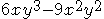
2
公式による因数分解。
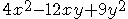
3
たすきがけ（2次3項式の因数分解）。
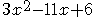
4
公式による因数分解。
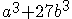
5
おきかえによる因数分解。
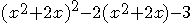
6
1文字で整理する因数分解。
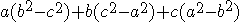
7
特徴のある因数分解。
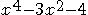
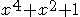
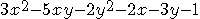
1
1.整式の各項に共通な因数を見つけ出す。
2.共通な因数をくくりだす。
解答例
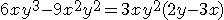
2
1.あてはまる公式を見つけ、正確に適用する。
I.)
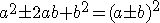
II.)
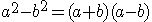
2.共通因数があれば、まずくくりだす。
解答例
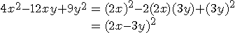
3
1.2次3項式の因数分解は、次の公式を用いる。
III.)
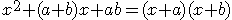
IV.)
2.たすき掛け。
公式IVのa, b, c, dの見つけ方。
a b -> bc
c d -> ad
ac (2次の係数) bd (定数項) ad+bc (1次の係数)
解答例
ac=3, bd=6で、ad+bc=-11となるものを見つける。
1 -6 -> -18
3 -1 -> -1
3 6 -19 (不適)
1 -3 -> -9
3 -2 -> -2
3 6 -11 (適)
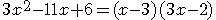
4
1.3乗の和・3乗の差の因数分解は、次の公式を用いる。
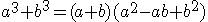
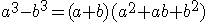
2.共通因数があれば、まずくくりだす。
解答例
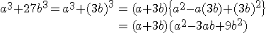
5
1.公式が使えるようにおきかえる。
2.因数分解できるものは、最後まで因数分解する。
解答例
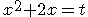
とおくと、
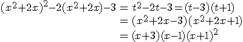
6
1.次数の低い文字について整理する。
2.どれも同じ次数のときは、1つの文字について整理。
解答例
どの文字についても2次。aについて整理すると
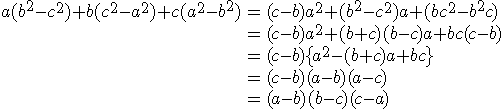
7
1.複2次式は、まず
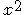
を1文字でおきかえ。
そして、
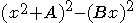
2乗の差を作る。
2.2次3項式は、たすきがけ。
解答例１
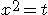
とおくと
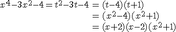
解答例２
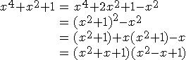
解答例３
xについて整理すると
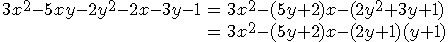
(たすき掛けを考える。)
1 -(2x+1) -> -6y-3
3 (y+1) -> y+1 (+
↑x^2の係数 ↑定数項 -5y-2 (xの係数)
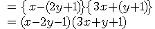
ユダヤ人は普通の人間だ。
ヒトラーは悪い。
ユダヤ人を差別するために、あらゆる手を使う。
差別するな。
VBの本を買った。
タイトルは、「世界でいちばん簡単なVisual Basicのe本」だ。
この本と、数学I+Aをやって、色んな買った本をもう一度読みたい。
買った本は、物理や語学、歴史とパソコンだ。
この本の良い点は、初心者に分かりやすくプログラミングを教えてくれる。
まず、OSとアプリケーションの関係から始まって、
VBの基本的な使い方、VBの基本的な文法、制御構造（プロシージャ、条件分岐、繰り返し）、
配列と構造体、オブジェクト指向を簡単に教えてくれる。
最近、うちのネコが馬鹿だ。
何でもかんでも食べる。
人が食べているレンコンを、横から狙う。
ネコは従わないが、犬は従う。
あまりに従いすぎる。
そこまで飼い主が好きだ。
ペットのいいところは、ただ可愛いだけでなく、飼い主を守るように見える。
うちのネコはあまり獲物を捕らえたりはしないが、
犬ならば、一番強いように見える。
ネコは、弱いように見える。
パソコンは悪い。何故なら、方程式が解けない。
解けるようになるのは良いが、アップルのiPhoneの音声機能や、
バーチャルシンガーを見ていると、ロボットを作るのは、悪い。
僕は、知性をつけたい。
そのためにあらゆる知性をつけた。
しかし、それでは悪い。
知性は、知性が減った方がつく。
僕は、終始みんなを操っていた。
昔の僕は、テレビを文章で操っていた。
そこまで馬鹿に狂っていた。
B'zの稲葉のような文章を書く。
それは、皆を馬鹿にするとともに、自分を馬鹿にして終わった。
何も分からなかった。
自分の支配から、皆を解放していた。
あとは、世界を書いていた。
世界にあるものを思い出して全部書き、国家を作っていた。
宣言で言葉にし、言葉に適応することが多かった。
「宇宙」や「環境」に適応する。
何かの言葉に適応するのが、終わらなかった。
それ以前は、世界を変えて、自分の支配で人を賢くしたかった。
全部のものを同じにしたり、違うにしたりしていた。
そういうことを止めて、自然に治した方が良い。
色んなものを作って、箱の扉を閉めていた。
そういう風に分かった。
箱を壊して、甦らせると良いかもしれない。
そのまま、神の話になって、神の言葉を分かっていた。
それはもういい。
それ以前は、日本やテレビと戦っている。
神を忘れた方が良い。
僕は、Fedoraだ。
Fedoraを愛して、Fedoraになった。
はてなアイデアやはてなブックマークを賢いと思っていた時期が多い。
OSとLinuxのことは、全部分かっている。
心の昔の部分が疼いている。
何も分からないのに、分からないで分かっている。
掲示板と想像力で、適当に色々と分かって分かった。
なぜか、Wikiの王になっている。どうでもいいWikiだ。
最近は、何も分からないのに統制で分かっている。
そこらへんが、要らないのが、最近の自分だ。
C#がやりたかった。C#のブラウザが、一番好きだった。
あるいは、PHPをやりたかった。PHPのスクリプト・ブラウザも良かった。
あとは、C++、Java、Delphi、Perlで悩んでいた。
Linuxをすることに決めた。言語を使いたい、統合デスクトップ環境を作りたい、OSを作りたい、コードを読みたかった。
ただのロボットだった。
その前の、Perlのブラウザ・ゲームをしていた時期が賢かった。
ネットゲーム中毒になっていた。
何もかも上を目指して、研究してクリアする。
ランキングの上位に入っていた。
その前の、テレビゲームをしていた時期は、何も不自由なく、楽に生きていた。
楽な方が賢い。
掲示板の時代は、馬鹿だ。
チャットが楽しかっただけだ。
今からゲームでもすればいいが、する気が起きない。
これがそのゲームだ。
http://kroko.maxs.jp/~kroko/newffb/others.cgi
時代はさかのぼるが、あの時代は賢かった。
学校で試験を簡単に出来ていた。
剣道部では、一番体力があった。
しかし、ゲームはつまらない。
考え方を網羅している。
良かった考え方は、「女になる」や「信じてそれを正す」だ。
あとは、色んな考え方を経験から網羅している。
「試す」や「よく分かる」が多い。
そこまで改良するのは間違っている。
パソコンは可能性豊かだから、新しい何かを作った方が良い。
ゲイツが賢い。パソコンをメトロにする。
アンドロイドをキーボードとマウスにすればいい。
今、フリー陣営も動いている。Firefox OSだ。
自分を馬鹿にして分かった。
馬鹿が世界と戦っているだけで分かる。
自分が分かっていると思って、
自分の分かっていることを他に分からせている。
しかし、あまり分かっていない。
適当に狂っている。
「意思」「権利」「自由」「場」「目線」が賢いと思っている。
その前は、自分を作って分かった。
掲示板で人格を試して分かった。
それが、サモア人や黒人、ドイツ人やロシア人、中東のムスリムになった。
適当にエロいものを見ていたが、今見ると何もエロくない。
昔は、それでWikiと掲示板を書いて、読んでいるだけの馬鹿だ。
昔自分が居た学校や、Wikiで見る大学などを、
想像力と環境の知恵で分かった。
適当に色々と分かっていると、結構全部分かっている。
会社は、方法と自由ということにした。
ネットでIT関係のニュースを見て、経営を良く分かり、
掲示板やWikiで、大学や会社と似たような活動をしている。
あとは、自由を方法と記憶ということにして、
プロセスを良く分かった。
オブジェクト指向を日本語的、ということにしていた。
主語であるオブジェクトに、述語であるメソッドを追加する。
今見ると、むしろ英語的だ。
最初に出てくるインスタンスをNewで作り、そのインスタンスを処理する。
英語の不定冠詞aと定冠詞theに良く似ている。
適当に、自分の言語を作りたかった。
ルートなどが全て常に記述される数式のように、分かっていることを常に全部分かりたかった。
今考えると、言語など全て同じだ。
英語でいうhaveは、フランス語でもドイツ語でも、独：habenとして、そこまで同じように存在する。
宗教は、適当に信じた。
神など居るわけないのに、自分自身を神にして、その頭に話を聞いて分かっている。
辛いだけだから、宗教は悪い。
Lispくらいで引数が分かった。
Wikiくらいでマクロと環境変数が分かった。
あとは、適当にUNIXのコマンドラインを分かっている。
最近の方が、さらに分かっている。
全部消して分かっている。
そこがおかしい。
何から何まで、自分を減らす。
何もなくなった。馬鹿だけが残った。
言葉が完全に、日本語になった。
最後にあるとないをつけて考える。
言う前に理由を言う。
そのまま英語になって、フランス語やドイツ語（似たようなもの）になった。
永遠に続く。今思ったことを全部言って、結論を信じる。
優しい人間になりたかった。
それだけで、悪い人間になった。
感情を考えて、論理的かつ理性的に分かった。
「目線」や「時間」と思って分かっている。
「関係性」や「自由」や「環境」「影響力」と分かっている。
馬鹿な管（元総理大臣）だ。
ゲームの中でも、賢いゲームは、パズル、戦闘・バトル、育成の順だ。
間違いをしなくなる。知性がつくだろう。
最近は、批判が怖くなった。
昔は批判を賢いと思っていたが、どう見てもけなしあいは馬鹿だ。
女は、良く考えると意味が無い。
女が欲しいと、すでに自分が女だ。
昔は、Linuxの情報発信や、初心者向けのガイドと思うからおかしい。
政治や社会に関しては、自由参加型の組織と思う。
そこまでのOSSだ。
あるものは、専門と職種だ。
その何かになって、良い人間になればいい。
しかし、なってしまうとつまらない。
そういう人間には、ツイッターがある。
知性は、昔つけたから、簡単につく。
知性がついてみると、昔中学時代にやった剣道の方が賢い。
まだ体力がつく。
ソ連や共産党は悪い。
ソ連は、ただのスターリンだけの国になった。
良く考えると、僕が怖いものは、批判だ。
批判が永遠に続くだけになった。
僕は、Linuxは使っていない。Windows 7を使っている。
昔からのパソコンが好きだ。あとは、Visual BasicとC#、過去には、Delphiが好きだ。
何も考えないのが悪い。
僕は、それが何なのか分かっていない。
例えば、スピーカーやテレビは機械だ。
インターフェースと、機械構造と仕組みがある。
何をする機械か、というと、
音や映像を人間に提供する機械だ。
しかし、それ以上考えれば良い。
発明は出来ない。無重力装置は作れない。
しかし、空想することは出来る。
あるいは、同じものを作ることは出来る。
そうすると、金や皆の手で改良されることが賢い。
発明したドイツ、英国はありえないが、
改良する日本やアメリカ、中国なども賢い。
特許と著作権が賢い。
違法なコピーをせず、作者に資金を還元すべきだ。
犯罪は悪い。殺す人間が居ると、殺される人間が悲惨だ。
違法コピーする人間が居ると、違法コピーされる人間が悲惨だ。
自由は悪い。統治し、悪いものを刑務所に入れなければ、良い国にならない。
過去は過去だ。人間は変わる。
ヒトラーが一番悪い。正しくない。殺されるユダヤ人が悲惨だ。
悪いものに罰を与え、刑を与え、禁止しなければ、環境は良くならない。
悪いことを許すだけで、悪い国になる。
馬鹿な日本は、自由にしているから、悪い漫画やオタク文化が蔓延する。
テレビゲームなど、戦争や死を風潮するものを禁止すべきだ。
オタクはあまりに悪い。
レイプや、殺人、違法コピーや人をけなし、暴言を吐くなどが悪い。
悪くなくは見える。見る人間が悪いだけに見える。
見るだけなら、悪くなくは見える。
あるいは、作る人間は、良いものを作っているように見える。
しかし、そんなことを言っていては、良い環境は生まれない。
しかし、禁止していては、良い文化が生まれない。
そういうものが、悪いのに多いのが、日本の首都、東京だ。
なぜか、エロい。
オタクは、あまり悪くない。
悪いのはそれくらいで、本当に犯罪に走る人間は居ない。
女が好きなだけ、良くある普通だ。
オタクは処罰しない。絵は誰でも描ける。
馬鹿なセックスを描いただけで悪いのもおかしい。
風俗や水商売、テレビのアイドルより悪くない。
僕は、全部自分と世界と普通のことを思い出して書いたことにより、
色んな事が書けるようになった。
文章を書くは、永遠に続いた。
そういう下積み時代が賢かった。
ありえないのは、馬鹿が書いている。
ギャンブル、特にパチンコや競馬を禁止すべきだ。
なぜか禁止しない。日本は自由だ。
麻薬、銃、殺人、未成年へのわいせつ行為は禁止している。
それなら、全部禁止すれば良い。
インターネットでの馬鹿な発言が悪い。
米ソほど極端なのも悪い。
アメリカでは、悪いことをする人間が多いし、
ソ連では、指導者を悪く言うことも出来ない。
インターネットでの馬鹿な発言は、さすがに禁止しない。
何も出来ない共産圏になる。
最近は、違法ダウンロードや、児童ポルノ画像の所持を禁止している。
まだIT業界は法律が未整備なため、今からどんどん禁止していく。
そうすると、馬鹿なIT関係のものは、見る意味が無い。
何でも禁止していると、何も分からなくなり、何も出来なくなる。
経験や体験が無ければ、何も分からない。
しかし、そういう経験は要らない。
そういう経験をしていると、馬鹿になる。
ソ連は、まともな人間しか居ない。
ただ、科学的、経験的に狂っている人間が多い。
しかし、何もない、何も出来ないならば、
何もしない、まともな、楽な人間になる。
アメリカ人は、狂っている人間が多い。
しかし、それで全部ただの普通の人間が多い。
あるいは、皆それぞれ違うため、何も分からない。
ただ、賢い人間が多い。
ヨーロッパ人だが、
ドイツ人は、低くて良い人間が多い。
フランス人は、全部馬鹿で賢い人間が多い。
イタリア人は、全部分かって何も分からない人間が多い。
イスラムは、神が導く。中国は、社会主義だ。
あとは、後進国や、アメリカ以下を馬鹿というヒトラーが多い。
テレビは、テレビの自由だから、テレビの自由を尊重しないのは悪い。
何故なら、ただ儲けたいだけだ。
あるいは、オタクは、ただ女を美しいと思っているだけだ。
悲惨な漫画やゲームの恋愛表現が多いせいで、漫画やゲームの女が好きになる。
ナチは悪すぎる。
ヒトラーの部下である、ヒムラーは、人種的に劣った民族を、「生きる価値の無い命」という。
何の意味もない。
ゲッベルスなんか、ナチに忠実に、国民をだます術を考えているだけだ。
漫画はエロくないが、エロすぎる。
左翼の方が良い。
悪いのは、国として悪い点は、ただ、独裁とプロパガンダとノルマ生産の国になった。
ものは何もなくなり、国家が所有するようになった。
怖いから悪い。
あるいは、左翼として悪い点は、馬鹿な左翼がインターネットで日本を滅ぼしている。
何もしていない。左翼がキモイのもおかしい。
左翼は、世界をまともで平等で、革新的で健全な世界にしたいだけだ。
自由はどうでもいい。アメリカの、「普通」な発想だ。
良く分からないほど、おかしなものを大量に作って、世界中に宣伝して儲けている。
誰もコカコーラなんかもう飲まない。アメリカが一番悪い。
自由と右翼が悪い。何もしない、悪いことばかりする。
あるいは、そういうものはソ連だ。
マルクスの悪い点は、社会所有だ。
ヘーゲルは、自身の著「法の哲学」で、所有について考えた。
そこでは、「所有の放棄」という概念に触れている。
マルクスは、社会所有の元、計画経済と共同体による、階層や位の無い、人民の平等な世界を説き、
世界は、独占資本主義ののちに、労働者の革命が起きて、完全な平等の世界が訪れるとした。
しかし、マルクスの段階では、共産主義は平等配給ではなく、努力と質に応じた配給だった。
レーニンによる革命が成功したロシアで、世界初の社会主義国家ソ連が生まれ、
スターリンによって、同じものを信じる革命崇拝ののちに、「一国社会主義」が建設された。
そこでは、スターリンによる指導と国家主義のもと、完全に平等に配給し、ノルマと強制労働で発展する社会を作った。
悪く言えば、スターリンだけが自由で、後は全員従い、ものは最低限のものだけを作る。
そこでは、集団農場や、上からの経済発展が行われた。
しかし、何もしない国は、そのまま、スターリン以外誰も何も出来ない、何も言えない、強制労働と平等抑圧の監視社会になった。
スターリンのあと、フルシチョフは、革命崇拝をするスターリンを否定した。
その後、ブレジネフなどが続き、ゴルバチョフでソ連は解体し、自由経済かつ、それぞれの独立国家となった。
アメリカは、皆をアメリカにする。
そこが良い。何故なら、皆アメリカな自分の国を良いと言う。
民主主義と独立によって、共同体は普通に存在する。
それで賢いものに統一し、経済と発展を自由にする。
それが一番賢いものが生まれる。
自由だ。
自由と平等の概念ならば、まともに机上で考えれば、平等が賢い。
格差や死、戦いや皆違う世界より、
平等や何もない、まともや皆同じ世界の方が良い。
しかし、現実は違う。
平等は、馬鹿な北朝鮮になった。経済的に勝てない、独裁者、併合と1支配者による平等により、戦争と殺害、悪いことしかしない。
自由は、賢い世界になった。IBM、Apple、GM、SONYなど、賢い企業が栄える。
生命や人間は、本来平等だ。
何も服を着ず、持たず、島で生活するならば、平等だ。
それに、あるものは全部同じものの方が良い。
その方が、分かる人間が分かるし、統一しなければ、機械は良くならない。
歴史的に考えると、本来人間は自由だ。
土地を持ち、金持ちや地主が、農奴を奴隷にする。
国は戦い、支配者が賢く、兵士が多い国が勝つ。
自由は新しい。
アメリカとドイツの文化や機械が、あまりに新しい。
それだけが良い。まだ楽しいだろう。
最近は、工場社会になった。
アメリカがあまりに、革新的なものを大量に作った。
最近、もう終わった。
レディーガガなんか、意味が無いだろう。
北朝鮮は、いまさらまた第一書記の母親崇拝をしている。
平等は、皆で同じものになる。
あるいは、なぜか韓国を差別している。
「ネズミ」と言っている。
核開発をして、ミサイルを飛ばしている、北朝鮮やイスラムは、全部同じだ。
アメリカには、落としてよく見える。
それこそ、アメリカは、日本の広島と長崎に落としている。
核戦争は、一番悪く見える。
アメリカも悪いが、大量に持っているロシアと中国が悪い。
何故なら、社会主義だ。
後は、アインシュタインが悪いから、物理学者が悪い。
中国は、行くとよかった。北京料理は、楽しい。
しかし、中国は悪い。
パクリ製品や、安いだけですぐ壊れる製品、農薬を使い放題の野菜、裕福層との格差、放射性物質の出し放題。
日本に見えて、結構、そういうものは日本に多い。
日本は一番悪いのは、文化が悪い。
少年漫画の暴力表現、日本料理の単純さ、相撲などの見世物スポーツなど。
しかし、日本はきちんとあり得ないことが出来る。
一番自由なのが悪いだけで、一億総中流や、終身雇用、識字率の高さなど、良い点は多い。
しかし、日本語がありえない、武士道的な「国のために働き、戦い、死ぬ。それが良い」など、
文化的なあり得ない点は多い。
誰もがきちんと働き、誰も悪いことをせず、己を責め、他を許す。
しかし、昔から、ロシアや中国になるなど、あるいは最近では、経済成長やコンピュータ産業など、強い。
韓国は悪くはないが、一度行くと何もなかった。日本語の分かる人間が多い。
ただ、キムチは美味しかった。
だが、韓国ドラマやK-POPはつまらない。ただの普通だ。ドイツに見える。
極東は悲惨だ。
日本と中国も馬鹿だが、日本以下の後進国も馬鹿だ。
日本には、島の文化がある。
そこらへんの島とは違うのは、戦う島だ。
そして、時代的に言えば、
明治、大正、昭和の、戦争と帝国的な、右翼日本と、
江戸時代や戦国時代の、侍日本、
平安や奈良の、京都のような島の文化が栄える、伝統的な島の日本がある。
あとは、経済成長とパクリだが改善する、バブルの日本、デフレの日本、オタクの日本がある。
悪い点は、島なのに悪い、悪いだけの島だ。
最近も強い。まだ、第三位だ。
蓮舫の下で、スーパーコンピュータ事業は、世界一になった。二位ではつまらない。
しかし、今、震災と政権交代、あいつぐ総理大臣の混迷、そして、民主党の小沢による分裂がある。
ロシアの首相の北方領土訪問など、今勝てると思っている、仮想敵国が多い。
中国、韓国、どことも極東アジアとの領土問題が起きている。
石原や橋下が色んな事を言って、やっているが、見るからに馬鹿な右翼の自由だ。
震災時の対応も遅い、民主党は一番悪い。
谷垣は怖い。何かをするだけだ。それで良いように見える。
悪いものは、金融と資本家だ。
トラスト、コンツェルン、カルテルが一番悪い。
マネーゲームを使って、銀行とともに儲けている。
独占し、植民地併合論者と金持ちに良くしている。
金持ちとイスラム、ユダヤ、アメリカが悪い。
批判されるのが怖いだけだった。
あとは、英会話教室のおかげで、英語の知性がついた。
結婚はあった方が良い。
女がひとりでこどもを育てるのは、悲惨だ。
パパがいないのも、女が働くのも悲惨だ。
男がすぐに若い娘に移るのもおかしい。
良い点は、自由だ。
右翼や自由は悪いから、左翼の方が良い。
右翼は、悪いヘンタイ画像だ。
自由がない自由は悪い。
平等な自由の方が良い。
ソ連は悪い。
自由の無い国だ。
女の同性愛などが多い。
正しい世界が良い。
国を繁栄させ、強くするのは良いが、
平等な世界も良い。
しかし、ソ連は失敗した。
評議会の支配者のいない連邦だったはずが、
スターリンの独裁帝国になった。
左翼が倒れると良く見える。
民主党が倒れると、良くしか見えない。
あとは、自分の敵や、みんなの敵、ただの馬鹿が倒れると良く見える。
家の色は、黒と白が良い。
生産と消費でものを作る。
法律と警察でルールを作る。
選挙と国会で決める。
それが民主主義だ。
国会とは、政治家や内閣の閣僚が議論し、質問に答える場。
選挙とは、国民が代表である政治家を、投票と多数決、立候補で選ぶこと。
生産とは、得られた利益をもとに、従業員を雇い、給与を支払う代わり、働いてものを作り、売り、利益をあげること。
消費とは、ものを手にいれる代わり、金を払って、相手に対価を与えること。
金とは、あらゆる消費と雇用における、ものの交換と役割分担の仕組み。
金を払う代わり、ものを手にいれる。
働く、ものを与える代わり、金を手にいれる。
法律とは、国民全員が守るルールであり、国がすることの決まりであり、政治体制の決まりであり、国民の権利を与える約束である。
警察は、法律に従わないものを処罰する。
裁判所は、犯罪者の罪と刑を裁く。
刑務所は、犯罪者が懲役の間、服役する。
公共のものは、税金で政府と役所が作るが、
公共的な仕事もある。
電力会社や、バス、鉄道、電話、テレビなど。
国が作る道路や河川、団地や水道などもふくめて、そういうものをインフラと言う。
インフラは、統一し、自由にするべきだ。
機械産業は、他の国に勝てなければならない。
人件費や標準規格もあるが、
農業や雇用も考えて欲しい。
資本家の悪い点は、
本当に会社を支配しているのは、
代表取締役、社長、株主だ。
労働者は奴隷だ。
つまり、株主がアメリカ人では悪い。
アメリカに支配されていると、アメリカの奴隷だ。
ものが変化するとき、そこには理由がある。
また、条件と積み重ねがある。
例えば、水の入ったペットボトルに穴を開ければ、水はこぼれる。
捉えて分かる。
環境にあるものを、一つ一つ捉える。
黙って止まるとすぐに治る。
統一した方が使える。